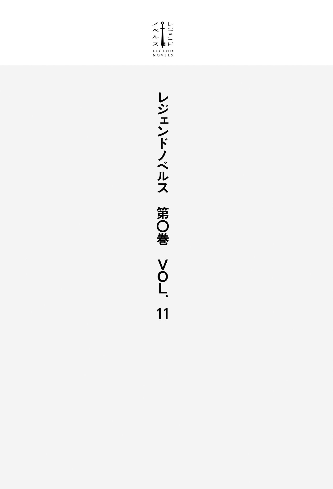

| レジェンドノベルス第０巻 ＶＯＬ．１１ ２０１９年８月版 | |
| 黒崎江治 & 南野雪花 & 焼月豕 & 原雷火 | |
| 講談社 (2019) | |
本作品は、縦書き表示での閲覧を推奨いたします。横書き表示にした際には、表示が一部くずれる恐れがあります。
ご利用になるブラウザまたはビューワにより、表示が異なることがあります。

私があの男、
その夜、私は卒論発表会の打ち上げを終え、大学のある
この時点で、私は春からの進路を決めかねていた。正確には、迷っているうちに、真っ当な選択肢を採れる時期を逸してしまっていた。
大学の心理学科に所属する私が採り得た進路は、おおまかに二つ。一つは院に進んで研究を続け、心理専門職──大抵の場合はカウンセラー──を目指すというもの。もう一つは、学部の新卒者としてそのまま一般企業に就職するというもの。
しかし大学院の入試は半月前に終了しているし、そもそも私は出願すらしていなかった。就活生はもうほとんどが内定を得て、大抵の企業も新卒の採用を終えていた。
今からハローワークや就職エージェントを利用するという手もあるにはある。けれど進学するにせよ、就職するにせよ、私にはそのどちらも選べないほどの迷いが、ごくごく個人的で
私に、社会で真っ当に生きることができるのだろうか。
例えば、働くのに差し支えるような身体的・精神的疾患があるとか、極端にコミュニケーションが苦手であるとか、社会的なマイノリティとして差別を受けているとか、そういう事実は、自覚する限りない。
勉強は昔から人一倍できたし、中学から続けた空手は二段の腕前だし、いじめを受けるようなことも、大きな人間関係のトラブルもなかった。
ではなぜ、と聞かれてもうまく答えられない。しかし、答えがないわけではない。深く考えるだけで苦痛をもたらすような理由は、確かに在る。
十歳のときに遭遇した、父の死。
それまで私は無邪気な子供だった。特別豊かでも、刺激的でもないが、生活には十分な幸福があった。それが長らく続くことに、なんの疑いも持っていなかった。
父が死んでも、家庭が壊れることはなかった。母は強い人間だったから。しかし大きく動揺したのは確かだった。これまでの当たり前はいともたやすく崩れ、どんなに願ったところで、二度と戻らなかった。
それ以降、私は
だから私は真っ当を手に入れることができない。真っ当が壊れるのを恐れるゆえに。
表面だけを取り繕い、社会的な身分だけ手に入れたとして、その葛藤を解決しない限り、遅かれ早かれ破綻するだろう。そういう奇妙な、しかし確固とした予感が、私の精神と行動を強く縛っていた。
思い悩む不肖の一人娘を心配した母親は、ごく温かい態度で、卒業後は一旦実家に戻り、ゆっくり今後について考えてみてはどうか、と提案してくれた。申し訳ないと思いつつ、私はその勧めに従い、ほとんど用のなくなった大学から、生まれてから高校時代までを過ごした横浜へと、逃げるようにして帰ってきたのだった。
そういう経緯を思い返しながら、私は人気のない商店街を歩いていた。
京浜急行線で横浜駅から十分と少し。古い街ではあるが、この商店街は少しずつ店舗を入れ替え、今でもそこそこの活気を保っている。
しかしそれは昼間の話だ。今は終電の時間も過ぎた真夜中。道に住宅が面していない分、明かりも音も少なく、あたりには耳に染みるほどの静寂が満ちていた。
商店街を途中で外れ、川沿いを歩く。風は冷たく、分厚い雲からはみぞれが落ちてきている。
そして自宅まであと数百メートルという場所で、私はそれと遭遇した。
黒いニット帽と、これまた黒いダウンジャケットを着た男が、小さな
強盗目的か、
私はいきなりの襲撃に不意を突かれつつも、反射的に動いた。暴漢の両手に
人体の固い部位同士がぶつかる、鈍い音が響いた。
想定外に強力な反撃を受け
暴漢の口から声にならない悲鳴が漏れた。間髪を入れず、私は前かがみになった相手の頭を摑み、鼻のすぐ下、
男が仰向けに倒れる。脚を戻した私は、そのまま相手の胸が真下に来るように立ち、やや腰を下ろして拳を自分の胸に引きつけた。
残忍な興奮が私の脳を
「おーい、待った」
しかし私が拳を振り下ろそうとしたとき、背後からやけにのんびりした声が響いた。
「近所で殺人事件はちょっとまずいね」
その声を聞いて、私はようやく正気に戻り、動きを止めた。
今、自分は何をしようとしていた？
脳と筋肉に集中していた血液が体表に戻り、私は頰や耳が熱くなるのを感じた。闘争の興奮は急激に引いていき、私は男を傷つけたのが自分自身であるのにもかかわらず、その容赦のなさに恐怖した。
私は日常への侵犯に対する反撃を加えたつもりだったが、それはおよそ正常人が踏み込める範囲を超えていた。見下ろせば、暴漢は完全に気絶していて、鼻からは大量の流血がある。歯も何本か、砕けるか折れるかしているだろう。
自分はこういうことをする人間なのだ。暴漢の負った傷の深さが、そのまま私の狂気だった。
声をかけてきた男が肩を触るまで、私は動けないでいた。振り返った私は、さぞひどい顔をしていただろう。
しかしその男もまた、尋常の姿をしていなかった。
街灯を背後から浴びた男のシルエット。その右半身にあたる部分が、奇怪に
「ああ、失礼」
男は私の目線を察知して言った。
「たまにこうなるんだよ。大丈夫。
やがて蠢きは小さくなり、完全に収まった。
「......帰らないと」
それだけ言うのがやっとだった。男の奇怪な姿に驚く余裕もないほど、私は動転していた。
「そんな顔で家に帰ったら、親御さん驚くんじゃないの」
それから男は、倒れている暴漢を完全に無視してしゃがみ込み、私の右膝に刺さっていた暴漢の歯を抜いた。
「僕の店がそこにあるから、少し休憩していきなよ」
男は私の返事も聞かずに腕を取り、アーケードの方向に歩きはじめた。男の右半身はもう、普通の人間となんら変わらない姿になっていた。
私の言えた義理ではないが、重傷の暴漢を一顧だにせず、警察を呼ぼうともしないこの男も、かなり頭がおかしいのだ。たとえ、先ほどの姿が見間違いだったとしても。
しかしそのことを私が冷静に考えられるようになるのは、随分あとになってからだった。
＊
男の店は、私の家から商店街のアーケードを挟んだちょうど反対側にあった。
一見すると築数十年の古い住宅としか思えないが、玄関には表札の代わりに、〝
こんな場所に古本屋などあっただろうか。少なくとも、私は知らなかった。もっとも、気をつけなければ店だとは分からないから、これまで見過ごしていただけかもしれない。
男は鍵の締まっていない引き戸をガラガラと開け、私を店の内部に招いた。
電気がつけられると、そこはせいぜい十二畳ぐらいの小さな店舗であることが分かった。壁際には木の本棚が並び、私を見下ろしている。
置かれている本はどれも古めかしかった。古本屋だから当たり前ではあるのだが、ただ中古の本を扱っているというわけではないようだ。本棚には漫画どころか文庫や新書の類もなく、その代わり名前を聞いたこともない人物の全集、手記、書簡、立派な革の、あるいは革なのかどうかよく分からない装丁の本、英語やラテン語、私の知らない言語で題名が書かれた本、題名のない、まったく素性の知れない本など、とにかく一風変わったものばかりがあるのだ。
ここは普通の流通から
「そこ、座っていいよ」
男は旧式の電気ストーブをつけてから、店舗の一角を指さした。本棚の陰になったそこには、ほこりっぽい布張りのソファが置かれていた。
私は言われたとおりにソファへと腰かけ、電気ストーブで足を温めた。男は店の奥にあるカウンターの、さらに奥へと引っ込んだ。多分、そっちは住居になっているのだろう。
私はざらついたコンクリートの床を眺めながら、そのまましばらくぼーっとしていた。先ほど、自分がしでかしたことの意味を再び考える。
子供のころに遭遇した父親の死が、私の行動原理に影響しているのは間違いない。しかしその経験と、
私は自分が
だから私はどこにも行けず、自分の進路も選べない。暗い道端で人を傷つけ、責任も取らず逃げてきた。
やがて男は奥の扉を足で開け、店舗に戻ってきた。その両手には湯気を立てるマグカップ。男は私に一つを手渡した。ココアの匂いがする。
「......さて」
男は自分のマグカップをカウンターに置き、自身はその裏にある椅子かなにかに腰かけた。
「君の名前は？」
「
「僕は古戸だ。古戸時久」
古風な感じのする名前だった。私は白いマグカップから、熱いココアを一口飲んだ。
ほんの少し落ち着いた私は、改めて男の容姿をまじまじと観察した。
今はカウンターの後ろに隠れてあまり見えないが、男は白衣のようなものを着ていた。カールしてだらしなく伸びた髪の下には、レンズの分厚い黒ぶち眼鏡がある。その奥にある瞳は、生命や活発さを感じさせない暗い光を
身長は百六十九センチある私より少し高いが、かなり瘦せている。肌色は不健康そうな土気色。年齢は、三十代半ばぐらいだろうか。
男は私の
沈黙に耐えかねた私は、先ほどの凶行に対する言い訳をするように、自分の来歴や、内にある迷いを語りはじめていた。
「カウンセリングでも試してみたらいいんじゃない」
男は
「それともそうしたくない理由があるのかな。アレは問題によってかなり長引くしね」
「しばらく実家でどうするか考えようと思うんです。バイトでもしながら」
「ふぅん。せっかくだから、ここで働く？ 運転免許あると
「あります」
「ワードとエクセルは？」
「使えます。パワーポイントも」
「それは別にいいかな......。自活できるほどとはいかないけど、親御さんをひとまず安心させられるぐらいの時給は出そう」
こんな古本屋に、バイトを雇うほどの仕事があるのだろうか？ しかし、こういう落ち着いた場所で、自らを省みる時間を持つのもいいだろう。店主はおそらく変人で、もしかすると人間ですらないかもしれないが、嫌になったら辞めればいいのだ。
「じゃあ、よろしくお願いします」
「お、これで求人を出す手間が省けた。寒い中散歩してみるもんだ」
こうして私は古戸時久と出会い、滴水古書堂で働くことになった。
しかしここでの仕事が落ち着いた、楽なものだと思っていた私の考えは、結果として大いに間違っていたのだ。
私の新しい職場となった滴水古書堂は、自宅から徒歩十分の距離にある。出勤は朝九時半。店を開け、昼休みを挟み、夕方四時半までの勤務となる。シフトは月・火・木・金の週四日で、社会保険はつかないが、時給は千三百円とバイトにしてはかなりの高給だった。
私の仕事はいわゆる一般事務だ。滴水古書堂は貧相な店構えの割に商いは大きいらしく、常連からの、あるいはインターネット経由での問い合わせや注文が多かった。伝票の整理、商品の発送、メールや電話の対応、在庫の管理、ごくたまに店を訪れる客のあしらいと、私が想像している以上に業務は多かった。
しかしそれでも、忙しいというには程遠い。空いた時間、私は古戸さんの個人的な蔵書を借り、それを読むことを許されていた。時折、英語書籍の翻訳を手伝うこともあった。
複雑な手順の作業はほとんどなかったので、覚えるのに苦労はなかった。そのうち古物商の仕事も教えよう、と古戸さんは言った。
滴水古書堂で働くようになってひと月。近くの川沿いに植わるたくさんの桜が、つぼみを膨らませはじめるころ。私がカウンターで作業をしていると、店内の固定電話が鳴った。ソファで居眠りしていた古戸さんが、驚いて膝に置いていた本を落としかけた。
「はい。滴水古書堂です」
受話器を取って応答すると、向こうで少し間が空いた。
「......ん？」
「先月からこちらで勤務しております。楠田と申します」
よく滴水古書堂を利用する客は、当然古戸さんが電話に出るものと思っているので、若い女性の声を聞くと戸惑うのだ。
「へー、店員ねえ。景気がいいのか、怠け者なのか」
電話の相手は年配の女性であるようだった。
「で、古戸は出られるかい？」
「はい。お名前をお伺いしてもよろしいでしょうか」
私の言葉を聞くと、女性は笑った。
「丁寧だねえ。あいつにもマナーを教えてやってくれよ。
「ありがとうございます。少々お待ちください」
私は電話を保留にし、古戸さんに声をかけた。
「藤さんって人からです」
「ああ、みことのバアさんか」
古戸さんは大儀そうに立ち上がり、私から子機を受け取った。話しぶりからすると、二人は親しいというわけではなさそうだが、かなり
どうやら藤さんは、古戸さんになにかしらの頼みごとをしているようだ。彼の表情からすると、それは中々面倒な案件らしい。しかし結局、古戸さんは嫌々ながらも頼みごとを請けたようだ。
「さて、出張だ」
子機を置いた古戸さんは言った。
「え？」
「今日はお店を閉めて、鎌倉に行くよ。さっきの人は僕の、まあ師匠っていうかなんというか」
「はあ」
随分唐突な話だが、別に急ぎの仕事があるわけでもない。私は言われるままに戸締まりをして、少し離れた駐車場にある車を取りにいった。鎌倉までは少し遠いが、県道をまっすぐ走ればいいだけなので、運転は難しくない。
時刻は昼前。ゆっくり走っても一時間はかからないだろう。シートを倒し、すっかりリラックスモードになった古戸さんを乗せて、私は小さなライトバンを運転して鎌倉へと向かった。
＊
県道沿いのハンバーガーショップで昼食を済ませた私たちは、昼過ぎには目的地へと到着した。鎌倉の中心市街から少し離れたところにある古本屋が、指定された場所だった。
「はい。運転お疲れ」
私たちは近隣のコインパーキングに車を
その古本屋は滴水古書堂と違い、通常の店舗として十分な体裁を備えていた。直射日光から本を
しかし今は店の戸口に休業中の札がかかり、営業している様子はない。
古戸さんは慣れた様子で私を先導し、店の裏手にある住居部分の玄関に向かった。このあたりは、滴水古書堂も薄命堂も似たような造りだ。インターホンを押すと、中で誰かが動く気配がする。
「ああ、来たね」
ドアを開けて顔を出したのは、七十歳手前ぐらいの女性だった。白の混じった灰色の髪は無造作に後ろで束ねられ、ノーメイクの顔は引き締まった、
「そっちがバイトの子だね」
「そうそう。楠田由宇子さん」
女性はまっすぐ私を見つめた。その瞳にはどこか真実を見透かすような、不思議な光があった。
「楠田です」
私は軽く頭を下げた。
「どうも。藤みことです。今日は来てもらって悪いね」
藤さんは表情を崩して、私たちを中へと招いた。
「猫
「うるさいね。
古戸さんは藤さんのことを師匠らしきものと言っていたから、古本屋としての仕事を教えてもらった、みたいな間柄なのだろう。二人の間には、長らく一緒に仕事をしてきた気安さがあるように思えた。
私たちは畳敷きの居間に腰を落ち着け、コタツを囲んで向かい合った。仕事の話というよりも、親戚の家を訪れているような絵面だ。
ポットで全員分のお茶を
「お客なんだから気にしなくていいよ。で、アンタはこの子にどこまで説明したの」
「全然」
「しょうがないね」
私と古戸さんは出された緑茶とチョコパイを食べながら、藤さんの話を聞いた。
「簡単に言うと、盗まれた本を探してほしいんだよ」
「盗まれた？」
私は思わず聞き返した。窃盗なら警察の仕事ではないのか。その思考を見透かしたように、藤さんは言葉を継ぐ。
「ただの本じゃない。とびきりの
「魔導書......」
古書の世界にはまだ詳しくないが、奇書とか、グリモアとかいう言葉は聞いたことがある。そういった珍しい本ならば、盗むほどの価値もあるのだろうか。
「名を〝カルナマゴスの遺言〟と言う」
「だから僕に売ればよかったのに」
「うるさいよ貧乏人」
カルナマゴスの遺言、と私は声に出して
「オカルト本の類ですか」
「いいや、違う」
どう違うのだろう。
「オカルトじゃない。本物だよ。読むと死ぬのさ」
死という言葉が、心臓に不快な触感を残す。冗談で言っている風ではない。呪いのダイヤとか、そういう類のものだろうか。
「なにかいわくがあるんですか」
「事実だよ。読むと死ぬ。直接見たわけじゃないけど、実際に死んでるらしいね」
藤さんはその言葉を押しつけるように、しつこく繰り返す。
「そんなものがあるはずはない、という大衆の認識により、本物は表に出てこない。幸か、不幸か」
古戸さんが面白がるように口を挟んできた。
「常識によって抑え込まれた真実が、この世界には確実に存在するんだよ楠田さん。読むと死ぬ本は存在する。カルナマゴスの遺言がそれだ」
私の常識は強固に抵抗を続けた。なにか理由をつけて否定したくなる。
「そんな──」
「それに、興味がないはずはないね？ 君も少し仕事に慣れてきたころだ。もうちょっと経験の幅を広げてもいいだろう」
「まあ、信じる信じないは、この際あんまり重要じゃない」
調子に乗って私をいじめはじめた古戸さんを遮るように、藤さんは言った。
「本題に移ろうじゃないか」
読むと死ぬ本が盗まれた。もし本の効果──呪いという方が正確か──が真実ならば、被害届を出すわけにはいかない。中身を確かめた捜査員が死ぬからだ。それを藤さんが気にするかどうかは分からないが、おそらく本は戻ってこないだろう。
「盗難に気づいたのは昨日の午後」
私たちはリビングを離れ、住居内の一室に移動していた。
そこはこれから店に出す本や、店頭には出さない本を保管しておく場所だった。ひんやりとした八畳くらいの部屋に本棚が並び、床には赤いカーペットが敷かれている。日光で本が劣化するのを防ぐためか、窓にはカーテンが引かれている。
私たちはその部屋の中で、現場検証よろしく手がかりを探ろうとしていた。
藤さんは本棚の一角を指さし、カルナマゴスの遺言が置いてあった場所を示す。
「大きさは大体縦四十センチ、横三十センチ。装丁はサメ皮で、内容はギリシャ語」
四十センチに三十センチだと、普通の本に比べてかなり大きい。サメ皮というのも珍しい。読むと死ぬというのが本当なら、ギリシャ語の内容を確かめるわけにはいかないが、それだけ特徴的な本であれば、外見ですぐに判別できるだろう。
もっともそれは、窃盗犯にとっても同じことだ。
「どういう風に置いてあったんですか」
私は尋ねた。
「分かりやすいよう箱に入れて、ビニールに包んであったのさ。うっかり読まないようにするためだけど、かえってまずかったみたいだね」
そう言ってから、藤さんは思い出したようにつけ加えた。
「カルナマゴスの遺言だけど、一つ面白い特徴がある。
「埃？」
「そう。ビニールで包んであろうと、冷蔵庫に入れてあろうと、表面がいつのまにか、うっすらと埃に覆われてるんだよ」
つくづくファンタジーな書物だ。
「時間と死についての真理が書かれた本だからね」
窓際を調べていた古戸さんが言った。
「普通に読もうと思ったら、寿命が千年でも足りない。犯人は不死の探究者か、自殺志願者か」
古戸さんはサッシをがたがたと動かしたり、クレセント錠を確かめたりしている。
「こじ開けられたわけじゃなさそうだねえ」
私はしゃがみ込んで、部屋の中央あたりでカーペットを調べる。別段高級品というわけでもなさそうだ。指でカーペットの毛を
それは直径一、二ミリほどの石粒だった。外から持ち込まれたものだろうか。もう少しカーペットを撫でていると、ほかに細かい土の粒もくっついているようだった。
私はそれを古戸さんと藤さんに伝えた。やはり犯人は屋外から土足で入ってきたようだ。
「つまり犯人は、カーペットの上に突然現れた、ってことだ」
古戸さんも頭は
私がカーペットのわずかな汚れを
金属製のオイルライターだった。私はそれを拾い上げ、電灯の光にかざす。
「遺留品でしょうか」
「私のじゃないね。タバコは孫が生まれたときにやめたから」
「ちょっと貸してみて」
古戸さんは私からライターを受け取り、不慣れな様子で火をつけた。
「不思議な火だ。そうそうあるものじゃない」
古戸さんはライターの蓋をカチリと閉め、そのまま白衣のポケットにしまった。
「本の買い手は決まってたんですか」
私は藤さんに尋ねた。先ほど、古戸さんが売るとかどうとか言っていたからだ。
「ああ。
「ぼったくるねえ」
稀覯本の価値というものが一般にどれほどのものか、私は知らない。ただ絵画に数億円の値がついた、というようなニュースを見ると、数百万の本があってもおかしくはないだろう。
もっとも、読むと死ぬ本を買う人間がいる、という前提があってのことだが。
「古戸さん、その人にも話を聞いてみましょうか。犯人が接触してるかもしれないですよ」
「ついでにライターのことも聞いてみるといいよ。魔導書を買うぐらいの人間だからね。そういうことにも詳しいはずだ」
藤さんは言った。
「一応、そうしてみようか。みことさん、ここまでさせておいて、無償とは言わないだろうね？」
「どれだけ欲しいか言ってみな」
「お金はいらない。ただ、もし六文字さんがカルナマゴスの遺言を読んでから、それが要らなくなった場合......」
古戸さんは自身の黒ぶち眼鏡を服の裾で拭きながら、口元を奇妙にゆがめた。私には彼の言わんとしていることが分かった。読むと死ぬ本を読んだ人間は死ぬ。そうすれば本は不要になる。
それは一般的な道徳に反するものだった。しかし合理的な要求だ、と私は思った。その要求に嫌悪は湧かなかったが、その要求を嫌悪しない自分を、私は嫌悪した。とはいえどのみち私はバイトに過ぎなかったので、古戸さんの判断に異を唱える権利はないのだ。
「それは私の知ったこっちゃない。本人と交渉するんだね」
藤さんは古戸さんや私よりもまともな感覚を持っているらしく、表情に嫌悪をにじませながら言った。
「本が盗まれたことは伝えてある。変わり者だから、見て驚かないようにね」
「どんな風に変わり者なんですか？」
「会ってみれば分かるよ。住所は──」
＊
六文字という老人の住居は、鎌倉市街の中心部に比べて山側にあるらしい。古戸さんによれば、鎌倉の住民は山側と海側でだいぶ文化や気質が違うようで、互いに反目しあっているのだという。
「今回の件とはまったく関係ないけども」
無意味な雑学を挟みながらも、私は車を運転して教えられた住所に向かった。そのあたりの家は寺社や美術館と見間違うような立派なものが多かった。
しかしエリア自体はさほど広くない。やがて私たちは目的の建物を見つけた。
「古戸さんは、六文字さんについて聞いたことがありますか」
「いや、名前だけだね。どれくらいジイさんかは知らないけど、金持ちなのは間違いなさそうだ」
古戸さんは六文字さんの住居である二階建ての館を見上げながら言った。白い石壁と薄緑の屋根は、どこか近世ヨーロッパの風情を感じさせる。買おうと思えば、中古でも二億円や三億円は必要だろう。
私は細い道路で通行の邪魔にならないよう車を停め、門扉の脇にあるインターホンを押した。しばらくすると、エプロンドレスとでも言うのだろうか、白いそれを身に着けた若い女性が姿を現した。
「はい」
女性はこちらに目を
私は古戸さんをちらりと
「すみません、薄命堂から来た者ですが」
私は軽く頭を下げて言った。
「古戸さまに、楠田さまですね。伺っております」
どうやら藤さんが一報を入れてくれていたようだ。女性は内側から門扉を開け、しっかりとしたフォームで頭を下げた。
「この
私も釣られて、もう一度頭を下げた。
「中へどうぞ」
三津さんは上品な所作で
「どんな悪いことをしたら、こんな家に住めるんだろうね」
古戸さんの失礼な軽口を涼やかに無視して、三津さんは私たちを家の奥に招いた。古戸さんは家の豪華さを
「旦那さま、薄命堂からのお客さまがいらっしゃいました」
「......入ってもらってくれ」
洋風の彫刻が施された木製ドアの奥から、しわがれた声が戻ってきた。
三津さんがドアを押し開けると、今までの空間よりかなり雑然とした空間が目に入った。昼なお薄暗い室内を占めているのはほとんどが書物だったが、中には魔術的な雰囲気を漂わせる物品、例えば銀色の
そして部屋の一番奥には、家の主がいた。
その姿を、その顔を見たとき、私は理屈ではなく直感で察した。
ああこの人はかつて、カルナマゴスの遺言を読んだのだ、と。
男性はひどく老いていた。しかし通常の老い方ではなかった。いや、どれだけの時間生きたとしても、こんな風に老いたりはしないだろう。
和装に身を包んだ老人の背骨は奇妙にねじ曲がっていた。袖の先にある手や顔も樹皮のように
「この姿に驚くのも無理はない」
唇も喉も固く動きにくいのか、老人は
「しかしこれには事情があるのだ。ともあれ、まずは自己紹介をしよう。私が六文字だ」
「失礼しました。楠田です」
私は彼の容姿に驚いた非礼を
「どうも、古戸です」
「三津さん。客人に飲み物を」
「はい」
陰気な家政婦は一礼し、部屋から出ていった。
「適当にかけてくれ。私は少し身体が不自由だから、座ったまま失礼するよ」
六文字さんは容姿さえ普通ならば、ごく柔和な人物であるように思えた。言葉遣いやイントネーションには、どことなく上品さが感じられる。
「あの、カルナマゴスの遺言のことなんですが」
「ああ、盗難に遭ったと、藤さんから聞いているよ。私も残念だが、君たちも災難だったね」
「いえ......」
何から切り出したものか。盗まれたときの状況を説明してから、ライターについての意見を求めようか。私が考えていると、それまで静かにしていた古戸さんが口を挟んだ。
「機会を逸しちゃうとアレなんで、最初に聞いておきたいんですけど」
「何かな？」
「あなたはなぜ、カルナマゴスの遺言を手に入れたいんです？」
私が古戸さんの上司なら、あとにしろと𠮟るところだが、立場上そうもいかない。聞きたいことがあるならば、最初から話を仕切ってくれればいいのに。
「ふむ」
六文字さんは、少し考えるような様子を見せ、そのねじ曲がった身体をわずかによじらせた。多分、姿勢を正したのだろう。
そのとき背後のドアが開いて、三津さんが飲み物を運んできた。雑多な物品を避けて置かれたそれぞれのカップからは、紅茶のよい香りが立ち上ってくる。三津さんは一礼すると、またすぐに部屋から出ていった。
六文字さんはそれを待ち、口を開いた。
「君はあの本がどのようなものか知っているようだ」
「ええ」
「ならば、それについての詳しい説明は省こう。私は一度、あれを読んだことがある。八十年前か、九十年前か。先の戦争より前だったことは覚えているのだが」
この老人は何歳なのだろう？ 見た目からは年齢が判断できない。彼の言葉が正しければ、当時三十歳だったとして、百十歳か、百二十歳ということになる。
「当時の私は若く、愚かだった。今も賢いとは言えないがね。私の実家には資産があった。いわゆるブルジョワジーというやつだが、私自身に才能があったわけではない。ただの
おぞましいこと。私の頭の中には、首を斬られる羊や、かがり火を囲んで乱交をする男女の映像が流れた。
「そしてやがて本物に行き当たった。カルナマゴスの遺言だ。魔術を志す者なら、誰もが一度は考えるであろう不老不死。その秘密が記された、世にも珍しい書物だ。今思えばなんと愚かだったことか。極めて、極めて愚かな行為だった」
ほとんど動かない表情から、強い後悔が腐汁のようににじみ出た。
「私はそれを読んだ。命を失わずに読むだけの知識があった。少なくとも、そう信じていた。そして私は死と時間を捨てたのだ」
六文字さんは一度乾いた
「不死を得た私は有頂天だった。たとえ醜くねじ曲がった姿になり果てたとしても。しかし自らの愚かさに気づくまで、そう長い時間はかからなかった。
私に残されたものが、これまで
分かるかね。私は自殺志願者なのだ。そしてカルナマゴスの遺言こそが、それを達成するために唯一存在する手段なのだ」
六文字さんはそこまで話すと、また紅茶で唇を潤し、反応を待つように、その黄色く濁った目を私たちに向けた。
私はその話を信じた。目の前にいる老人の姿と、その迫真の語りとで、信じざるを得なかった。
死のうと思って死ねないのは、どんな気持ちなのだろう。それはきっと出口のない苦しみで、想像しただけでも気が狂いそうだった。たとえ精神が壊れたとしても、そのまま永遠に肉体へと囚われるのだ。私にはこの老人が狂っていないことが不思議でならなかった。いや、一般的な意味で言えば十分狂気なのだろうが、少なくとも彼にはまだ理性が残っている。もしかすると、元々狂っていたからこそ、異常な状況下でも
「カルナマゴスの遺言じゃないと、ダメなんですか」
私は話の内容に動揺しつつも、彼が放つプレッシャーに耐えかね、恐る恐る尋ねた。
「今、私がこの場に存在しているという事実が、その証左だよ」
おそらく彼は何度も試みたのだろう。首を
「なるほどね、事情はよく分かりました」
そんなこちらの気も知らないで、古戸さんはポケットから例のライターを取り出した。
「カルナマゴスの遺言が盗まれた現場に落ちていたものです」
古戸さんはそれを目の前に掲げ、火をつけてみせた。暗い紫色の炎が、薄暗い部屋の中でぼんやりと灯った。古戸さんは火を消してから、ライターを六文字さんに手渡した。
六文字さんはそれを手に取り、ひび割れ、強張った手で火をつけた。
「冷たいな」
彼がその火に触れると、火はまるで柔らかいクリームか何かのように指へと移った。普通なら熱くてたまらないだろうが、どうやら六文字さんが不死であることと、熱さを感じないことは関係がないようだった。それは熱を持たない火なのだ。
六文字さんは火を指で
「確かにこれは特殊な品だ。魔術の臭いがする」
「誰が使っていたのか、分かりますか」
「いいや。しかし追う方法がないではない。少々骨は折れるがね」
それは猟犬が獲物を追うのに似ている、と六文字さんは言った。
「僕にもできますかね？」
六文字さんはわずかに目を細めた。
「手順はそれほど複雑ではない。しかし、あまり愉快な作業とも言えないぞ」
「ところが、僕はそういうのを愉快に感じる
六文字さんがこちらを見たので、私は首を振った。古戸さんと同じ人間だとは思われたくない。
「それに、ちょっとお願いしたいこともありますしね」
古戸さんは嬉しそうに言った。
それから六文字さんは、犯人捜しに使う奇怪な方法を説明しはじめた。私は一部を聞いただけでも、自分の常識と精神を揺さぶられたような気分になり、若干の吐き気を催した。
肉体から分離した魂をさまよわせ、魔術的な痕跡を探る。それが六文字さんの提案した方法だった。望むならもっと詳しく教えよう、と彼は言ったが、私は断固として遠慮することにした。
「その魔術？を覚えるのに時間がかかりそうなら、私はちょっと、ライター自体について調べてみますね」
「ああ、いいよ」
古戸さんはすっかり興味を奪われていて、私の言葉にもごくおざなりな返事しかしなかった。
私は銀のライターを借り受け、六文字さんに断ってから、一旦外出することにした。
部屋から出ると、どっと疲れが押し寄せた。自分がいかに異質な空間で、異質な存在と話をしていたのかということを、改めて自覚せずにはいられなかった。廊下を通りかかった三津さんに力なく会釈し、玄関で靴を履く。ここでメイドをしていれば、顔も陰気になろうというものだ。
屋外に出て、清浄な春の空気を深く呼吸する。私は近くに停めた車に乗り込み、手に持った銀のライターをまじまじと観察した。
このライターが
見ただけでブランドが分かるほど私はライターに詳しくないが、調べることは簡単だ。私はスマートフォンを操作し、いくつかキーワードを変えながら検索してみる。このライターが一般的なブランドのものだということが分かるまで、それほど時間はかからなかった。
ライターにはまた、表面に微細な彫刻が施してあった。幾何学的に構成された模様は、一見してどんな意味があるのか理解し難い。しかしブランドのサイトなどを調べてみたうえで判断すると、これはどうやら、あとから加えられた装飾のようだ。
ただ、それ以上のことは分からなかった。もっと情報を集めるには、誰か詳しい人間に聞く必要がある。魔術の講義はまだ当分終わらないだろうから、私は市街へ出てみることにした。散策がてら、ライターについてさらに情報を集めるとしよう。
＊
タバコは自動販売機やコンビニで購入するのが一般的なはずだ。ではライターはどうだろうか。プラスチックの安いライターならば、コンビニや百円ショップでも買うことができる。しかし数千円から数万円のオイルライターは、どこで売っているのか。オリジナルな彫刻を施すとしたら、どこでやってもらえるのだろうか。
私はふと先日のことを思い出す。大学近くの居酒屋でおこなわれた卒論発表会の打ち上げ。そこでは気取った同期の一人が、キセルでタバコを吸っていた。吸い口とは反対側に少量の葉を詰め、わざわざマッチで火をつけて、数回吸っては灰を捨てる。紙巻きタバコに比べると手順からして面倒で、本当にうまいと思っているのだろうかと疑問に感じた覚えがある。
それに関連して、私の頭に喫煙具という単語が思い浮かんだ。キセルを使うような、喫煙になにがしかのこだわりを持った人間が使う道具。こだわりを持った人間ならば、そういった店で、ライターに自分だけの装飾を施すこともあるだろう。
調べてみると、鎌倉市街に喫煙具の店が一軒だけあった。私は観光客の少ないコインパーキングに車を停め、ナビゲーションを頼りに店を探した。
三月の鎌倉はまだ肌寒く、街歩きに最適な陽気とは言えない。しかしさすがに観光地だけあって、国内外を問わず観光客の姿が随所で見られる。ときには団体となってスペースを占領し、通行の邪魔になっていた。
十五分ほど歩いて、私は目的の場所に到着した。黒ずんだ木材とくすんだショーウィンドウは、店舗が随分前からここにあることを示している。少なくとも、二十年は前からやっているだろう。もしかするともっとかもしれない。
私は〝紫苑〟──しおん、と読むのだろうか？ しえん？──と書かれた看板の下をくぐり、すりガラスのはまった木製のドアを開けた。棚に囲まれた狭い店内には、
棚に並んでいるのは、ライターやタバコ葉をはじめ、キセルや水タバコらしきもの、それらを手入れする道具、そのほか用途の分からない色々なもの。私にとっては全体的に馴染みがなく、なんとなく居づらさを覚える場所だった。
店の奥にあるカウンターに人の姿はないが、さらに奥からはかすかにテレビの音が聞こえてきている。一日にそう多くの客を相手にするわけでもないから、ずっと店番をする必要もないということだろう。
「すみません」
私は少し
「はい、いらっしゃい」
藤さんより多少年齢のいった
どう切り出すかは、あらかじめ考えてある。
「あの、このライターを近くで拾ったんですが」
銀のライターをカウンターに置く。店主はそれを手に取り、私の顔と交互に見比べ、表面の装飾を親指でこする。
「ああ、少し前にウチで加工したヤツだね。模様の指定が細かかったから、覚えてるよ」
「落とし主はどんな方だか、分かりますか」
「まあ普通のおじさんだね。それ、こっちで預かっとこうか」
「いえ、大切そうなものなので、直接お返ししようかと」
店主は頭を
「まんじさん、ですか」
「そうそう、ここいらに住んでんじゃないかな」
「住所は分かります？」
「そこまでは聞いてないね」
ともあれ、固定電話の番号があれば、大体の住所も特定できるだろう。私は店主に礼を言い、大麻っぽいキーホルダーを三百円で買ってから紫苑を出た。結局、店名の読みは分からなかった。
時刻は午後二時を少し過ぎたところだ。私は駅に近い喫茶店で三十分ほど時間を潰してから、六文字邸へと戻ることにした。
＊
「おかえりなさい」
魔術の講義は終わったのか、古戸さんは壁際の肘掛け椅子に腰を下ろし、机に積まれていたと思われる本のページを、パラパラと物珍しげにめくっている。
「犯人、このあたりに住んでるみたいです。古戸さんの方はできそうなんですか、幽体離脱」
「一応、やりかたは教えてもらった。それで、臭いのもとは？」
臭いのもと？ 私は一瞬戸惑ったが、すぐにライターを指しているのだと気づいた。それをポケットから出し、古戸さんに手渡す。
「じゃあ六文字さん。部屋をお借りしてもいいですか？ 万が一のとき、対処できる人がいると安心なんで」
「ああ、構わないが」
二人が共にいたのはたった一時間程度。しかし六文字さんもまた、古戸さんが相当の変わり者であることに気づいたのだろう。古戸さんを見る彼の目が、若干変わっているように思えた。とはいえ黄色く濁った目と、ひび割れ強張った顔面から、詳しい考えを読み取るのは難しい。
「どれくらいかかるんです？ 時間」
「数時間ってとこじゃない？」
「一旦帰っていいですかね」
「ダメだよ。途中で僕の呼吸が止まるかもしれない」
確かに、ずっと六文字さんや三津さんに見ていてもらうわけにもいかない。本音としては、ならばそんなものに手を出すな、と言いたいところではあるが。
「ちゃんと時給は出すからさ」
結局、私は残業を承諾した。事故がないよう見張るだけでいいなら、さほど面倒な仕事ではない。一応、心肺
二階にある一室を借りて、古戸さんは準備をはじめた。ベッドの上に
古戸さんははじめ音節の切れ目や発音のリズムを試行錯誤していたが、数分の練習を経て感覚を摑んだらしく、やがてスムーズに、そして陰鬱に詠唱を繰り返すようになった。それを聞いていると、なんだか私まで異界に誘われそうな、妙な気分になってくる。
十分ばかり詠唱を続けていた古戸さんは、そのうち居眠りをするように頭を前後させはじめた。声はしばらく続いていたが、それもある時点でぷつりと途切れ、仰向けでベッドに倒れ込んだ。
魔術は成功したのだろうか？ 私はソファから立ち上がり、古戸さんの顔を
＊
太っちょの少年がファンタジー世界から現実に戻り、多少なりとも勇ましく、決意を得て未来を歩みはじめたあとにも、古戸さんは目を覚まさなかった。私は脇のコーヒーテーブルに本を置き、読後の余韻に浸りながら、ひんやりした革張りのソファに身を横たえた。時刻はそろそろ午後六時を回ろうとしている。
そのとき部屋の扉がノックされ、三津さんが顔を出した。
「お食事をご用意いたしましたが、いかがされますか」
「あ、頂きます。ありがとうございます」
「かしこまりました」
しばらくすると、トマトとチーズとチキンが入ったホットサンドと、かぼちゃのポタージュが運ばれてきた。私は三津さんに再び感謝を述べてから、それらを食べはじめた。
夕食を
読むと死ぬ本。不死の老人。幽体離脱の魔術。ひと月前まで平和に過ごしていたのに、なぜこうなってしまったのか。
いや。平和だと思い込んでいただけなのだろう。私はあのとき夜道で人を殺しかけたこと、右半身を奇妙に蠢かせる古戸さんに声をかけられたこと、そして現在巻き込まれている奇妙な出来事が、一つの道筋として
だとするならば、この後もそうなのだろうか。あまり気持ちの良くない見通しが、背筋に冷たいものを走らせる。
しかし、古戸さんが異常な人間だということは、出会ったときから分かっていたことだ。動揺していたとはいえ、それにのこのこついていったのだから、自分も少なからず今の事態を望んでいたのだ。彼の異常さのもとでなら、自分は比較的まともなのかもしれない、と思えるからだろうか。
結局のところは、よく分からない。心理学を多少
腹が八分目まで満ちたので、少し眠くなってきた。古戸さんがいつ起きるか分からないし、見たところ突発的な事故も起きそうにないので、いっそ寝てしまおうか。古戸さんのことだ。私がそうしたところで、
そんなことを考えていると、古戸さんに変化があった。今までぴくりとも動かなかったのに、突然ひゅっと息を吸って身じろぎしたのである。
「んん......」
大儀そうに
「どうでした？」
「すごく疲れた......」
どうやら相当に魔力、というか精神力を消耗したらしい。私は二日連続で徹夜して卒業論文を書き上げた、無計画な同期のことを思い出した。
「犯人は分かったんですか？」
「分かった。分かったんだけど、今日はこのまま寝かせてくれ」
そう言うや否や、古戸さんは再びベッドに倒れ伏し、すぐさま寝息を立てはじめた。
今まで見張っていたのはなんのためだったのか。若干の怒りと徒労はあるが、再び古戸さんを起こしたところでどうにもならない。それはそうと、トイレは大丈夫なのだろうか。
私は空になった食器を持って一階に降り、六文字さんに状況を報告した。
「まあ、そうなるだろうな。正常な状態だから、安心するといい。とはいえ、乱用するのは当然好ましくない。あらゆる魔術は、多少なりとも正気を犠牲にするのだ」
私にとってそれは忠告されるまでもないことだし、古戸さんには言っても無駄だろう。ともあれ私は改めてもてなしに対する礼を述べ、古戸さんの非礼を詫びて、六文字邸をあとにした。
外に出ると、あたりはすっかり暗くなっている。家々には明かりが灯り、ああ、とりあえずは正常に回っている世界もあるのだな、と私に思い出させてくれた。
ここから徒歩と電車で帰るのは非常に面倒なので、私は古戸さんの車で地元まで戻ることにした。明日の朝、また迎えに来ればいいだろう。
車を駆り、夜の鎌倉街道をのんびりと北に向かう。今日寝るときは、せいぜい平和な夢を見たいものだ。
＊
翌日は分厚い雲が空を覆う、肌寒い陽気だった。
穏やかな夢を見たかどうかはともかく、私は十分な睡眠を摂り、十時ごろ再び六文字邸を訪れた。
古戸さんは昨日と同じ部屋にいて、ベッドでだらしなく横になっていた。しかし体調を崩したというわけではないようで、ただ二度寝をしているだけだった。
「朝ですよ」
「......やあ、おはよう」
服も昨日と同じ。ベッド脇には薄汚れた白衣が放置されていた。髭も
「今日はどうするんです？」
古戸さんはにやにやしながら起き上がり、昨日体験したことを私に語ってみせた。私はソファに座り、話を聞く。
幽体離脱を果たした古戸さんは、鼻やまぶたがないゆえの広い視界に戸惑いながら、なんとかその霊体をコントロールするべく空気と格闘した。数十分後、それなりの速度で移動できるようになった彼は、次に魔術的な気配を探った。手に入れた銀のオイルライターをつけたときと同じような、黒紫色の気配である。
それはかなり遠くにあったが、到達不可能な距離ではなかった。古戸さんは暗くなる前に帰れるよう、六文字邸を出発した。暗くなっても実体のない身では、照明のスイッチをつけることも、懐中電灯を持つこともできないからだ。
風に乗ることもできなかった古戸さんは、自力でふわふわと南に向かった。そして三浦半島西側の田園地帯に、目的の場所を見つけた。
気配のもとは、小さな庭付きの平屋だった。建物自体に変わったところはなく、霊体の侵入を阻むような、
「え」
そんなあっさりと見つかってしまったのなら、昨日私が調査したことはなんだったのか。いや、魔術を使ったにしては苦労した方なのだろうか？
「でも家主はいなかった。しばらく待ったけど戻ってこなかったから、僕も帰ってきたんだ」
そしてぐったりと疲労を感じて目覚めた、というわけだ。
「じゃあ、場所は分かったんですね」
「うん。だから今日行こうと思って」
「......ちょっと急すぎませんか？」
「警察に任せるわけにはいかないんだから、僕らがやらなきゃ事態は動かないよ」
よく考えてみれば、古戸さんが言っていることにも理はある。相手は死だか不死だかを手に入れたい狂人なのだから、じっくりと外堀を埋めていくのはむしろ非現実的。カルナマゴスの遺言がある場所を突き止めたなら、あとはそこに行くしかない。
「放っておいたら余計な死人が出るかもしれない。これは刑法上の緊急避難だよ」
「そういうものですかね......？」
うまく言いくるめられてしまった気がするものの、とりたてて反論する材料もない。私は難しく考えるのをやめ、古戸さんに言われるまま目的地へ向かうことにした。
三津さんに見送られ、六文字邸を出発した私たちは、小さなライトバンを駆り、県道を南へと走った。
＊
曇天の下、
「どのあたりですか」
「うーん。見たのは上空からだったから」
見慣れないライトバンがうろうろしていれば怪しまれる。特定に時間はかけたくない。幸い家の数が少なかったので、目当てのものは比較的すぐに見つかった。
「ああ、あのフェンスと犬小屋は見覚えがある」
それはこぢんまりとした木造の平屋だった。周囲にはアルミ製と
「犬がいるんですか？」
「どうだったかなあ。いると面倒だなあ」
離れた場所から観察した限り、家やその周囲に動きはない。犬は寝ているのか、あるいは飼っていたのが過去のことだったのか。
古戸さんはさも当然のように、ダッシュボードからガラス破砕用の小さなハンマーを取り出した。私にはもう、咎める気も起きない。
まだ古書堂が営業しているということは、きっとこういった無茶を、なんとかやりおおせてきたからなのだ。
どのみちもう運転手を務めてしまったのだから、共犯は免れない。なかばやけになりながらも、例の平屋に近づいていく。周りは見通しのいい畑なので、こっそりやろうにもやりようがない。
今は平日の昼間。一般的な社会人ならば、外で仕事をしている時間だ。ただ、相手は一般的な社会人ではないだろう。魔術師は日中、なにをして過ごすものなのだろうか。
私たちは
「ここの窓がよさそうだ」
古戸さんは人が通れそうな窓の一つに目星をつけた。どうやらクレセント錠がかけられているらしい。
私は露骨な犯罪行為から顔を背けるように、また住人の目を警戒して背後を見た。
そのとき、こちらに走り寄ってくる背の低い影が視界に飛び込んでくる。
人ではない。それは黒い犬だった。
背が低いといっても、それは人の基準での話。走り寄ってきたのはドーベルマンに似た大型犬だった。
ただでさえ恐ろしげな見た目の犬種なうえ、その犬は皮膚病でも患っているのか、体のあちこちがただれていたり、手術痕のような縫い目があった。
犬が激しく
「ふ、古戸さん」
私は半身に構えつつ、犬の攻撃に備える。しかし四足の獣と組み手をした経験はない。思い切り殴れば多少は怯むだろうか？
しかし、犬は中々襲いかかってこなかった。どうも様子がおかしい、怯えているようにも見える。意外と気が小さいのかと思ったとき、私にもその原因が分かった。
「ちょっと邪魔しないでねえ......」
古戸さんが猫なで声で言う。ざわざわと名状しがたい気配が、私の背中を不快に圧迫した。振り返らずとも分かる。あの日夜道で見た、不定形の何かが活性化しているのだ。
狂犬はその黒い尾を股の間に挟み、じりじりと後ずさりしはじめた。十分距離を取ると、そのまま情けない鳴き声を上げながら逃げていった。
気づけば私も、背中に大量の汗をかいていた。
「あの、それ、あんまり出さないでもらえます？」
「半ば生理現象みたいな感じだから、我慢してね」
失禁でもしてもらった方がまだしも許せる。
私が息を吐いて振り返ると、古戸さんが器用に窓ガラスを割ったところだった。小さな穴から手を差し入れ、クレセント錠を解除する。カラカラと窓を開け、躊躇なく窓枠に足をかける。
「今更やめようとは言わないね？」
「......まあ、はい」
もうどうにでもなれという気持ちで、私も続けて屋内に侵入した。
ガラス片を踏む音が、静かな屋内に響く。そこは私がイメージする一般的な独居男性の部屋と、大した違いはないように思えた。都市部から離れたところにある分、スペースが多く取られているくらいか。
ただ注意深く見れば、家主が属する独特の文化が、そこはかとなく漂っているのが分かった。それは黒い木で作られたライオンの彫像からだったり、中心に目が描かれた星の
私はしばらく周囲の様子を窺っていたが、人影もなく、物音もしなかった。家主はどうやら、留守にしているらしい。
「本は確かこっちの部屋に──」
古戸さんが奥にある寝室に進もうとしたとき、その扉の脇にある姿見の鏡面が、ぐにゃりと
私は古戸さんの肩を摑んで引き留め、そちらに視線を向けるよう促す。
「なんだろうね」
古戸さんは無警戒に姿見へと近づく。
姿見を注視し続けていた私は、すぐ自分の勘違いに気づいた。鏡が歪んでいるのではない。鏡に映った空間が歪んでいるのだ。
私は
その向こうで大きななにかが動く。それははじめ極めてぼんやりしていたが、徐々に輪郭を確かにしていった。
人だ。誰か来る。
歪みから出てきたのは、小柄な男だった。額はやや後退して、その上に載った髪の毛は縮れている。眼鏡をかけた
彼はねじれた木の
「古戸さんッ」
私は警戒の声を上げた。話すか？ 逃げるか？ それともとりあえず殴るべきか？
視界の端に異物を捉えた私は、反射的に姿勢を低くした。
「おぶっ」
次の瞬間、私の頭上を通り抜けたのは、部屋の中央に鎮座していたはずのダイニングテーブルだった。数十キロはあろうかというそれが、古戸さんに勢いよくぶつかる。彼は妙な声を上げ、無様に壁へと叩きつけられた。
私がそれに気を取られた隙に、今度は椅子が襲ってきた。私は椅子の角で背中を強打され、その勢いで床に転がった。間を置かず追撃が飛んできたが、蹴りでなんとか軌道を
とても話し合いどころではない。いや、もちろん私たちにも責任はあるのだが。
身体をしならせてなんとか跳ね起きると、今度はテーブルが、私を押し潰すように前方から迫ってきた。
避ける？ 大きすぎて無理だ。両腕と片膝で急所を防御したものの、衝撃自体は
辛うじて受け身を取ったが、それでも背中を打ちつけ、肺から空気が叩き出される。一瞬、意識が
扉が開いて衝撃が逃げたのは幸運だった。あのまま潰されたら、骨が折れていたかもしれない。
古戸さんは大丈夫だろうか？ 多分死んではいないだろう。それより、今は自分の身が大事だ。私はなんとか上体を起こし、情けない格好でずるずるとあとずさった。
あとずさったところで、部屋の異変に気づいた。
床には指先に引っかかるほど、大量の埃が積もっていた。壁はひび割れ、カビが生え、茶色く劣化している。部屋の隅には
ここはなんだ？ まるで十年も二十年も放置されていたように見える。
ゴン、と大きな音がして、扉を塞いでいたテーブルが床に落ちた。悪意を宿した男の瞳がこちらに向く。
私は慌てて立ち上がり、背後にあった窓に手を伸ばす。鍵はかかっていないはずなのに、開かない。
横から書き物机が飛んできて、私の右肩に命中した。そのまま吹き飛ばされ、本棚に突っ込む。衝撃で本が落ちて、バラバラと私の頭上に降り注いだ。
「あっ......ぐ......」
このままでは殺される。なにか武器になるようなものはないか。目くらましでもいい。
床に散らばった埃だらけの本。その中で一つ、分厚い埃を
大判の本、サメ皮の装丁。そしてそれに向けられた男の視線に、私は気づいた。
カルナマゴスの遺言だ。
何か具体的なプランがあったわけではない。これを破り捨てるぞと脅すとか、実際に破棄してやるとか、そういうことは考えていなかった。ただ反射的に、私はカルナマゴスの遺言へと手を伸ばした。
男も私の行動に気づいたのか、こちらに駆け寄り、私から本を奪い取ろうとする。
ほんの少しだけ早く、私の指先が本に触れた。しかし次の瞬間、不可視の力が私を持ち上げて、空中に放り投げた。
下手なワイヤーアクションよろしく空中に舞った私は、視界の端でカルナマゴスの遺言が開かれるのを見た。
そして一秒後、私は床に叩きつけられた。本日何度目かの受け身を取り、衝撃を逃がす。だが私の耐久力は、もはや限界を迎えつつあった。次は無理だ。モロに
気合でなんとか身を起こした私は、異様な光景を目にした。
開かれた本の前に、
天井に穴が開いているわけではない。光の柱は物理的な障壁を透過して、どこか得体の知れない場所から投射されているのだ。男はまるで時間を止められてしまったかのように動かない。
それは通り道だった。現実世界の二地点を結ぶ、ちゃちなものでないのは明らかだった。それは異次元から、宇宙の辺縁から、時間と空間が停止した世界から、なにか恐るべきものを運んでくる通り道だった。
降りてくる。
はじめ、それはミイラ化した小さな子供のように見えた。表皮は枯れた
その姿はどことなく六文字さんに似ていた。しかし、彼よりもっと恐ろしい存在なのは間違いなかった。
これが死を望む魔術師の求めたものだ。不死を
それは天井から速やかに降りてきて、跪いたままの男に触れた。
触れた場所から、崩壊がはじまった。一瞬で何百年分もの時間が
男は塵になった。不死を得ることは
私は顔を背けたかったが、できなかった。目を閉じたかったが、できなかった。もっともそんなことをしたからといって、その存在を知覚の外に追い出すことなど、到底できなかっただろうが。
いつのまにか、それは消えていた。光の柱も消えていた。残ったのは塵の小山と、そこに残った、二つの小さな足跡だけだった。
そのとき私は悲鳴を上げていたのだと思うが、自分の耳には届いていなかった。私は目の前のものを拒否できなかった代わりに、ほかのどんな刺激をも拒否しようとしていたのだろう。先ほど見えていた光の柱は、そこから降りてきた存在は、私の薄い正気の膜をいとも簡単に貫通し、引き裂いたのだった。
視界がブラックアウトしていく。私は自分が意識を手放しつつあることに、ほんの少し
＊
「おーい」
どこか遠くから呼びかけられた気がして、私は意識を取り戻した。
目を開けるとそこは埃まみれの部屋で、頭を血に濡らした古戸さんが、私の顔を覗き込んでいるところだった。
「あ、起きた」
私は仰向けに倒れていたようだ。意識を失う直前になにをしていたか、はっきりと思い出せない。しかしとても恐ろしい思いをした、という確信だけはあった。
「古戸さん、頭、大丈夫ですか」
ダイニングテーブルをぶつけられたときにひどく出血したのだろう。こめかみのあたりから出たらしい血が、古戸さんの顔にべっとりとついていた。それは白衣まで滴っていて、彼をスプラッター映画の登場人物みたいにしていた。
「ああ、傷はふさがったから大丈夫」
便利な身体だ。なりたいとは思わないが。
「それより、カルナマゴスの遺言は？」
古戸さんは部屋を見回した。私は身体を起こして顔をごしごしとこすった。部屋の中央には、バケツ一杯分の塵の山がある。
私は先ほどなにがあったのかを、しっかりと思い出した。光の柱と、そこから降りてきた名状しがたい存在。
死神というものがいるのならば、ああいうものだろうか。いや、あれはそういった人間の想像力の外にあるものだ。人間が神話とか
私が塵の山を見ていることに気がついた古戸さんが、それを無造作に足で払った。中に埋もれていた大判の本を拾い上げる。
「うん。なにがあったのかよく分からないけど、とにかくこれで依頼は完遂だ。楠田さん、立てる？」
古戸さんが差し出した左手を摑み、私は立ち上がる。落ち着いてみると、改めて全身のダメージが意識された。骨は折れていないようだが、ひどい
「早く帰りましょう。......身体も痛いし、疲れました」
「そうだね。かなりどったんばったんやってしまったから、警察に通報されてるかもしれない」
事ここに至っては証拠隠滅もなにもない。第一、犯人、というか被害者自体が隠滅されてしまっているので、警察が調査したとしても、途方に暮れるだけに終わるだろう。
とりあえず古戸さんは風呂場で血を流し、私は家を出て車を回した。痛んだり
「時給千三百円じゃ割に合いませんよ」
「賃上げしようか？」
「できれば、労働環境の改善を......」
＊
「おや、おかえんなさい」
その日の午後、私たちは薄命堂まで戻ってきていた。古戸さんは、全ての事実を藤さんに話す必要はないだろうと言い、私もそれに同意した。第一、どんな言葉をどうやって使えば、あの状況を説明しうるのか、私にはちょっと想像がつかなかった。
「ふうん」
藤さんほど
「これで孫の学費が出せるってもんだ。報酬はちゃんと払わないとね」
「あの......」
「ん、なんだい？」
「いえ、なんでもないです」
その本を六文字さんに売れば、彼は死ぬのではないですか。それについてはどう思いますか。私はつい尋ねてしまいそうになって、思いとどまった。
それは私が正常人ぶりたいがためだけの、何の意味もない質問だ。そんなこと、藤さんは当然理解しているだろうし、それでも商売人のプライドを持って、本を売ろうとしているのだ。六文字さんについては言わずもがな、カルナマゴスの遺言の恐ろしさを、身に染みて知っている。
だから私は聞かないことにした。ここまで知り、やっておきながら、普通の人間みたいに振舞うのはあまりに
「余計なお世話だと思うけどね。古戸みたいな男とは、あんまりつきあわない方がいいよ」
「ええ、気をつけます」
私の隣で、古戸さんが苦笑いした。
＊
カルナマゴスの遺言を取り戻してから、一週間が経った。
鎌倉で繰り広げた探索行と、そこで体験した奇妙な出来事、そして遭遇した名状しがたい存在は、私の精神を大きく動揺させた。しばらく時間を置いたあとも、その名残が正気を
その朝も私は仕事が手につかず、物思いに耽る時間が長かった。
「ぼんやりしてるね」
ついに古戸さんに指摘されるまでになった。これは一般的な基準に照らし合わせると、かなり致命的なぼんやりであると言えた。
「こないだの出来事が頭から離れないんです」
私は正直に白状した。
「なぜ？」
「だってあんなの、常識の外じゃないですか。もっと言えば、その、狂気ですよ」
狂気、という言葉を聞いた古戸さんが、なぜか嬉しそうににっこりと笑った。
「その言いぶりだと、狂気とは精神のありようではなく、まだ知られていなかった真実である、とも聞こえるね」
意味を理解するのに時間がかかり、私は言葉に詰まった。そんな様子などお構いなしに、古戸さんは言葉を重ねた。
「しかしその洞察は中々に正確だ。人々がいわゆる狂気と呼んでいるものの中には、厳然たる真実も含まれている」
「意味が分かりません」
「例え話をしよう」
なぜこの男はこんなにノリノリなのだろう。私は
「例えば今この店に全裸の男が入ってきたとしよう。彼は正気か、狂気か」
「まあ、狂気ですかね」
「もちろん八割方そうだろう。しかし彼が衣服を一枚二枚纏えば、狂気とは見られない」
「人間は普段、正気で狂気をくるんでる、ってことですか？」
私は言った。
「半分正解だ。人が確かに持っている内なる狂気、宇宙の真理たる外なる狂気。その二つのどちらかが正気の膜を貫通したとき、弾けて壊れてしまうのか、持ちこたえるのか。それは個々人の強さや柔軟性によるだろう」
正気が布か薄膜のようなものである、という言いぶりは、今回私が体験したことを踏まえるとあながち間違いとも言えない。不死の魔術師と死をもたらす魔術書は、チベットの高原や、アマゾンの奥地にあったわけではない。そんなものはあるはずがないという思い込みと、無知がそれを覆い隠していただけだ。
「君の悩みは」
カウンターの外側からずいと顔を近づけられ、私は思わず身体を引いた。
「誰もが持っているもののカタチが人と違うのではないか、という戸惑いだ。しかしいわゆる真っ当なカタチというものは、真っ当なありようというものは、時と場合と場所と文化によって違うと思わないか？ 世間の真っ当に縛られるあまり、窒息してしまうのも、随分とバカらしい話じゃないか？ 自らの正気をどういうカタチにするか、自分を世界にどう位置づけるか。きっとそれを考えるために、君はここで働くのさ。もっとも、末路については保証しかねるが......」
正直なところ、古戸さんがなにを言っているのかはほとんど理解できていなかった。それでも、ひどく不吉な予言をされていることだけは分かった。
「服の例えで言うと、古戸さんは葉っぱ一枚残して全裸、ってとこですね」
私がささやかな反撃を試みると、古戸さんは心底おかしそうに笑った。その肩越しに客の姿が見えたので、私は立ち上がってそれを迎えた。
「失礼します」
それは六文字邸で家政婦をしていた三津さんだった。
「お約束の品を届けに参りました」
彼女はレターパックよりも一回り大きな包みを胸に抱いていた。
「ああ、ありがとう。ありがとう」
古戸さんはそれを楽しみにしていたようで、やや大仰な仕草で包みを受け取る。三津さんは用事を済ませると、深々と礼をして去っていった。
「それ、なんですか」
私は尋ねた。
「カルナマゴスの遺言だよ。用が済んだら譲ってくれるよう、お願いしておいたんだ」
私が強く眉をひそめたのを見て、古戸さんはなだめるように言った。
「大丈夫。まだ読まないからさ」
ああ、この男にはやはり、葉っぱ一枚分の正気すら残っていないのだ。私は事件以降、どこか見え方の変わってしまった景色をぼんやり眺めながら、その後の陰鬱な勤務時間を過ごした。
不満というものを持たない人間はいないと思う。
他人から見たら
べつに珍しい心理じゃない。
だからといって、
「こういうの、本気で求めてたわけじゃないんだけど......」
何もない空間を見つめ、私は
何かにたとえるなら宇宙の
判っているのは、少なくともここが恋人と待ち合わせをしていた
「あまり取り乱していないようだね」
男か女かも判別がつかない声が聞こえる。
しかし姿は見えない。
「......そうでもありません。色々限界ですよ」
肩をすくめてみせる。
上下の感覚すら不明瞭な空間である。
私が平静を保っているように見えるとしたら、多くの異世界転移ものの作品で語られてきたことを、追体験として受け入れているからにすぎない。
「私は死んだのでしょうか？」
トラックにはねられた記憶とか、まったくないのだが。
「
声が私の名を告げる。
個人情報を知られている、ということに恐怖は感じなかった。
むしろ、そういう次元はとっくに通過している。
「状況の説明をおこなおう」
言葉とともに、何者かが姿を現した。
女性である。
妙齢の。
「......女神さま、ですかね？」
「なるほど。君にはそう見えるわけか」
「というと？」
「この姿は、君の心象をかたどっているにすぎない。簡単に言うと、このような局面で説明役を務めるのは女神またはそれに類するものであろう、と、君が思っているから、そう見えるというだけだね」
「ははあ......そういうものですか......」
曖昧に
正直、この女性が言っていることのすべてを、私は理解したわけではない。
もちろん納得したわけでもない。
とはいえ、ここで話の腰を折っては、いつまでも先に進まないのだ。
異論も反論も、相手の言い分を聴いてから。
「君にやってもらいたいことがある」
じっと女性が私を見つめる。
なかなかに美しい顔立ちだし、情感たっぷりの表情だ。
妄想がカタチになったものだというなら、どうにも私は面食いということになってしまう。
恋人とまったく似ていないという点について、心の中で謝罪しておく。
「別の次元、君たちから見れば異世界ということになろうか。そこを救って欲しい」
「......予想していなかったわけではありませんが、いざ実際に聞いてみると、
思わず苦笑する。
選ばれし勇者が世界を救う。
多くのファンタジー作品で描かれてきたテーマだ。
しかし、それはフィクションだから許されることである。
たったひとりの勇者に救われる世界とか。どんだけ安いんだって話だろう。
私だって、
人間ひとりにできることなどたかが知れているし、仮に最善を尽くしたところで、完璧からはほど遠い。
「事態が陳腐きわまりないからね。説明もまた陳腐になってしまう」
女性もまた苦笑いを浮かべた。
「ふむ？」
「救うというのは語弊があるかもしれない。実際におこなうのは修理だよ」
「修理ですか？」
「ああ。君の
表情を変えないまま女性が説明する。
その世界には幾人かの日本人が赴いたという。
そして様々な知識を伝え、様々な変革をもたらした。
「現代知識無双や俺つえーですね。それが悪いと思ったことはないのですが」
「本来、べつに悪くも何ともない。幾度でも例のあることだしね」
「そうなのですか？」
「君たちの世界も同様だよ。種々の介入があり、影響があり、今のカタチになった」
それは、たとえば先進国が発展途上国に対しておこなう
先達の文明を持つ世界が、後発の世界に知識や技術を供与する。
そうやって連綿と宇宙の歴史は紡がれてきたのだという。
言われてみれば、地球の技術革新だって停滞したり急加速したりしている。
古代ギリシャ文明の時代に、この惑星が球形だと唱えられていた、などという説もあるくらいだ。
外洋を航行する術すらない時代に、である。
ふうと息を吐く。
少しばかり話が壮大すぎて、理解が追いついてこない。
「つまり、要約すると、私は他の日本人が送り込まれた世界に行き、彼らがしでかしたことを収拾する、ということでしょうか」
「大筋において間違った解釈ではないね」
「なぜ、私なのでしょうか？」
これは誰しもが持つ疑問だろう。
今度こそはっきりと美女が笑った。
「とくに深い意味はないよ」
「んな理不尽な......」
「
「それは......」
私は知っている。
昨今、世に
引きこもっていたり、いじめを受けていたり、
たぶん、私のような
ごく普通の家庭に生まれ、特筆すべき点もないような幼少期を送り、ありふれた高校から三流の私立大学へと進学し、卒業後、とくに疑問もなく
二十代のうちに
恋人もいる。
四歳年下の二十七歳で、つきあい始めて三年。互いの両親への紹介も済んでおり、来年に挙式の予定である。
「よほどのことがない限り倒産もなければ解雇されることもない職場、休日も暦通りにあり、余暇を楽しむ余裕もある。そして将来を誓った婚約者とは仲
異世界に思いを
現状で、おおむね満足を得られている。
「つまらない人生ですよ。波乱もなければ冒険もない」
「その
「でしょうね。日々の暮らしに窮している人がいることも、将来に夢も希望も抱けない人がいることも知っています」
美女の苦笑に、私も苦笑を返す。
自ら望んだ道だ。
生まれ落ちる場所や性別を選ぶことはできないが、進学先や就職先を選ぶことはできる。
私は、私の意志によって
「すなわち、これまで送られた人物像とは点対称だ。ゆえに君を選んだ」
まさに平凡な人間に訪れた転機である。
「......拒否することは可能ですか？」
「可能だ。だが、君は拒否したいのかな？」
「............」
お見通しというわけだ。
たしかにこの空間にきたときから、私はわくわくしている。
心が騒ぎ出している。
何かが始まる。そんな予感だ。
しかし、私は踏み出すことができない。
今の生活から。
両親も恋人も、友人たちも、私にとって愛すべきしがらみだ。
捨てるわけにはいかない。
「君が向こうで死んだら、今この
ためらう私に、美女が条件をつける。
「死んだら？」
「病死、戦死、老衰死。種類は問わない。とにかく時間は君の一生分だよ。その期間でベストを尽くしてくれれば良い」
「ベストって......結果は？」
「それも問わない。最善を尽くしても駄目なときは駄目だから。大切なのは結果ではなく手を尽くしたか否か、という点。君になら判るだろう？」
無茶苦茶である。
しかも、私になら判るときた。
「それは、
「その通り」
「最悪ですね」
役人の世界では、結果というのはさほど重要視されない。
努力をせずに成果をあげるより、努力はしたが成果があがらなかったという方が尊ばれる。
五分間で素晴らしい成績を残すよりも、定時いっぱいまで頑張って、それでも成績を残せない方が良しとされるのだ。
「私たちの業界でも大きな違いはない。現地神より、ここから引っ張った人間たちがひどいとクレームがきた。ゆえに、それらとは違う個性を持ったものを派遣する、という運びになったのだよ」
私が
残せなければ、この世界の人間は駄目だと思われるだけだ。
今後、引っ張られる人間もいなくなる。
それだけの話である。
「なんか、ずいぶんと事態を投げているように思えますが......」
「私はね。風間エイジくん。世界渡りという制度があまり好きではないのだよ。栄えるにしても滅びるにしても、その世界に住まう者たちの責任において
「なるほど......」
「では問おう。風間エイジくん。
神は何もしない。
人間がどれほど
人間がどれほど
ただ見ているだけだ。
無感動で無関心な観客のように。
しかし、それは間違った考え方ではない。
人類に危機が訪れるたびに、神なり超人なり光の戦士なりが降臨して助けてくれて、人々を良い方向に導いてゆく。
冗談ではない、と、私は思う。
少なくとも、そんなものは人間の歴史とは言わないだろう。
超越者に助けられるだけの
それが人類の役割か。
そんなわけはない。
これまで人類の危機は人類によって救われてきたし、今後もそうだろう。
もし、万が一、どうしても人類の手に余る事態になったのならば、そのときは助けてくださいと頼む。
どうかお慈悲をと額を地面にすりつける。
もちろん相手方が、それで動いてくれるかどうかは別の問題だ。
「とはいえ、
ぼりぼりと私は頭を
目前に広がるのは、札幌駅前の光景ではない。
どこまでも続く緑の草原と一本の道。
ちょっと日本とは思えない景色だが、いかに祖国とはいえ、すべての情景を熟知しているわけでもないので、日本ではないと断定することはできない。
「いやまあ、ここが異世界なんだろうけどね」
断定できなくても、疑う要素がないのも事実だ。
あの美女──結局、神とは名乗らなかった──が、それ以外の場所に送り出す理由がない。
私は、彼女の依頼を引き受けた。
あっしには関わり合いのない話でござんす、と、断ることは簡単だった。
いくら日本人がしでかしたことだからといって、私個人が責任を取るべき筋のものではない。
まして、呼び出したのは異世界の方であり、その結果について元の世界の責任を追及するのは、あまりにも理屈が通らないだろう。
予測するべきだったのだ。
本来であれば、修理のために誰かが派遣されるのはおかしいのだが、クレーム処理みたいなものだという。
「馬鹿馬鹿しくなるけどね」
「その割には、悩んだ時間は短かったがの」
「まあね。じつはそこまで立派な理屈を考えていたわけでもないんだ。楽しそうだ、と、思ってしまった」
安定した仕事。
愛すべき恋人。
大切な家族。
不満があったわけではない。だが、心のどこかで憧れていた。
今とは違う人生に。
「だから、ベクトルが違うだけで、動機は同じなんだ。私もまた鬱屈していたということなんだろうね」
「難儀な生き様じゃの」
「まったくだよ。ところで」
私は視線を動かし、先ほどから親しげに会話をしているモノを見つめた。
青とも緑ともつかない
首が長く、頭には角があり、背中には申し訳程度に翼がついており、力強そうな尻尾がびったんびったんと地面を
ファンタジー世界の定番、ドラゴンだ。
ただ、そんなにボリュームはない。
せいぜい私と同じくらいの体長である。
「君はいったい、何者なんだい？」
「説明すると長くなるゆえ、かいつまんで言うと、エイジの相方じゃな」
「かいつまみすぎじゃないですかねぇっ!? 」
相方はちっこいドラゴン。
それだけでは、なんぼなんでも説明不足である。
「ち」
「今舌打ちしたなっ」
「ちなみに竜の舌打ちはタンギングといっての。ブレスを吐くときの火打ち石のような役割じゃ」
「ねえっ！ その説明必要だった!? 必要だったの!? 」
「様式美じゃ。ともあれ、我はようするにインターフェイスじゃよ。
大口を開けて笑う。
びっしりと並んだ牙がちょっと怖い。
つまり、この竜はこの世界に不慣れな私を案内し、補佐するための存在ということである。
どうして人間の姿ではなく、竜なのかといえば、たぶんこれも様式美とかそういうものなのだろう。
まあ、あの空間で会ったような妙齢の美女だと、私の方が困ってしまうのは事実だったりする。
恋人というか婚約者のいる身で、美女と二人旅というのは色々とまずい。
自分のことを肉食系だと思ったことなど一度もない私だが、人並み程度に性欲はある。
どうやっても恋愛対象になりようのない相方の方が、なにかと問題は起きないはずだ。
きっと。
「趣旨はだいたい理解したよ。君のことは何と呼べばいいのかな？」
「我に名前はない。好きなように呼んでかまわぬぞ。アヤノとか」
「自分の恋人の名前を付けるのはちょっと......」
「ならば、ジークとかでもかまわぬ」
「元ネタが判らないよ......私の名前はバンじゃないよ......」
「んむ。おおむね知っておるな。そもそも汝、生まれていたか？」
「じつは、どストライクだね」
私の生まれは一九八六年。
当時は中学生くらいだった。
わりとどうでも良い話である。
「ちなみに君の性別は？」
「メスじゃな」
「ならティアマトにしようか。愛称はティアで」
メソポタミア神話に登場する竜神の名である。
女神だったというから、そう的はずれでもないだろう。
「適当じゃのう。オスだったらどうするつもりだったのやら」
「バハムートとか、そのへんで」
「エイジの知識は、神話というよりゲームが元になっているようじゃな。バハムートが竜として描かれるのは
「博識だね。ティアは」
「おそらく必要だろうと推測される知識と、たぶん必要ないだろうと思われる無駄知識は、だいたいインストールされておるからの」
「なんで後者を入れたのか......」
「ウィットに富んだ会話のためじゃな。異世界ぼっちというのも寂しいじゃろうという配慮じゃ」
「格別のご
苦笑する。
私自身、そうコミュニケーション能力が不足しているという自覚はないのだが、文化も風習もわからない異世界で、いきなり人の輪に飛び込んでいけるかと問われれば、首を横に振らざるを得ない。
そもそも言葉だって通じるかどうか。
心づいてティアマトに
「そこは問題なく通じる。言語等の本当に最低限のコミュニケーションツールは、エイジにもインストールされておるからの」
返ってきたのは、じつに頼もしい答えだった。
どうやら私も世界渡りとやらをするときに、色々といじられたらしい。
これは、チート能力とかも授かっている可能性がある。
「ないぞ？ エイジに特殊能力なんぞ」
「くっそっ。
「我の話をどこで聴いておったのじゃ。最低限のツールと言ったじゃろうが」
「......見事な追い打ち、ありがとうございます。ちょっとくらい夢を見たっていいじゃないか」
「にんげんじゃものな。てぃあを」
「ウィットに富みすぎじゃないですかねぇ」
観客もいないのに漫才を繰り広げつつ、私とティアマトは街道を歩く。
私に特別な力が与えられていないのは、この地の神を
まあ、チート能力を持った日本人にさんざん
ずいぶんと人間くさい話ではあるが。
「地球の神話大系の神々も、けっこう人間くさいがの」
そりゃそうだ。
多くの場合、神というのは人間が作ったものである。
そういうと語弊があるが、神というのはようするに人間の想像力や信仰心が生み出した存在だ。
ゆえに、人間の想像を超えるような姿をとることはないし、性格だって人間に近い。
「その意味では、私の会ったカミサマはドライだったね」
「アレはべつに神ではないからの」
「そうなのかい？」
「もう少しばかり現実的な存在じゃな。
「それのどこが現実的なのか問いたい。問いつめたい」
「問いつめるのはかまわぬが、詳細を解説するには多少の時間を要するぞ？」
「多少ってどのくらいだよ？」
「エイジの頭脳で理解可能な用語に置き換えながら話せば、四年くらいかの」
「ＯＫ。ティア。ほぼ神ってことで」
「賢明な解釈じゃ。さて、無駄話に興じている間に目的地が見えてきたようじゃぞ」
はるか視線の先だ。
けっこう威圧的な街門が見える。
もちろん門だけでなく、ぐるりと街を囲っているであろう街壁も。
「アズール王国の王都、リシュアじゃ」
「大きな街だね。
旅行先で最初に期待するモノは料理というのは、べつに私に限った心理ではないだろう。
知らない街に行ったら、まずは
「エイジには珍しくもないのかもしれんがのぅ。コメの飯が食えるじゃろう」
苦笑するようにドラゴンが言う。
「コメがあるんだね」
「ある。それも銀シャリじゃ」
「銀シャリて......」
ティアマトの古くさい言い回しに笑いそうになった私だが、その笑いが半ばで凍り付いた。
白米のみを炊いたご飯のことである。
それの何がおかしいのかと現代人ならば考えるだろうが、それはまさに現代人だからだ。
日本だって昭和の初期まで、庶民は普通に玄米を食べていたのである。
なんで中世ファンタジー世界に白米があるのだ。
「エイジや。もう一度言っておくぞ。ここは汝ら日本人が、わや にしてしまった世界じゃ」
わや。
私の出身地である
北海道弁を話すドラゴンというのは、だいぶシュールだと思うが、この国に起こっている事態はもっとずっとシュールである。
中世風ファンタジーの世界に白米とか。
どーすんだよこれってレベルだろう。
「これを元の状態に戻せってことなのか......？」
「無理じゃよ」
私の呟きにティアマトが返した言葉は、じつに素っ気ないものだった。
視線で問い返す。
「ひとたび豊かな生活を知ってしまえば、もう不便さを受け入れることはできぬ。エイジは知っているのではないか？」
「......ぐうの音も出ないね」
事実である。
私は文明人だ。いまさら原始人の生活になど戻れない。
きんきんに冷えたビールが飲みたいし、清潔な風呂にも入りたいし、快適な家に暮らしたいし、パソコンや携帯端末で簡単に情報を得たいし、お菓子も料理も手軽に手に入れたい。
社会全体に
停電などが起きるとよく判る。
現代人がどれほど電気に依存した生活を送っているか、ということが。
そして、それを捨てることができないということも。
東日本大震災以降、日本の電力事情は
それに代わって自然エネルギーを利用した発電が脚光を浴びているが、さすがに不足分を完全に補うには至っていない。
にもかかわらず、節電に心がけた生活を送っている日本人が、世にどれほどいるだろうか。
もちろん私自身を含めて。
ティアマトが言うように、生活の質を落とすことができないのだ。
私は職業柄、市民の相談を受ける機会もあったが、まだ新人と呼ばれていた時代にこんなことがあった。
たしか納税の相談だったと記憶している。
事業が
バブル崩壊後、この国の経済は低迷を続けており、いっこうに上向く気配がない。
そういうものなのだろうと聴いていた私は、相談者の一言に目が点になった。
思わず頭突きをかましてやろうかと思っちゃったほどである。
当時、大学卒の職員の初任給は十六万円ちょっと。
そこから保険料だの税金だの
一ヵ月の生活に、どうして私の給料の三倍近い金銭が必要になるのか。
好きなだけ飲み食いして、好きなだけ遊び歩いて、自分たちは節約していると主張する。
あげく、公務員は税金で食えるから気楽で良いとか。
くそ。思い出したら腹が立ってきた。
「戻ってこいエイジ。汝はどこに旅立っておるのじゃ」
「ごめごめ。ちょっと思い出し怒り」
「思い出し笑いなら判るがの。新しい用法じゃのう」
罪もないアズール王国の地面に、やり場のない怒りをぶつけていた私にティアマトが
「生活のグレードを落とすことは難しいって話だよね。趣旨は理解したよ」
「んむ」
結局、成長してしまえば、赤ん坊のころに寝ていたベビーベッドに寝ることはできないのだ。
文明の味を知った異世界の人々を元の生活に戻そうとしても、不可能な話だろう。
「いっかい全部ぶっ壊す、とかしない限りの」
「それは地球にも言えることだね。すべての文明が破壊されてしまえば、
「地球よりは簡単じゃ。知識はまだまだ一部の者たちに独占されているからの」
「その比較はおかしいと思うけど、私にできることでもないよね」
すでに広まった知識を奪うのは難しい。
独占されているなら、ノウハウを知る人間だけを殺すという手もあるだろうが、それは不可能である。
貧弱な
「んむ。知っておる。ゆえにエイジがすべきことは、今の段階では判らぬ」
「そうだよね......」
簡単な話ではないのである。
現地神はなんとかしろといったらしいが、なにをどうすればなんとかなるのか、どのような状態をなんとかなったというのか、それすらも判らない。
「まずは、どのような問題が起きておるのか。知る必要があるじゃろうな」
くあ、と、ティアマトが大あくびをした。
あたりまえの話だが、街に入るときには検問があった。
「若者よ。貴殿は
門兵なのだろう。立派な口ひげをたくわえた偉丈夫、といいたいところだが、身長は私より低い。
百七十センチに届くか届かないか、という感じだろうか。
私には、見ただけで身長体重やスリーサイズが判るような特殊能力は備わっていないので、細密な数値としてはかなり疑わしい。
それにしても、若者とは。
三十を過ぎると、もうあまり若いとは言ってもらえなくなる。
よくあるのが青年だろうか。
ちなみに青年会議所という組織は四十歳が定年らしい。私が青年と呼ばれるのも後九年という
「旅の者です。出身地は......」
「竜郷じゃな。我はティアマト。こちらはエイジ」
「なんと。
「んむ」
ティアマトが軽く頷く。
ちらりと私を見たのは、ここは任せろという意味だろう。
「本来、俗世には関わらぬ我らであるが、アズールの繁栄ぶりに興味を
朗々と告げる。
なかなか堂に入った姿だ。
モノがドラゴンなので、けっこう威圧感もある。
「左様な次第でしたら歓迎いたします。こちらに必要事項をお書きいただけますか。神仙さま」
自国を褒められて上機嫌の兵隊さんに案内され、選挙の記載台のようなものが置かれた場所に向かう。
渡されたのは紙とペンだ。
おいおい。この世界はいったい何世紀に相当するんだ？
わら半紙のような
そしてペン。
インクを内蔵したこのようなタイプのものは、一八〇〇年代に入ってから登場したはずである。
なんというか、日常生活に不都合をなくすために、じつにいい加減に
紙に向かいながら、そんなことを考える。
記入するのは私だ。
さすがにティアマトの手は、ペンを持つには不向きである。
さらさらと書き込んでゆく。
ちゃんとこの世界の文字は読めるし書けるようだ。
「あれ？ ティアはいくつだっけ？ 年齢」
「知らぬ。そもそも我らは
「そうなのか......こまったな......」
あるいはティアマトは私が転移した際に作られたのかもしれないが、まさかゼロ歳と書くわけにもいかない。
空欄がある状態で提出して良いものなのだろうか。
「問題ありませぬ。形式的なものゆえ」
救いを求めるように兵隊さんを見たら、大きく頷いてくれた。
形式だからこそ、体裁を守るのが必要なのではなかろうか。
などと思わなくもないのだが、わざわざ虎の尾を踏む必要もない。
愛想笑いなどを浮かべつつ、けっこう空欄のある書類を手渡した。
「ほほう。エイジさまは三十一歳と！ やはり神仙の方は我らとは歳月の降り方が異なるのですな！」
なんか驚いていらっしゃる。
私が
「とても私より十も年長のお方とは思えませぬ！」
「はあ、そうなのですか......って十!? 」
思わず
この兵隊さんが二十一歳？
どう見ても四十代の中盤だろう。
と、そこまで考えて、私はある可能性に思い当たった。
江戸時代、日本人は現代よりずっと老けていた。
正確な統計があるわけではないし、写真とかがあるわけでもないので、きちんと検証できるわけではない。
平均寿命が、というのはあまりアテにならない。乳幼児死亡率が高く平均が押し下げられるためである。
統計のある一八九九年では十五パーセント以上。明治三十二年の数字だ。
理屈として、十人中八人くらいしか五歳をこえて生きられないという意味である。
近代化のだいぶ進んだ明治時代でこの状態だ。
江戸時代が、それより数値が良いはずもなく、もっとずっと多くの子供たちが亡くなっているだろう。
平均寿命という発想だけでは計れない。
一八九一年、つまり明治二十四年の数字で四十四歳くらいの平均寿命だ。
ちなみに平均寿命というのは、死亡した人の平均年齢ではなく、その年に生まれた人が何歳まで生きられるか、という数値をグラフ化したものである。
明治二十四年生まれの人は、とくに何の問題もなければ男性なら四二・八歳、女性なら四四・三歳まで生きることが可能だった、という意味になる。
では、五十歳をこえて生きる人がいなかったか、ということになれば、答えは否だ。
当時でも長命な人はいた。
ただし、現代の日本人より長生きだったか、と問われたならさすがにそんなことはない。
五十歳くらいともなれば、もう老人だ。
わりとちゃんとした写真が残っている人で、
念のために言っておくと、彼は四十九歳で亡くなっている。
江戸時代に
まず栄養状態が違う。
骨や筋肉を強くしてゆく食材など、ほとんど口に入らない。
化粧品やケア商品だってない状態で過酷な労働をしているのだから、お肌だってぼろぼろだ。
どこまで本当かは判らないが、現代人より二十歳ほどは老けていた、などという説もあるほどである。
となれば、二十一歳の兵隊さんが四十代半ばに見えるのは、そう異常なことではないのかもしれない。
「いや。神仙さまはうらやましいですな。さぞ長命なのでしょうなぁ」
「......どうでしょうね」
曖昧に言葉を濁しておく。
もし彼らの平均寿命が四十歳程度だとするなら、私たちは二倍近くも生きることになるのだ。
さすがに笑いながら語るような話題ではないだろう。
「では、ゆるりとリシュアをお楽しみくだされ」
書類を受理し、槍を掲げてみせてくれる兵隊さん。
好漢というべき人物だった。
「なにやら思い屈しておるようじゃの。先ほどから」
目抜き通りを歩きながら、ティアマトが口を開く。
「さっきの兵隊さんの年齢とか、色々ね......」
「エイジより年かさに見えた、とか、そういうことかの？」
「まあねぇ......」
そりゃあ考えるところのひとつやふたつくらいはあるだろう。
私は現代人で、彼は異世界人だ。
文明の違いといってしまえばそれまでだが、自分の寿命の半分しかない人間を見て、なかなか
「ふむ。二十歳そこそこであれでは、おなごの方も期待薄だと思ったわけか」
「いやいや。いやいやいやいやっ！ おかしいよねっ！ なんでそういう解釈になったのさっ!? 」
「はて？」
ドラゴンが首をかしげる。
「私にはちゃんと恋人がいるから！」
「そこはそれ。現地妻というやつじゃ。リゾ・ラバでも良いぞ」
「生々しいっ！ あと後ろのは意味が判らない！」
「一九八九年のヒット曲じゃ」
「しるかーっ！」
当時、私はまだ三歳である。
「バブル時代を象徴するような曲じゃ。崩壊とともにその言葉も
「誰が解説しろと......」
相変わらず、謎の引き出しの多いドラゴンだ。
インストールされた無駄知識とやらの恩恵か。
本気で無駄な知識である。
「まあ、良いではないか。我らはしょせん異邦人じゃ。情を移さば、互いに不幸になろうぞ」
......こいつ。
私の気を紛らすために、わざとおかしなことを言ったのか。
なんてやつだ。
「......借りとくよ。ティア」
「返すときは、多少の利息をつけるのじゃぞ」
「りょーかい」
さて、多くの異世界ファンタジー作品で描かれてきたように、リシュアの街にも冒険者
「そりゃあるじゃろうよ。名称はともかくとしても、同業者が連合を組むのは歴史の必然というやつじゃ」
ティアマトの言うことはもっともである。
冒険者でも何でも屋でも
まして現代のような広告戦略は使えないのだ。
テレビもラジオもネットもない世界である。
自分はこんな商売をしていますよ、と宣伝するのも容易ではない。
店舗を持つ者ならば看板を掲げることで客を呼び込むことが可能だが、ほとんどの人はまずその次元まで昇ることが難しいだろう。
だからこそ、看板というのは信頼の
「個人で仕事を取れないから、
「自然発生したならば、そういうことになるじゃろうな」
皮肉げに言ったティアマトが、尻尾をびったんびったんと地面に打ち付ける。
冒険者ギルド。
ここが最初の目的地だ。
もちろん私たちは、ギルド員に登録するためにきたわけでも、仕事を
「まあね」
私は肩をすくめた。
考えてみずとも、
遺跡に潜ります。
モンスターを退治します。
薬草を採ってきます。
旅人の護衛をします。
これらが職業として成り立つような世界というのは、やはりフィクションだけなのである。
最初のひとつは論外としても、他のものだって腕におぼえがある者が従事しなくてはならないのなら、国なり街なりが対応に乗り出さなくてはいけない事態だ。
外敵の脅威が至近にまで迫っている、ということなのだから。
無頼漢のような連中に丸投げしている場合ではない。
「そもそも、冒険者とはなんぞや、という部分の話からじゃがの」
山師なのか。
探偵なのか。
便利屋なのか。
「どれにしたって、そんなに需要のある仕事じゃないさ」
苦笑しながら、私はギルドの扉を開いた。
広いホールにはいくつかのテーブルセットが置かれ、壁には依頼を張り出すためだろう掲示板がかかっている。
そして奥には受注カウンターのような場所があった。
ホール内には何組かの客がたむろしている。
おそらく冒険者パーティーなのだろう。
あまり友好的ではない視線を、私たちに注いでいる。
目立つのは間違いない。
私のようにでかい 人間と、人間サイズのドラゴンの取り合わせである。
お約束を踏襲するなら、ちんぴらっぽいのが絡んでくる流れなのだが、残念ながらただ見られているだけだ。
もっと私を見て！ という趣味は持っていないので、居心地が悪い。
受注カウンターへと歩を進める。
「あの......」
「ご依頼ですか？ それともご登録ですか？」
対応してくれたのは女性職員だ。
柔らかな口調とにこやかな表情。受付の
年齢は四十代前半に見える。
ということは、二十歳そこそこなのだろう。
「いえ。どちらでもなく、少しお話を伺いたいのですが」
「どのようなことでしょうか？」
小首をかしげる。
可愛らしい仕草だ。四十代の女性には似合っていないが、きっとこの人は二十代である。
目前の事象と持っている常識が、うまく
「このギルドの成り立ちについて、少し興味がありまして」
「はあ......」
不思議そうな表情。
それはそうだろう。
こんなおかしな質問をする人間は滅多にいないだろうから。
それに、たぶん受付嬢に答えられる
権限的な意味ではなく、知識的な意味で。
上役なりに取り次いで欲しいところだが、さて、どう言ったものか。
「
私が困っていると察したのか、ティアマトが助け船を出してくれた。
ていうか、自分で神仙とか言っちゃうんだ。
もう少し慎みを持っても良いと思うな。
などと考える、謙虚さを美徳とする日本人の私だった。
「神仙さま!? これはご無礼を。少々お待ちください」
恐縮の
それだけではなく、ホール内もなんとなくざわついていた。
「こういうときは変に遠慮などせぬものじゃ。エイジよ」
リシュアの街に入るとき、私たちは神仙ということで門をくぐった。
一度そう名乗った以上、二度でも三度でも同じである。
ましてアピールポイントなのだから、積極的に言った方が良い。
就職面接の心得である。
この場で必要かどうかは、けっこう微妙だ。
黙ったまま、私は肩をすくめてみせた。
判っていても、長年培ってきた習慣というものはなかなか抜けない。
「
「最初に出したら話が成立しないでしょ」
「エイジ好みに面白くしても意味がないからの」
無駄知識に基づいた無駄問答をしている間に、責任者と
何年かここで暮らせば目も慣れてくると思うのだが。
「お初にお目にかかります。神仙さま。冒険者ギルド、リシュア支部を預かりますガリシュと申します」
「これはご丁寧に。私はエイジ。こちらはティアマト。以後お見知りおきを」
男の一礼に対して私も頭を下げた。
丁寧な一次接触というのは、日本で社会人をやっていれば当然のように身に付くスキルだ。
初対面の相手にいきなりタメ口とか使っている主人公がファンタジー作品などで散見されるが、そんなことをしてしまえば、たいていの
頭で思うことと口に出すこととを使い分けるのが大人というものだ。
まったく、
「当ギルドの成り立ちについてお知りになりたい、とのことでしたが」
「んむ。我の記憶違いでなければ、百年前はこのような組織はなかったはずじゃからの」
答えたのはティアマトである。
本当に彼女が百年前の知識を持っているかどうか、私には判らない。
「
「ほほう。若い組織なのじゃな」
ティアマトにかかれば、創業五十年の
ガリシュ氏はべつに機嫌を損ねなかった。
むしろ誇らしげである。
新進の組織が、なみいる同業組合を押しのけて力を持った。
いつだって、伝統や格式というのは立ちふさがる壁だから。
「神仙さまに立ち話というのも失礼の極み。どうぞこちらへ」
あまりに歓待されると恐縮してしまう。
「ご都合は大丈夫ですか？ もしアレでしたら日を改めますが」
アレってなんだとは問わないで欲しい。
ジャパニーズソリューションというやつなので。
「問題ありませんよ。最近は仕事も妻に任せきりでしてな」
ちらりとガリシュ氏が受付嬢に視線を送る。
なんと、
家族経営である。
「どうにも身体がだるくていけません。充分に休息は取っているはずなのですが」
おいおい。
病人ってことじゃないですか。
ますます私たちと話している場合ではないだろう。
「そのような事情でしたら、無理をせず休まれた方が......」
「
この世界の医療水準を私は知らない。
医師の診断を
できないが、改めて観察すると、ガリシュ氏の体調は良くなさそうではある。
体格は良いが、太っているというよりむくんでいる感じだ。
専門家でない私には、それ以上のことは判らないが、何かが頭に引っかかる。
だるさとむくみ。
......まさか。
そんな馬鹿なことがあるのか。
いや、だが、符合する部分がある。
リシュアの街に入る直前、ティアマトは何と言っていた？
銀シャリのご飯が食べられる、と。
白米、だるさ、むくみ。
これは、あれなのではないか？
だとしたら、この世界に訪れた日本人は、とんでもないことをしでかしたということだ。
たしか、毎年一万人とか二万人とかが亡くなったんだぞ。
私は、自分の顔色が加速度的に悪くなっているのを自覚した。
「どうしたのじゃ？ エイジ」
心配したのか、ティアマトが訊ねる。
「......ガリシュさんは、病気かもしれない」
口にした私は、たぶんどちらが病人か判らないような顔をしていただろう。
案内されたのはギルド長の執務室のような場所だった。
ただ、応接室の役割も兼ねているらしく、執務机の他にソファセットが置かれている。
しかし私は内装や調度品などにまったく注目していなかった。
必死にあるものを探していたからである。
「いかがなさいました？ エイジさま」
「あの......ハンマーないですかね？ 小さいのでかまわないんで」
「ハンマーですか？ なんでそんなものを？」
不思議そうな顔をする。
当然である。
いきなり
しかし必要なのだ。
慣れればチョップとかでもできるというが、私にそんな技能はない。
「これでよろしいですかな？」
意味が判らないという表情のまま、棚の工具箱からハンマーを取り出すガリシュ氏。
「では、そこの机に腰掛けてください。膝から下をラクにして、ぷらぷら動くように」
「はあ......」
ガリシュ氏の顔には、何いってんだこいつ、と、大書きしてある。
私を神仙と思っていなかったら、間違いなく
どこからどう見ても、おかしな人としか思えない。
「こうですかな？」
執務机の書類をどかし、そこに座るギルド長。
私は腕を伸ばし、膝下がフリーになっていることを確認する。
「ガリシュさん。これからハンマーで膝の下あたりを軽く叩きます。力を抜いてラクにしていてください」
「はあ......？」
何をしようとしているか、たぶん彼には判らないだろう。
ティアマトも判らないのか、興味津々で
私は小さく息を吐いた。
叩くのは膝の下。少しくぼんでいるあたり。
気持ち下から上に向けて。
ボールを弾ませるような感覚で。
ぽん、と。
「............」
動かない。
私のやり方が悪かったのか。
もう一度叩く。
動かない。
もう一回だ。
動かない。
動いてくれない。
「く......」
「あの......何をしておいでなのですか？ エイジさま」
額に汗を浮かべ、必死の形相で男の足を軽く叩き続ける青年。
なんだこの絵図という場面である。
「......
「いや、だから、それはいったい？」
まったく判らないという顔のガリシュ氏だ。
そりゃそうだろう。
知っているわけがない。
病名も、原因も、治療法も。
中世ファンタジー風の世界に、日本人が持ち込んでしまった悪魔。
江戸
毎年、万単位で犠牲を出し、年間死亡者数が千人を下回ったのは昭和五十年代の後半である。
「ガリシュさん。あなたは病気にかかっています。このままでは死に至るような。怖ろしい病です」
つとめて冷静に、私は告げた。
医者でもないのに診断をくだすのは怖い。
しかし、これがきっと、私がしなくてはいけないことなのだろう。
同胞がしでかしてしまったことの尻ぬぐいである。
「なんですとっ!? しかし医者は......」
「判らなくて当然です。たぶんどんな名医でも」
この時代には、否、この世界にはなかった病気なのだから。
「ガリシュさん。あなたがかかっている病気は、
明治から大正期に大流行した奇病。
脚気。
長く原因不明だった。
まず、抵抗力が弱いはずの老人や子供が感染 しづらい。むしろ若く屈強な兵士などがかかってしまう。
裕福で、良い食事を
ビタミンの存在が明らかになっていない時代である。
しかも日本の医療を急速に進歩させた西洋医学において、脚気という症例がほとんどなく、研究も進んでいなかった。
まさに奇病だ。
症状としては全身の
「どうです？ ガリシュさん。症状に心当たりはありませんか？」
「......ございます」
私の質問に、一拍の沈黙を挿入してガリシュ氏が
困ったことになった。
現代において、脚気というのはべつに怖ろしい病気ではない。
と書くと語弊があるが、これはきちんと治療法が確立されている、という意味である。
ビタミンＢ１の欠乏によって引き起こされるのが脚気なので、それを補充すれば良い。
そう難しい話ではないのだ。
ただ問題は治療法の難易度にあるのではない。
どうする。
どうすればいい？
「......エイジさま。私は死ぬのでしょうか......？」
ずっと仕事に
それが、きいたこともないような病気にかかって死ぬ。
こんな理不尽があって良いのか。
口調に悔しさが
当然だろう。
病気というのは、たいてい理不尽なものなのである。
まったく同じ生活をしていても、糖尿病になる人とならない人がいる。
そういうものだ。
しかし、脚気に関してのみいえば、治療もできるし予防もできる。
抗生物質などが必要な伝染病に挑むわけではない。
「大丈夫です。ガリシュさん。治せます」
安心させるように、私は
「本当かや？ エイジや。中途半端な慰めは、ときとして事実を突きつけるより残酷じゃぞ？」
横からティアマトが口を挟む。
彼女は私が医者ではなく、ただの
「脚気なら、食生活で治せるんだよ」
「ほほう？」
「たとえばガリシュさん。あなたは白いご飯が大好きですよね？」
質問ではなく確認だ。
頷きが返ってくる。
どうして知っているのか、という顔で。
「あと、お酒も大好きですよね？」
「はい」
「ついでに、体を動かすのを
「なぜ判るのですか？ エイジさま」
「そうですね。ここは
「はい......」
「お酒は禁止です。ご飯もなるべく控えて、安静にしていてください」
ビタミンＢ１が不足しているため脚気になった。
これ以上不足させるわけにはいかない。
となれば、糖質の分解に必要な栄養素がビタミンＢ１であるため、まずはその消耗を避ける。
激しい運動も今はやめておいた方が良い。
スポーツ選手や軍人に脚気が多かったのは、運動によってブドウ糖の代謝が高まり、ビタミンＢ１の必要量も増えてしまうからである。
これらを止めることで、症状はある程度改善に向かうだろう。
あとは補給するようにすれば良いだけだ。
具体的には、肉とか魚の動物性タンパク質をしっかりと摂る。大豆などの豆類にもけっこう含まれているし、それになにより、白米から玄米に変えるだけでかなり劇的な効果が期待できる。
まあ、そこまでしなくても、ビタミンＢ１のサプリメントでも飲んでおけば解決するって話だ。現代社会ではア○ナミンとかそのへんだが、さすがにこの世界にそんなものはないし、簡単に薬やサプリメントに頼るような世界にするわけにもいかない。
それでは、これまでの転移者たちと同じ
簡単に、便利に、都合良く世界を変えてしまった者たちと。
「......わかりました」
「すぐに朗報をお届けできると思います。ただ、材料を集めたりするのに自由に動き回れる身分があった方が良いかもしれません。私たちでも冒険者になれるのでしょうか？」
「なんじゃエイジ。汝は冒険者になるつもりなのかの？」
「ティアもだよ」
「我もかっ!? 」
「......神仙さまが冒険者に......？」
「ええ。いちいち神仙だと騒がれては、狩りにも買い物にもいけませんし」
私は肩をすくめてみせた。
ようするに、ガリシュ氏や奥方のような反応をされては面倒なので、市井のいち冒険者になってしまおうという算段である。
「そういうことでしたら」
苦笑したガリシュが
ギルド長のお墨付きというわけだ。
冒険者として登録するときに融通をきかせてもらえるのだろう。
「助かります。では、さっそく取りかかりましょう」
ぽんとティアマトの肩を叩き、私は部屋を出た。
やや遅れてどすどすという足音が続く。
ホールに戻った私たちは、受付カウンターにて冒険者として登録することとなった。
受付嬢たるガリシュ氏の細君から、こまごまとした説明を受ける。
どうやら冒険者にはランクというものが存在するらしい。
登録したての
一番上はＳ級だという。
まあ、世に
ゲーム的だと言っても良いだろう。
「考えてみれば、フリーアルバイターをクラス分けするようなもんだね」
正社員として就職せず、またはできず、派遣やアルバイトなどで生活している人は数多い。
彼らにランクをつけて、従事できる仕事や受け取れる報酬を制限する。
これはそういうシステムだ。
「当社を希望されるなら、最低でもＢ級でないと」
「Ｆ級に任せられる仕事はないなぁ。他を当たってくれよ」
日本に置き換えて想像すると、こんな感じだろうか。
「グロテスクな話じゃの」
ティアマトが嫌な顔をする。
職業選択の自由が法によって保障された社会とは思えない。
「ま、ある意味でシステマチックだけどね。採用される見込みのない会社に面接に行くなんて無駄がなくなる」
「無駄はないが進歩の可能性もないの。人間の
「君は本質を突いたね。ティア。このシステムは人間というものに対する
我ながら苦い表情を浮かべ、渡されたばかりの冒険者カードとやらを眺める。
データ化された私の能力が記載されていた。
体力Ｅ。
魔力Ｆ。
知力Ｃ。
幸運Ｄ。
ありがたくて涙が出そうである。
ちなみに測定方法は、水晶球みたいなものに右手をかざしただけ。
たいしたものだ。
たったそれだけで、私は体力がなく魔力もなく幸運にも恵まれておらず、かろうじて知力が並みだと判るらしい。
ようするに、愚にもつかない人間だということである。
ふざけんなって気分だ。
「ゲームセンターなどにある占いの機械と同じじゃろ。何の根拠もないデータじゃ。気に病むようなものでもあるまいて」
「そっすねー......」
さすがすべての能力がＳを示したドラゴンさまである。
とてもとても説得力のあるお言葉だ。
おざなりな同意をしておく。
私の能力など、どうでも良いのだ。
べつに冒険者とやらで身を立てようと思っていたわけではない。
まずは依頼掲示板で、ガリシュのような症状に絡んだ依頼が出ていないか確認してみよう。
部分的にだが、どの程度まで蔓延しているか知ることができるはずだ。
「あの。エイジさま......」
歩き出そうとした私を受付嬢が呼び止める。
「なんでしょうか？」
「登録料を......」
「おうふ」
お金を取るらしい。
なんと
「ティア」
「なんで我が金を持っていると思ったのじゃ？ エイジ」
「......デスヨネー」
私は恋人と待ち合わせをしていたときの服装。
ティアマトにいたっては全裸である。ドラゴンだから。
当然のように、この世界のお金なんか持っていない。
「うう......もう帰りたい......」
「大の男がめそめそするでない。うっとうしい」
ティアマトが言う。
そりゃあアンタは
まったくなんにも負担してないからねっ。
金銭を持っていなかった私たちは、身につけているものを売るしか方法がなかった。
これは仕方がない。
借金をするにしても、何の信用もない私たちに、誰が金を貸してくれるというのか。
救いの神となったのは、ホールに居合わせた商人である。
彼は私が左腕に巻いていた腕時計を買い取ろうと申し出てくれた。
ティアマトに確認したところ、この国の時刻概念も日本と同じ二十四時間らしい。新たな感覚を身につけるのは大変だから、いささか都合の良い話には目をつむるべきだろう。
どうせ日本人が持ち込んだ概念だろうし。
ともあれ、当座の生活費を得ないことには何もできない。冒険者としての登録料だって払えない。
背に腹は
ただ、この腕時計は私にとって、非常に大切なものなのである。
非常に大切なものなのである。
二回言っちゃうぞ。
ＩＷＣのポルトギーゼ・クロノグラフ。
どうしても欲しくて三年間お金を
この会社の製品の中ではけっして高価な方ではないが、私が購入したモデルは六十五万円ほどだった。
しかし、問題は値段ではない。
ああ私は、君と出会うために生まれてきたのだな、と。
「金に換えられるようなものを持っていて良かったではないか」
「そうだけどっ。まったくもってその通りなんだけどっ」
スイスの職人さんが、海を渡るポルトガル商人のため作り上げたのがポルトギーゼだ。
ロマンが詰まっているのである。
「ロマンで腹はふくれぬからのぅ」
葛藤と問答の末、私は惚れ抜いた腕時計と別離することとなった。
生涯、君しか身につけないと決めていたのに。
ちなみに買い取り価格は金貨で百枚だった。
ものすごい大金らしい。
金貨一枚というのは、だいたい一万円くらいだと考えれば目安となるとティアマトが言っていたので、採算としては大きな黒字である。
しかし、値段の問題ではないのだ。
ただ、商人もそれほどの現金を持ち歩いているわけではない。
さしあたり一割にあたる十枚だけ手渡され、後ほど証文を持参して彼の店を訪れる運びとなった。
ギルドの受付嬢や他の客たちの立ち会いのもとに結ばれた約束なので、
アデュー。私のクロノグラフ。
掲示板に張り出されていた依頼の中には、薬草採取のものがたしかに多かった。
依頼元は治療院や魔法医だ。
「想像以上に多いのぅ」
「もちろん、これが全部脚気に関係したものとは限らないけどね」
まったく無関係の病気や
「んむ。それで、どの仕事を受ければ良いのじゃ？」
「ざっと見た限りじゃ、どれもダメだね」
私はこの世界の薬学に詳しいわけではない。
が、草で脚気が治らないことは知っている。
もしこの中に大豆や芋を求める依頼があれば、あるいは、とも思ったのだが。
「つまり、この国の医者たちは、
「そうだね......これは江戸患いよりひどいことになりそうだ」
「どういうことじゃ？」
「歩きながら話そうか」
結局、依頼も受けないまま、私たちは冒険者ギルドを後にする。
何のために冒険者になったのか、という視線を背中に浴びながら。
向かう先は、腕時計を売った商家だ。
「まず江戸患いというものから説明してもらおうかの」
目抜き通りを並んで歩きながら、ティアマトが問う。
「うん」
江戸患いというのは、脚気の別名である。
どういうものか江戸でばかり発生し、田舎に行くと患者がいなかったり、症状が改善したりとかしたから、こんなふうに呼ばれたらしい。
「不思議な話じゃの」
「まあね。でも種を明かせば不思議でもなんでもないんだ。当時の江戸は豊かで、文化の中心でもあったんだよ」
そして
田舎から出てきた下級武士すら、
江戸を離れて田舎に行けば、食事は白米から雑穀を入れた玄米に変わるため、脚気は自然と快方へと向かった、という次第だ。
「つまり、銀シャリが悪いということかの？」
「まさか。だったら私たち現代人だって、みんな脚気に苦しむことになってしまうよ」
平成日本で玄米を主食としている人など、いったい何パーセントいることか。
ただ、現代人と江戸時代の人々の食事には、決定的な違いがある。
一人あたりの米の消費量と、副菜の種類と量だ。
「当時は一日に五合くらい食べたらしいよ。ひとりで」
「それは豪気じゃの」
ちょっとびっくりする数字である。
一合でだいたいご飯
どんだけ炭水化物ダイスキなんだってレベルだが、おかずの少なさにも驚く。
むしろおかずというものがつくのは昼食くらいで、それもちっこい焼き魚が一切れ程度。朝晩は一、二切れほどの漬け物しかなかった。
あとはみそ汁くらいだが、これも朝しか飲まない感じである。
「栄養バランスって言葉がばかばかしくなるような内容だよね」
「しかし、それでよく体が保つのぅ。運動量など現代とは比較にならんじゃろうに」
「保つさ。炭水化物ってのはエネルギーだからね。燃料だけはばっかばっか補給されてるってこと」
「なるほどのぅ。それで汝はガリシュに体を動かしているか訊ねたのか」
ティアマトはおぼえていたようだ。
軽く頷いてみせる。
運動をしてブドウ糖の代謝が促進され、糖質を分解するためにどんどんビタミンＢ１が消費されてゆく。
「で、ビタミンＢ１は玄米というか
「精米して必要な栄養を捨てていた、というわけじゃな」
「そういうこと」
「じゃが、エイジら現代人は白米を食しておるが、べつに脚気にかかっておらんのではないか？」
「ビタミンＢ１が含まれている食品は他にもあるんだよ。豚肉、ウナギ、たらこ、大豆。芋なんかにも含まれてるね」
「けっこうあるのぅ」
「うん。ちゃんとおかずを食べてれば、脚気になんかそうそうかからないさ。とくに豚肉はすごく優秀だね」
「なるほどのぅ。見えてきたようじゃの。エイジの書く処方箋が」
「そうだね。ただまあ、食文化的な部分もあるから」
たとえばイスラム教徒に健康のため豚肉を食えと言ったって、それは難しいだろう。
宗教的な理由で。
理由は違えど江戸時代の日本人だって同じだ。
『
などという川柳があったほどである。
これは、中国人が豚肉を好んで食するのを忌み嫌って詠んだものらしい。
食文化の差違というものは、けっこう根強いのである。
たとえば私はジンギスカンが好物だが、内地の人々は羊肉をあんまり好まない。
美味しいのに。
「それで商家というわけかの」
「だねー。思いがけずコネクションができたから、アズールの食生活について色々教えてもらえればな、と」
「腕時計を渡すときに、妙に諦めが良いと思ったら、そういう算段があったのじゃな。策士なことよ」
それは言いがかりである。
すげーショックだったし、
金がないと何もできないというのは、日本だろうとアズールだろうと変わらない事実なので、仕方なく、本当に他に手段がなかったから渡しただけなのである。
ただ、渡してしまった以上は、最大限に活用しようと考えているだけだ。
それがクロノグラフへの、せめてもの
立派な店構えは、冒険者ギルドと比較してもそう
「予想通りだね」
頷きながら呟く。
腕時計を買い取った商人の店だ。
ぶっちゃけ私なら、十万円の買い物だってかなりためらうぞ。
ともあれ、豪商ならそれに超したことはない。
街における影響力も大きいだろうから。
来訪を告げる挨拶をしながら店内に入る。
すぐに
「いらっしゃいませ！ なにかお探しですか！」
元気な声だ。
女の子のものである。
茶色い髪と同色の瞳。小さな身体が詰め込んだ元気ではち切れそう。
年の頃なら十五、六か。
日本で考えれば高校生くらいという感じだが、なにしろこの世界の人々の年齢を外見から推理するのは難しい。
「私はエイジと申します。先ほど店主さんと取引をした者なのですが、ご主人は戻っておいででしょうか」
「はい！ 伺っております！ こちらへどうぞ！」
にこやかに案内してくれる。
ちゃんと話は通っていたようだ。
私とティアマトが後に続く。
店内は広く、幾人かの客もいて、展示している商品を眺めながら店員と商談を交わしたり説明を受けたりしている。
なかなかに繁盛しているようだ。
「おお。エイジさま。お待ちしておりました」
店主のミエロン氏が迎えてくれた。
冒険者ギルドのガリシュ氏のように恰幅の良い中年男性である。
商談用のテーブルセットへと
「はやすぎませんでしたか？」
「とんでもない。お二人がくるのを今か今かと待っておりました、と、失礼」
談笑しながら歩いていると、ミエロン氏がつまずいた。
何もないところで。
とっさに手をテーブルに突いて身体を支える。
「............」
爪先があがらなくなってきているのだ。
この人もか。
そりゃそうか。裕福で食べるに困っておらず、働き者でよく動く人っぽい。
かかる 要素は充分だ。
「ミエロンさん。体の調子はどうですか？ だるさとかないですか？」
テーブルに着きながら質問する。
どうでも良いが、ティアマトも器用に椅子に座った。
尻尾が邪魔じゃないんだろうか？
むしろ彼女の重量を椅子は支えられるのだろうか？
「なんぞ？」
「いやべつに......」
「ああ。だるいですなぁ。店に籠もってばかりいないで運動しろと医者にも言われ、けっこう歩いているんですが。いっこうに良くなりません」
だが、街を歩いてるおかげで私たちに会え、良い商売ができたから怪我の功名だと締めくくる。
社交辞令はともかくとして、おい医者。
ビタミンＢ１は光合成じゃ増えないぞ。運動させてどうする。
「ふむ。これは深刻じゃの。悪い方を勧めておるのか」
ティアマトが首をかしげる。
ぎし、と、椅子が
頼むから壊さないでくれよ。
「知らないんだから仕方がないよ。たしかこういうケースも多かったはず」
「いかがなさいました？ エイジさま。ティアマトさま」
ぼそぼそと会話を交わす私たちを不審に思ったのか、ミエロン氏が訊ねてくる。
「じつは、ガリシュさんもだるさに悩まされておりました。私たちは、それをなんとかしようと動き始めたところだったのですよ」
「ほほう。それはありがたいですな。ぜひ私の気怠さも取ってもらいたいところです」
「ええ。それはもちろん」
微笑を返す。
ここが踏み込みどころだ。
「ちなみに、似たような症状が出ている方は、他にもいらっしゃいますか？」
「はい。かなりの数」
ミエロン氏が表情を改めた。
にこやかさが消え、うそ寒そうなものになっている。
「最後には歩けなくなり、亡くなってしまった方も少なくないとか」
心なしか声も潜めて続ける。
そこまで進んでいたか。
急がないといけない。
「リシュアを離れたら快方に向かった、という話はききませんか？」
「いえ？ そういう話は」
「そうですか」
ＯＫ。
江戸時代に流行した脚気ではないということだ。
明治から大正期にかけての、精米技術が進歩して庶民が普通に白米を食べるようになったことで大流行した、国民病としての脚気である。
結核と並んで、二大国民病として怖れられた方だ。
事態はより深刻さを増した。
江戸患いは、地方に行くことである程度まで解決した。
白米ばかりを食べなくなる、というのに加えて、ソバや豆、芋などが頻繁に口に入るようになるからだ。
経済格差というのも、もちろんあるのだろうが、経験則として脚気の予防法が判っていたのではないか。
俗にいうおばあちゃんの知恵袋である。
案外こういうのが侮れない。
科学技術の粋を集めて作り出されたスーパーコンピューターの
この世界の文化を塗り替えた
ありがたくて、拝むしかないほどだ。
どうかこれ以上
「エイジさま？」
黙り込んだ私にミエロン氏が声をかける。
小さく息を吐いて陰性の思考を追いだした。
「ミエロンさん。そのだるさは病です。放置すれば死に至ります」
「なんと......」
「治療します。あなたやガリシュさんだけでなく、かかっている人をすべて」
「神仙さま......」
「ミエロンさんの協力が必要です」
「何なりと」
どんと胸を叩くミエロン氏。
豪商の彼は、その経済力を期待されていると思ったのだろうか。
もちろんそれはいずれ必要になるものだが、残念ながら事態はまだもっとずっと手前だ。
「まずは食生活を知らなくては何もできません。あなたたちはブタを食べますか？」
「※※でございますか？ それはどういうものなのでしょう？」
聞き取れない単語が返ってきた。
ちらりとティアマトを見れば、軽く頷いている。
「この世界にない単語だったので変換されなかったということじゃな。当然、ミエロンにも理解できておらぬ」
「なるほど」
豚というのは、地球でももともと自然界にいたわけではない。
原種はイノシシだ。
これを紀元前のメソポタミア文明の時代から、気の遠くなるような年月をかけて家畜化していったのである。
世界が違えば、築いてきた文明だって異なる。
当然のことだ。
「では、イノシシなら判りますか？」
「
今度はちゃんと理解されたようである。単語が変わるのはやむを得ないだろう。
いることさえ判れば充分だ。
「食べることはないですか？」
「そもそも、食べられるのですか？ あるいは
「ふむ」
口にしたことはなくても、肉食自体に忌避感はないようだ。
これは収穫である。
同じ要領で、私の知識にあるビタミンＢ１含有量の多い食品について質問してゆく。
結果、ウナギはダメだった。そもそもどういうイキモノかすら理解されなかった。
大豆や芋はあるが、あまり食べる習慣はないという。
おもに家畜のエサで、家畜というのは、ダチョウやエミューみたいなやつっぽい。
あれを食べるらしい。
美味しいんだろうか？
ただ、味はともかく、それらのビタミンＢ１含有量について私の知識にはないし、調べる方法もない。
除外して考えるべきだろう。
あとは玄米というか胚芽であるが、これは不可能だった。
というのも、この世界に稲作米食を広めた
ゆえに、アズールの人々は、「ご飯というのは白いもの」と思っている。
いまさら、玄米でも食べられるし栄養満点だよーんといったところで、何十年にも亘って培われた固定観念をひっくり返すことはできないだろう。
いや、時間をかけて
流行の始まった明治初頭から、第二次大戦で食糧事情が悪化する昭和十年代までの約七十年間、だいたい年間一万から二万人くらいが死に続けた。
ざっとの計算で百万人以上である。
判ってるかい？
あんた、魔王なんかより、ずっとたくさんの人を殺そうとしてるんだぞ？
方向性は定まった。
家畜のエサになっているという大豆や芋を、まずは人間の食べ物として普及させる。
大豆は枝豆に、芋はフライドポテトにでもすれば、さすがに家畜のエサには見えないだろう。
さしあたりはこれでしのぐ。
一方でギャグドを狩って、この肉を恒常的に食べさせるようにする。
幸い、肉食に忌避感がないようなので、美味ければ食うのではないかと推測している。
人間は、
「まずは枝豆でも作ろうか。さすがにこれくらいなら私でも調理できる」
「私は大豆を用意すればよろしいですか？」
ミエロン氏が申し出てくれる。
市場にでも行って仕入れようと思っていたから、これはありがたい。
「お願いできますか？ 成熟していない青いやつで、殻ごと。枝ごとでもかまいません。それから塩と水ですね。あ、もしかして塩は貴重ですか？」
「
それなりの値段はする、ということだ。
まあ、現代日本の塩が安すぎるのである。
普通はもっと高いし、その権益を巡って戦争が起きたことだってあるのだ。
しかし、塩ゆでにするのに塩がなくては始まらない。
多少の出費はやむを得ないだろう。
「かまいません。ある程度の量を確保してください。具体的には、豆三百グラムに対して塩が四十グラム必要です」
この世界の
「その程度の量であればまったく問題ありません。むしろウチの
笑いながら言ってくれた。
将来的な生産ベースを考えれば、きちんと仕入れをおこなった方が良いのだろうが、今回はあくまでも試作である。
好意に甘えることにする。
やがて、ミエロン氏の意を受けた店員が、枝ごと枝豆を持ってきてくれた。
来店時に対応してくれたあの女の子である。
「お父さん！ 持ってきたよ！」
「お客様の前では
「ごめんなさーい！」
心温まる会話である。
つまり、彼女はミエロン氏のご息女らしい。
「やれやれ。
恐縮したように苦笑するミエロン氏であったが、溺愛しているのは丸判りだ。
ミレア嬢が嫁ぐときには大泣きすること請け合いだろう。
「せっかくですから、娘さんもやってみませんか？ とても簡単な料理ですよ」
「料理なのですか？ 薬では？」
「良薬口に苦しというのは、神仙流ではないのですよ」
ミエロン氏の質問に、私は適当なことを答えた。
さすがに枝豆を薬と称するのは無理があるだろう。
三人と一頭が厨房に移動する。
まあ見学と言っても、本当にたいした料理をするわけではない。
よほどのことがない限り一発で
しかも私のやり方を忠実に再現する必要もないのだ。何年か前に
こういう
枝から外した枝豆のさや、この両端を切り落として塩もみする。
鍋に入れた水を沸騰させて塩を入れ、三百グラムの枝豆を投入して三分から五分。
このときの水は一リットル。
塩もみするときに十グラムの塩。お湯に入れる塩は三十グラム。
茹であがったらざるにあけ、
これだけである。
「簡単じゃのう。これで料理だとエイジは主張するのかや？」
「まあぶっちゃけ、分量はもっと適当でも大丈夫さ」
呆れるティアマトに、より呆れるようなことを言ってあげる。
家畜のエサだったはずの大豆を、ミエロン
まだ若いため、鮮やかなまでの緑色だ。
「さやは食べられないんで、こうやって指で豆を押し出して食べてみてください」
皿の上にいくつかの豆を出し、まずは私が食べてみせる。
うん。悪くない。
初夏という季節も良かった。
ちょうど枝豆の収穫時期だ。
もう少し季節が進めばシーズンオフである。
逆にいうと、最も脚気患者が増える夏に、ぎりぎり間に合ったということだ。
ティアマトが豪快に口に運ぶ。
さやごと。
「だから、さやは食べられないって」
「大丈夫じゃ。普通に食えるぞ」
「これだからドラゴンはっ」
「んむ。美味い。良い塩加減じゃ」
「さいですか......」
本当に味がわかっているのだろうか。
あやしいものである。
私たちの漫才を見ていたミエロン父娘が、おそるおそるといった感じで枝豆に手を伸ばす。
家畜だって食べているのだから、べつに人間が食べても毒ではない。
障害となるのは、家畜のエサなんか食えるか！ という思いこみだ。
案外、食べたら美味しいものはけっこうあるのだが。
「ほほう！ これはなかなか！」
「美味しい！」
父娘が目を丸くする。
味付けは塩だけなので、むしろ
だからこそ受け入れやすい。
複雑
フォアグラもトリュフもべつに美味しいと思わなかった、やっすい舌の私が言うのだから間違いない。
「本当は、枝豆で食べるための大豆というのもあるのですよ。そのための品種改良をして」
「そちらの方が美味しいということですかな？」
ひょいぱくひょいぱくと豆を口に放り込みながら、興味津々でミエロン氏が訊ねてくる。
まあ、マナーを必要とするメニューではないので、目くじらを立てるような話ではないだろう。
「たぶんそうなのでしょうね」
私は農学者でも
「売り物になりそうだね！ お父さん！」
にこにことミレア嬢が笑う。
うん。ちょっと落ち着こうか。
新商品の試食会ではない。
「さしあたり、この枝豆をたくさん食べて欲しいのですが、どうでしょう？」
こほんと
「これがだるさの治療薬なのですか？」
「そういうことです。本当は一日に六百グラムくらい食べていただきたいのですが」
ビタミンＢ１の推奨摂取量は一・四ミリグラムくらいである。
枝豆百グラムには〇・二四ミリグラムくらい含まれてるはずだから、これだけでクリアしようとしたらけっこうな量になってしまうのだ。
ちなみに玄米の含有量は枝豆の半分くらいだが、ご飯というのは、とにかく毎日食べるものなので自然と摂取することができる。
枝豆六百グラムを毎日食べ続けるというのはわりと大変だろう。
「少しばかり多いですな。美味いので一回二回なら苦にもなりませんが」
「ですよね」
私のプランの
豆でも芋でもいいが、そんなに毎日食べられるわけがない。
「そこは、調理法次第でどうとでもなるのではないかの？」
横から口を挟むのはティアマトだ。
もっしゃもっしゃと、さやごと
言っていることはもっともなのに、説得力が皆無である。
彼女なら、六百グラムでも一キロでも食べられるだろう。
「そうなんだけどさ。私はこれしか調理法を知らないんだよ」
実家住まいの独身男なのだ。
料理など数えるほどしかやったことがない。
女子力が低くて申し訳ありません。
「使えないやつじゃのう。今に始まったことではないが」
「悪うござんしたねっ」
「
どんとミレア嬢が胸を叩く。
女子力の高い人がいた。
「エイジさま！ これウチで売って良いんですよね！」
高かったのは女子力ではなく、商魂だったらしい。
「あんまり
「任せてください！ 採算度外視でいきますよ！」
きっぱり言っちゃってるが、本当だろうか。
まあ、疑ったところで私に何かできるわけではないのだが。
このあたりは商家の力を借りるしかないのである。
「ほどほどにお願いしますよ」
苦笑する私だった。
奇妙な言い方になるが、私は大人である。
年齢的な意味においてとか、性的な意味でとか、そういう話ではなく、社会生活を営んでいるという意味合いにおいて。
働いて、給料をもらう身分だ。
多くの場合、社会に出たら言い訳ができなくなる。
高校生くらいまでは、理不尽な大人というのは親と教師くらいのものだったが、就職してしまえば周囲すべてが対象だ。
上司、同僚、後輩、たいていみんな理不尽である。
そして自分もまた理不尽な大人のひとりだと見なされるわけだ。
社会というのは、教科書なんかよりずっと複雑にできている。
「ということを皮膚感覚で理解できる程度には大人だよ。私は」
「んむ。何を言いたいのかさっぱりじゃな。エイジが大人なことと、我らがミエロン家の世話になることと、どう
冒険者ギルドでのガリシュ氏との会談と、商家での調理実習でだいぶ時間を使ってしまった。
もうすぐ日暮れだ。
腕時計を売った金があるので懐は暖かいが、さすがにこれから宿を探すのは面倒くさい。
あと疲れた。
お風呂でも入ってもう寝たい。
だから、ミエロン氏が自宅に泊まるよう誘ってくれたのは、じつにありがたい申し出だった。
「厚意を受け入れるくらいには大人だってことさ」
「じゃが、特定の商家と仲良くしすぎるのは、かえって面倒なことになるのではないかの？ これは我より汝の方が詳しかろうが」
「まあね」
私は
役所で使うちょっとした文房具を仕入れるときだって、ひとつの業者に偏らないよう気を配らなくてはいけないことも知っている。
公平性を欠く、というのが最も忌避される事態なのだ。
この場合だと私たち神仙がミエロン商会に肩入れしている、と思われるのが一番まずい。
「でも、どのみち
ここでミエロン氏の厚意を謝絶したとして、遅かれ早かれどこかの商家とは繫がりを持たなくてはいけない。
私たちが枝豆を街頭販売したところで、誰も買ってくれはしないのだから。
いつか結びつくのであれば、協力関係となる商家を今
せっかく知己となったのだから、この縁を大切にした方が良いだろう。
「なるほどの。それが大人の対応というやつかの」
「だろ？」
「てっきり我は、これ以上動くのが面倒だから受けたのかと思うたがの」
「そそそそんなことないよ？」
「なぜ目をそらしたのかは問わんでおくが、問題はこれからじゃ」
与えられたベッドに転がり、話題を変えてくれる。
うつ伏せっぽい姿勢で腕を前に出し、尻尾を丸め、なんかくつろぎモードの猫みたいなポーズだ。
「枝豆だけでは必要な量の栄養は摂れないのじゃろ？」
「そうだね。思案のしどころだよ」
私も横になった。
どうでも良いが同室である。
一応男女なのだが。
いまさら玄米食には戻れない以上、おかずから栄養を得るしかない。
枝豆では恒常的な
「本当に少ないかは、調べてみねば判らぬじゃろうがの」
ティアマトが苦笑する。
「申し訳ない」
応用をきかせられないのは私のせいだ。だってしょうがないじゃない。
「汝が他に言っていた食材はどうなのじゃ？ 芋とかたらことか」
「じゃがいもは、いつ植えたかによって収穫時期が違うからね。一応一年中、たいていの季節で採れるけどさ」
食用として簡単に普及させるには、ちょっとした問題がある。
芽の部分に毒があるのだ。
軽い食中毒を起こす程度で、死に至るようなものではまったくないが、きちんと啓蒙活動をしないで普及させるのは少しばかり危ない。
たらこの方は、もうちょっと難しい。
時期的な意味で。
スケソウダラの季節は真冬。初夏のこの時期に手に入れるのは無理だし、加工方法が判らない。
「
「今日び、北海道人だって魚を
「嘆かわしいことじゃな」
「仮に捌けたとしても、この国でサシアミ漁とかやってるのか、かなり微妙だけどね」
「海産物に関しては、きちんと調査する必要があるじゃろうな」
「そうだね」
枝豆で急場をしのぎつつ、他の食材を探さなくてはいけない。
現実的なラインでギャグドだろう。
「明日、またギルドに行ってみよう。生息地とか狩りの仕方とか、情報を集めないと」
「汝が狩るのかの？」
「無茶いわないでよ。
「見事なまでの他力本願じゃのう」
呆れたように言ったティアマトが、大きなあくびをした。
翌朝のことである。
昨日と比較すると、いくぶん体調が良さそうだ。
「おはようございます。お加減はいかがですか？」
「気怠さを感じずに起きられたのは、ずいぶんと
笑顔が返ってきた。
たった一晩で何が変わるのか、と、言いたいところだが、脚気というのは栄養素の不足で起きている病気である。
必要な栄養が体内に入れば驚くようなスピードで回復してゆく。
充分なビタミンＢ１を摂り、一週間ほども安静にしていれば、症状はすっかり出なくなるだろう。
ただ、アズール王国の人々は慢性的なビタミンＢ１不足なので、
「それは良かった。継続して枝豆を食べ続けてください」
「じつは今朝もいただきましたよ。あっさりしているので、朝食にもいいですな。ただ問題は」
「問題？」
「エールが飲みたくなる、という点でしょうか」
「なるほど。それは同意します」
商人の
エールというのはビールの一種で、わりとファンタジー作品には定番ものの酒として登場する。
日本で多く飲まれているラガービールとは風味がだいぶ違うが、ビールであることには違いない。
枝豆に合わないはずがあろうか。
「ですが、飲酒はしばらく控えてください」
「せつないですなぁ」
「そう長いことではありませんよ」
「期待しておりますよ。エイジさま」
私たちがギャグドを手に入れようとしていることは、すでにミエロン氏には話してある。
豚肉には遠く及ばないものの、イノシシ肉にはビタミンＢ１が含まれている。含有量的には、たしか枝豆とそう変わらないはずだ。
しかし、肉というのはおかずになる。
それが大きい。
毎日でも食べることが可能だ。
さらに、他の栄養素だってイノシシ肉は豊富である。高タンパク低カロリーでミネラル分も豊富、だったはず。
きちんと数値を憶えているわけではないので、確たることはいえないが。
「これからギルドですか？」
「ですね。ティアはともかく、私には狩りなどできませんし。依頼を出すか、
私の言葉にミエロン氏が頷く。
「資金的な部分はご心配なく。私どもがバックアップいたします」
スポンサー宣言とともに。
さすがは大商人である。
機を見るに
自ら身体の変化を実感し、枝豆は売れると読んだのだろう。
もちろんイノシシ肉も。
「私たちに知識はあっても広める方法がありません。ミエロンさんにご協力いただければ百人力ですよ」
「神仙さまにお力添えできるのは、むしろ名誉なことでございますよ」
右手を握り合う。
社交辞令まみれの言葉だが、目的に対して真摯であることを私は疑わなかった。
人々が元気であってくれた方が、商売は
時は西暦二〇三〇年代。人類は仮想電脳空間に新たな世界を作り出す事に成功した。
すなわち、ＶＲ空間へのフルダイブ技術。それは医療や軍事をはじめ、様々な分野に瞬く間に浸透し、発展していった。
そして、それはゲームの分野においても同様であった。
仮想電脳空間に作成した世界に入り込み、五感全てを使って楽しむ事の出来るゲーム。すなわちフルダイブ型ＶＲゲームは、瞬く間に世界中で大流行した。
そして西暦二〇三八年、ゲーマー
フルダイブ型ＶＲゲームの第一人者であり、天才ゲームクリエイターと名高い
そのゲームの名は、【アルカディア】。
このお話は、そんなゲームの世界を駆け抜けた、一人の男の物語である。
西暦二〇三八年、八月某日。時刻は日本時間で十四時〇分。プレイヤー達が待ち望んだ、「アルカディア」のゲームサーバーが開放される時間だ。
千人のβ テスターと、初回ロット分のクライアント・パッケージを入手出来た一万人の幸運なゲーマー達はＶＲゲーム端末を装着し、一斉にログインを開始した。
三日前より行なわれていたプレオープンにて
その街の名は、【城塞都市ダナン】。四方を草原に囲まれた、円形の
かつて世界を襲った大崩壊を生き延びた人々が作り上げた、魔物に対抗する
高く、堅い城塞と都市全域に張られた結界は邪悪な魔物を寄せ付けず、そこに住む人々は平和を享受しているが、逆に言えばこの街を除いた全ての地域は魔物の支配下にあり、人々はこの地に押し込められているとも言える。
その事を憂いた当代の領主は勇気ある冒険者達を募り、各地に
プレイヤーはその冒険者の一人となって、冒険の旅に出る事になる。
......というのが、このゲームの設定である。
そのプレイヤー達だが、彼らの多くはファンタジー世界に
このゲームでプレイヤー達が操る分身は、精密な身体スキャンを行なう事によって、現実のプレイヤーの顔つきや体型・性別が反映されている。
その為、身長や体型などをある程度調整する事は可能だが、大幅に変える事は出来ず、性別も現実のそれと同じ物にしなければならないのだった。理想の美少女になりきるリアル・ネカマプレイをやろうとしていた男達は絶望した。
そのような事情もあって、男女比はおおよそ八対二といったところだ。女性のオンラインゲームプレイヤーも増加傾向にあるとは言え、まだまだ男性が大多数なのは仕方がないと言えるだろう。
そんなプレイヤー達の多くは物珍しそうに周囲を見回したり、仮想の肉体を動かしてみたり、近くにいるプレイヤーと交流したりと思い思いに行動していた。
だが、そんな平和な光景の中、異彩を放つ一人の男が姿を現した！
その男は身長がおよそ百八十センチメートル台半ばほどの長身だ。がっしりとした肩幅に広い背中をしており、相当鍛え上げているのだろう、無駄のない理想的な筋肉の付き方をしている。
年齢は、恐らく三十代半ばから後半と思われる中年男性だ。十代・二十代の若者が多いこのゲームの中では、その点だけでも十分目立つ存在だろう。
だが、それだけであれば少し珍しい程度で済むだろう。そして当然この男は、それで済むような生易しい存在ではない！
まず、所々逆立ったり跳ねたりしているぼさぼさの黒髪に
それらの特徴によってだらしない印象を受けるが、顔つき自体は決して不細工ではなく、鍛え上げられた身体つきもあって、むしろワイルドで男前な容姿と言っても良いだろう。
だがそれらを台無しにするのが、何よりも特徴的な目つきである。その上に位置する太い眉毛と共に大きく、鋭く
そして、彼がその身に
その場にいたプレイヤー達は、ビビりながらも思わずそのヤバそうな男へと視線を向けた。するとゲームシステムがその視線の動きに反応し、視線の先にいる男をターゲッティングした。それにより、プレイヤー達の視界に、男のキャラクター・ネームが彼の頭上辺りで表示される。
【謎のおっさん】
それが、その男の頭上に表示された名前であった。
名は体を表すという
当然のようにその男、謎のおっさんは非常に目立っていた。言うまでもなく悪い意味でだ。たった一人でファンタジーな世界観を崩壊させんとするその勇姿、あるいは暴挙に周囲のプレイヤー達は
見るな、関わるな。あれは危険だ。大半のプレイヤーはそう決意し、謎のおっさんを見なかった事にして目を
「おいコラァ！ 待ちやがれ！」
謎のおっさんに向かって声を荒らげる男達。その数、五名。彼らの姿もまた、謎のおっさんに負けず劣らずの
まず先頭にいるのは極彩色のド派手なモヒカン頭。次に前方に長く伸びた真っ赤なリーゼント。更には大きく膨らんだ黄色いアフロヘアーの男に、長い髪を頭の上で結わえて巨大な
「おい、待てっつってんだろうが！」
「そこのオッサン！ テメエだよ！ おう止まりやがれ！」
そんな奇妙な集団に罵声を浴びせられながらも、おっさんはまるで聞こえていないかのように歩き去ろうとする。当然、男達はおっさんを追いかける。肩に手をかけられ、ようやくおっさんは面倒臭そうに足を止め、振り返った。
「おう、そこのオッサン！ 随分とフザけた
「このゲームのジャンルはァ、ファンタジーＲＰＧだぞエーコラァ!? 」
お前らが言うな！ と周囲のプレイヤー達は心の中で一斉にツッコんだ。無論、それを口に出す無謀な勇者はいない。理由は
謎のおっさんと世紀末愚連隊の破滅的コラボレーションによってファンタジーな世界観は見るも無残に破壊され、一触即発の空気が辺りに漂う。こんな空気の中に入っていけるのは、余程の馬鹿か命知らず、あるいは彼らに負けず劣らずのイカレポンチだけであろう。
そして遂に彼らは数人でおっさんを取り囲み、「土下座しろ」だの「カネ出せ」だのと因縁を付け始めるのだった。
彼らはＰＫ、すなわちプレイヤーキルを中心とした、悪党プレイに憧れるプレイヤー達だ。現実世界においても友人同士であった彼ら五人は示し合わせてゲームにログインすると、早速徒党を組んだ。そして早速景気付けに、
ちなみに中身のプレイヤーは皆、真面目で成績も良いがクラスではいまいち目立たない、ごく普通の高校生の少年である！
さて、モヒカン達に囲まれて汚い言葉を浴びせられている謎のおっさんだが、彼は面倒臭そうに彼らの言葉を聞き流すだけであった。そんなおっさんの態度に業を煮やしたモヒカンが、おっさんに迫る。
「おうオッサンよ、さっきからダンマリか。何とか言ってみろよ？ それとも俺達にビビって......」
「おい、クソガキ」
モヒカンの言葉は途中で遮られた。おっさんが目の前のモヒカンを
「さっきからゴチャゴチャとうるせえんだよ。それと
「ごばぁっ!? 」
罵倒と同時に、おっさんはその拳をモヒカンの眉間に
おっさんはその様を見ながら満足そうに煙草をゆっくりと吸い、煙を吐き出した。
「てめえ！ クソ中年！」
「やんのかオッサンコラァ！」
「五対一だぞ！ 勝てると思ってんのか？」
一拍の後、我に返った男達は怒りを爆発させておっさんに詰め寄る。殴られたモヒカンもまた、眉間を押さえながら屈辱と怒りに顔を真っ赤にさせて起き上がる。
おっさんは、そんな彼らを馬鹿にするように笑い、こう言った。
「てめえらなんぞ、五人だろうが五億人だろうが俺の敵じゃねえんだよ。死にてえ奴からかかってきな」
「やっちまえ!!! 」
その挑発に、男達の怒りが爆発した。モヒカンの号令と共に、彼らはそれぞれ装備した武器を抜き放ち、一斉に襲いかかる。
それに対するおっさんだが、彼は事ここに至っても余裕の表情で煙草を吹かしていた。そしてあろう事か、こんな言葉まで口にする。
「それとハンデをやろう。俺はこの煙草を吸い終わるまでの間、攻撃をしない。その間に一発でも攻撃を当てられれば、お前らの勝ちって事にしてやるよ」
多勢に無勢のこの状況で、
モヒカン達は激怒し、必ずやこの傲岸不遜なおっさんを殺さねばならぬと決意した。
「おいおい、やる気ねえのか？」
だがその攻撃は、全て空を切る。おっさんは涼しい顔で、四人分の攻撃を最小限の動きで回避していた。
躍起になって次々と攻撃する男達だったが、その全てが
「ハハハ、当たらねぇなぁ」
「どけ！ 俺がやってやる！」
その言葉を発したのは、モヒカンチームの中で唯一の遠距離武器使い、アフロヘアーの男だ。彼がその手に持つのは長銃型の武器だった。
「ロックオン完了！ 食らいやがれ！」
彼が使ったのは魔導銃の基本アビリティ、【ロックオン】。標的に銃を向けて一定時間待機する事で対象をロックオンし、命中精度を向上させつつ射撃の威力を向上させる効果がある。
射撃の際に少々時間がかかるのが欠点だが、自動的に対象に照準を合わせる事が出来る為、銃など扱った事のない日本の一般人であっても、問題無く射撃を命中させる事が出来る、便利な技能である。
それにより、銃弾は狙い通りにおっさんの心臓のある位置に向かって飛ぶ。
当たった！ 勝った！ そう確信するアフロであったが、おっさんに命中する寸前に、銃弾が停止する。他ならぬ、おっさんの手によってだ。
そう、おっさんは銃弾を、二本の指の間に挟んで止めていたのだった。
「な、なんだと......!? 」
「馬鹿な、銃弾を素手で止めた......!? 」
その有り得ない光景に、思わず手を止めて見入るモヒカン達。それと同時に、遂におっさんが煙草を吸い終わる時がやってきた。
「今のは惜しかったな。だが、タイムオーバーだ」
おっさんが吸い殻をその場に投げ捨てると、それは地面に落ちると同時に消滅した。ここはゲーム内なので、耐久度がなくなったアイテムはこのように自動的に消滅するが、現実世界での煙草のポイ捨ては厳禁である。読者の皆様もどうかお気を付けいただきたい。
「野郎ッ！ こうなったら俺の必殺アーツを受けてみやがれッ!! 」
モヒカンが両手斧を下段に構え、腰を深く落として力を
アーツ。戦技とも呼ばれるそれは、各種武器スキルを鍛える事で習得可能な、使用前や使用後の隙は大きいが高い威力を誇る、いわゆる必殺技のようなものである。モヒカンが発動させようとしているのは、両手斧の基礎的なアーツ【スマッシュ】だ。
「食らいやがれええええええッ！」
モヒカンは力強く踏み込むと同時に、斜め下からおっさんの胴体に向かって勢い良く振り上げた。だがしかし、その攻撃はまたも空振りに終わる。おっさんは既に、その場にはいなかった。
「消えた!? どこ行きやがった!? 」
キョロキョロと周囲を見回すモヒカン。その視界に影がさす。
「上かッ!? 」
「ご名答。褒美に俺のアーツをくれてやる」
勘の良い読者の皆様ならば、もうお分かりだろう。おっさんはモヒカンが放った【スマッシュ】が命中する直前に、空高く跳躍する事でその攻撃を回避しながら頭上の死角を取ったのだ。ちなみにこの大跳躍は【軽業】スキルに属するアビリティ【ハイジャンプ】によるものである。
「【ヘヴィストンプ】ッ!! 」
落下スピードを乗せた、必殺の踏みつけ攻撃がモヒカンを襲う。自慢のモヒカンヘアーを無残に踏み潰しながら、おっさんの両足がモヒカンの頭にめり込んだ。
格闘アーツ【ヘヴィストンプ】。おっさんが使ったその技は発動後に垂直落下し、落下地点にいる敵に強力な衝撃属性のダメージを与える。また、与えるダメージは落下速度と使用者の装備品の重さに比例して上昇する。
おっさんはそのままモヒカンの頭を踏み台にして跳躍すると、空中でひねりを加えた三回転を披露し、華麗に着地を決めた。
モヒカンは仰向けに倒れて動かなくなった。モヒカンをよく観察すれば、彼の頭上にキャラクターネーム──モヒカン皇帝とか言うセンスを疑う名前だ──と共に表示されている、
そして死亡した為、デスペナルティとしてモヒカンはいくらかの経験値と所持金、所持品を失う事になる。それらは殺害したおっさんに与えられる。おっさんは少量の経験値とゴールド、そして先程までモヒカンが振り回していた
「さて......次はどいつだ？」
ギロリ。おっさんが残った男達を順番に睨みつける。
「てめえかリーゼント。それともそっちのチョンマゲか？ それともさっき生意気にも俺に銃弾をくれやがったアフロにお返しをするべきか？ いや、まずはそこの鬱陶しい逆毛から処刑してやろうか」
事ここに至ってようやく、男達は手を出してはならない相手を敵に回した事を悟った。
「に、逃げろぉっ！」
「うわあああああああっ！」
「助けてくれえっ！」
「ひいいいいいいいっ！」
恐怖し、一目散に逃走する彼らの背中を見つめながら、おっさんはニヤリと
「待てコラァ！ どこにも逃げられんぞぉ！ 地獄の果てまで追い詰めてやる！」
「うわあああああ！ 追いかけてきたあああああ!? 」
「来るな、来るなああああああ！」
「死にたくねぇ！ 誰か助けてくれぇ！」
「ママーッ！」
大声で宣言しながら猛スピードで追走を始めるおっさんと、悲鳴を上げながら逃げる男達。そしてそんな彼らを眺めながら、困惑する一般プレイヤー達。
それが世界初のＶＲＭＭＯＲＰＧ、【アルカディア】の初日の光景であった。
......そんな中、落ち着いた様子で一部始終を見守っている者達がいた。
よく見れば彼らの装備は他のプレイヤー達よりも上質な物であり、
彼らこそは元β
テスター。かつて行なわれたβ
テストで手に入れたアイテム、ステータス、スキル、そしてこのゲームの知識を引き継いだ、僅か千人の
「馬鹿な奴らだぜ。よりによって、あのおっさんに
彼らの内の一人がそう口にすると、他の者達も
「全くだな。ふざけた名前と恰好だが、実力は桁違いだ」
「
「今後もあの人の動きには要注意だな......」
果たして謎のおっさんとは、一体何者なのか。そして彼はこのＶＲＭＭＯＲＰＧ「アルカディア」の世界で、これから何を成すのであろうか。
それは神ならぬ我々には、
「ハァ、ハァ......
「ここまで来れば、もう大丈夫だろう......」
城塞都市ダナンの一角、入り組んだ路地裏にて息を潜め、小声で話し合うは四人の男
ようやく一息ついたところで、これからどう動くかを考える余裕が出来た少年達であったが、彼らにとっての地獄はむしろ、ここから始まるのであった。
「見つけたぞガキ共！」
路地裏に響くは低く渋い中年男性の声。あの男、謎のおっさんの声だ！ 少年達は己の記憶に恐怖と共に刻まれたその声を、聴き間違える
見つかった！ その事実を認識すると共に、彼らは一斉に走り出した。身を隠す
その判断は正しい。もしもその場で悠長におっさんの姿を探すような
少年達が走り出した直後、おっさんが路地裏に降り立った。おっさんは建物の上から彼らの様子をうかがっており、逃げ切ったと油断していた彼らをいつでも始末する事が出来た。だがおっさんは、襲撃する前にわざと彼らに声をかけた。わざわざそんな事をした、その理由とは。
「
おっさんがニヤリと
どうやらプランは決まったようだ。おっさんの姿が音もなくその場からかき消える。
一方その頃、路地裏を脱出した四人のプレイヤー達は大通りを走っていた。隠れるのが無理ならば、いっそ人混みに紛れてしまおうという魂胆だ。
「どけどけぇ！ どきやがれぇ！」
「邪魔だてめえら、消毒すっぞ！」
街中で武器を抜き、デタラメに振り回しながら大通りを爆走する珍妙な髪型とファッションの男達に、プレイヤー達は
だがこの騒ぎの中、暴れる世紀末野郎共の事も、逃げ惑う一般プレイヤー達の事も意に介さず、まるで目に入っていないかのように振る舞う人物が、一人だけ存在した。
「うおおおおお！ 邪魔だジジイ！ 道をあけろォ！」
その人物は老人であった。周囲の騒ぎに気付いていない様子で、
「クソが！ あのジジイ聞こえてねえぞ！」
「畜生、構うこたぁねぇ、やっちまえ！」
邪魔な老人を力尽くで排除しようと、先頭を走っていたリーゼントが武器を装備する。彼の持つ武器は長い
「何だと!? 」
次の瞬間、老人はその手に持った杖で、リーゼントの槍突撃を止めていた。何という奇妙な光景！ 腰が曲がり、満足に歩く事すら困難と見られる老人が、片手に持った杖で軽々と、両手槍を持った男の突撃を止めているではないか！
「ば、馬鹿な......」
「キエエエエエエエエエエィッ！」
猿叫と共に、目にもとまらぬ速さで老人が杖を振るう。否、正確には彼が手にしているのは杖ではない。その正体は刀が内蔵された、仕込み杖だ。
抜刀、
「あ、あわわわわ......」
「ひぃっ......な、何だこのジジイ......」
武器ごと両断されたリーゼントの死体を前に、残った三人は恐怖した。そんな彼らに、刀を納めた老人が話しかける。
「若者達よ、そんなに急いでどこへ行こうというのかね」
温厚そうな老人の声に、僅かに正気を取り戻した彼らは震える声で答える。
「お、俺達、妙なおっさんに追われてて......」
「逃げるのに必死だったんです！ 許してください！」
「見逃してください！ お願いします！」
目の前の老人もまた、あのおっさんのような理不尽な強さだったが、こちらはまだ話が通じそうだと判断した彼らは、必死に
彼らの必死の弁明を受けて、老人は深く二度、
「そうかそうか。そりゃあ大変じゃったのう。ところで、そのおっさんというのは......」
そこまで言ったところで、老人は自身の
「この俺の事かああああああああああ！」
何と、剝がれた老人の顔の下から現れたのは、謎のおっさんの凶悪なツラだった。続けて老人が着ていた服がバリバリと破れ、その下から屈強な肉体と、それを包む白いツナギが現れる。
「ぎゃあああああああ！ 出たあああああああああ！」
「ぴぎゃあああああああああああ！」
「あびゃあああああああああああ！」
助かった。そう思った直後に襲いかかる恐怖と絶望！ まさに上げて落とす！ あまりのショックに言語中枢が機能不全に陥った男達は、我を忘れて
「どこへ行こうというのかね」
「言った筈だ、どこへも逃げられんとな」
「観念しろ、今なら楽に殺してやる」
そう口にしながら彼らを囲むのは、無数に分裂したおっさんであった。一体
「増えたああああああ!? 」
「ぶ、分身？ 忍者!? 」
それに囲まれる者達の恐怖はどれ程のものか。彼らが絶望的な状況に諦め顔になった、その時。彼らを囲むおっさんの群れを、更に包囲する者達が現れた。
「そこまでだ！」
「大人しく投降しろ！」
その者達は統一された
基本的に彼らは【悪名値】のパラメータが【名声値】と比較して極端に高い犯罪者プレイヤーを発見した時か、街の中での殺人や窃盗、器物破損などの現行犯を発見した時に敵対フラグが立ち、犯罪者を逮捕するべく襲いかかってくる。今回、おっさんは後者に引っかかった形になる。
「殺人の現行犯で逮捕する！ 総員、犯罪者を確保せよ！」
衛兵隊長の指示の下、衛兵達がおっさんを逮捕しようと殺到する。
彼らに捕まったプレイヤーは罪状に応じて一定期間、監獄エリアに収監される事になる。その内部でモンスター討伐、アイテム生産などの懲役が科せられ、罪を償う事で悪名値が低下し、解放される事になる。
このまま捕まってしまっては、二話目にして主人公がブタ箱送りになってしまう恐ろしい展開を迎えてしまうが......このおっさんが、大人しく捕まる訳もなく。
「
衛兵達がおっさんに斬りかかる。まずは三人、正面と左右から剣による同時攻撃だ。それに対しておっさんは両手で手刀を繰り出し、左右から迫る衛兵の剣を
おっさんは間髪
「隙ありぃ！」
だがそこで、おっさんの背後から一人の衛兵が襲いかかった。上段からおっさんの頭に向かって、両手で持った剣が振り下ろされる。
「そんなものはねぇ」
「!? 」
だが剣を振り下ろしたその瞬間、衛兵の視界からおっさんの姿が消えた。次の瞬間、おっさんは衛兵の背後に出現し、その右手には一振りの短剣が握られていた。
おっさんが短剣を衛兵の背中に深々と突き刺し、その一撃で衛兵が重傷を負い、倒れる。おっさんが発動したのは暗殺スキルを鍛える事で習得可能な汎用アーツ、【バックスタブ】だ。敵の背中に命中した時に限り、与えるダメージとクリティカル率に大幅なプラス補正が加えられる。
「や、槍だ！ 槍を装備しろぉ！」
隊長の指示に、衛兵達は同時にアビリティ【クイックチェンジ】を使用し、武器を槍に換装した。勘の良い一部の読者の方は既に気付いているかもしれないが、このアビリティは手にした武器を一瞬でアイテムストレージ内の別の武器に切り換える効果を持つ。本来は時間がかかる武器交換を戦闘中に一瞬で行なえる、非常に便利なアビリティだ。
「よし！ 槍のリーチを
やや安直ではあるが、効果的な作戦である。彼らは両手で槍を構え、慎重におっさんを包囲しようとする。対するおっさんは、この布陣にどう対抗するつもりか。
「なるほど、確かに悪くない手ではある。が......」
おっさんは言いつつ、一瞬で近くにある背の高い街灯の隣へと移動した。そして両手で街灯を
「相手がもっと
おっさんが引き抜いた街灯を軽々と振り回し、衛兵を殴り倒す。
「がはははは！ ホームランだ！」
おっさんは笑いながら長い街灯をバットのように使い、堂に入った神主打法で衛兵を五人
「あ、あれは伝説の猛牛戦士!? 」
見ていたプレイヤーが思わず叫ぶほどの見事なバッティングであった。
「ええい、こうなったら弓を使うのだ！ 一斉に矢を放て！」
衛兵隊長が泡を食って叫ぶ。その指示に従い、残った衛兵達が弓を装備し、素早く矢を
「撃てぇッ！」
号令の下、おっさんに向かって一斉に矢が放たれる。おっさんはそれに対し、腰を深く落とし、両手の掌を前に突き出した構えで応じる。
次の瞬間、放たれた矢はおっさんの指の間に挟まれ、止められていた。
「馬鹿な！ あれほどの矢を全て素手で止めたというのか!? 」
あまりの非現実的な状況に動揺する衛兵達。その隙を見逃すおっさんではなかった。
「おい、返すぜ！」
おっさんが両腕を
「うぎゃあああああ！ 膝に矢がぁっ！」
「膝に！ 膝に矢を受けてしまったああああああ！」
「膝があああああ！ もうおしまいだああああ！」
「古傷がああああああああ！」
膝に矢を受けた衛兵達が地面に転がり、
「ば、馬鹿な......我々衛兵隊が、ぜ、全滅めつめつめつ......」
残された衛兵隊長は戦意を喪失し、白目を
「おい。これは正当防衛だ。そうだな？」
「えっ......？」
「俺はさっきの変な髪型のクソガキ共に襲われたから『やむを得ず』返り討ちにした。そいつを見たお前さん達が『誤解』をして襲いかかってきたから『仕方なく』応戦した。だからこれは正当防衛だ。全ては『不幸なすれ違い』が生んだ悲劇だ。そうだよな？」
全力で威圧しながら俺は悪くないアピールをするおっさんであった。だが皆、
（この提案、いや、脅しを断ったら、おれは死ぬ）
この男は刃向かう相手には一切容赦しない！ そして相手の身分や立場など一切考慮しない！ 一度敵と見ればたとえ相手が世界の王だろうと、神であろうとお構いなしに殴り倒す！ 目の前のコイツはそういう人種である！ 衛兵隊長は理性ではなく、本能でそれを察した。
「という訳で俺は悪くない。ＯＫ？」
「お、ＯＫ......」
もはや選択の余地はなかった。権力が暴力に屈した瞬間であった。おっさんは満足そうに笑うと、アイテムストレージから大量の金貨が詰まった袋を取り出した。
「不幸な誤解が解けて何よりだ。それとこいつはアンタらに
おっさんが大量の、衛兵隊長の年収を大幅に超える額の金貨を押し付ける。一度屈してしまった以上、それを固辞するという選択肢は隊長にはなかった。賄賂、もとい慰謝料及び見舞金を唯々諾々と受け取ってしまった。示談成立ッ！
多額のゴールドを押し付け、おっさんが去る。衛兵隊長はそれを
衛兵隊長は考える。これからどうしようか。まずは部下達の治療をして、それが終わったらこの金を皆で分配しよう。そして、それが終わったら......
（衛兵やめて、実家に帰ろう。帰って両親と一緒に畑を耕そう。うん、それが良い......）
隊長の心は折れた。もはや衛兵としての再起は
こうして意図せずに一人のＮＰＣに多大な影響を与えたおっさんは......
「おっかしいな、何か忘れてるような気がしたが......気のせいか？ まあ、忘れたって事はどうせ大した事じゃねぇだろうし、まあ良いか」
ひと暴れしてスッキリしたのか、ドサクサに紛れて逃走した少年達の事などすっかり忘れて、満足そうな様子で歩き去っていくのであった。
街の衛兵
草原には小型の
草原の各所では、スモール・ボア相手に戦う初心者プレイヤーが多く見受けられる。どうやら苦戦しているようで、猪の突進をまともに食らって吹き飛ばされる者達もいた。そんな初々しいプレイヤー達の姿を見ていたおっさんは、
「う、うわあああああああ！」
と、その時であった。猪の全力突進を食らって派手に吹き飛んだ中学生くらいの少年プレイヤーが、情けない悲鳴を上げながらおっさんに向かって飛んでくるではないか。このままでは彼はおっさんに衝突してしまう。そんな少年をちらりと見たおっさんは、
「ぶべらっ！」
無慈悲にも飛んできた少年をひらりと回避し、少年はそのまま顔面から着地する。その姿を見ておっさんは愉快そうに笑った。何て野郎だ。そして少年と戦っていたスモール・ボアが、彼に更なる攻撃を加えようと突進してくる。
「やれやれ、仕方ねえな」
おっさんは素早く少年とスモール・ボアの間に割り込むと、右手一本で猪の頭を押さえてその突進を食い止める。
「おい坊主、大丈夫か？」
「は、はい......何とか」
おっさんに声をかけられ、顔を上げた少年が見たのは小型とは言え猪の突進を片手で止めながら、びくともしないおっさんの姿。そのおっさんが、顔だけで振り向いて言う。
「ＨＰ残り少ねぇようだし、少し休んでな」
そう言うと、おっさんは腰の
「遅ぇッ！」
その攻撃を半歩下がって射程外に出る事で悠々と回避しながら、おっさんが回し蹴りを放った。そのカウンターで牙をへし折り、スモール・ボアを大きくのけぞらせる。そしてすれ違うように素早く、さりげなく敵の背後に回り【バックスタブ】を発動し、背中に短剣を深々と突き刺してトドメを刺した。
「プギィィィ......」
断末魔の声と共にモンスターが倒れ、数秒後にその死体が消滅する。敵を倒した事でおっさんは僅かな経験値とゴールドを獲得し、そして戦利品がドロップされた。魔獣の毛皮、猪の肉、猪の牙の三点だ。おっさんは地面に落ちたそれらを拾い、少年に投げ渡した。
「えっ、あの、これは......」
「元々はお前さんが戦ってた敵が落とした分だ。取っときな」
「えぇ......でも、
「律儀なのは
おっさんは申し訳なさそうにする少年に背を向けると、自らの言葉を証明する為に、近くにいるモンスターを狩る事にした。幸い、付近には多くのスモール・ボアが
おっさんとモンスターの戦いは、完全なワンサイドゲームだった。一方的な虐殺と言い換えても良い。
モンスターの動きを完全に見切り、最小限の動きで回避しながら翻弄し、絶妙のタイミングでカウンターを入れて牙の部位破壊を行ない、次の瞬間には死角から弱点を的確に攻撃してあっさりと仕留めて見せる。一切の無駄を排除した洗練された動きに、モンスターは攻撃を当てるどころか、殆ど何もさせて
「ちょっ、おいおい、何だよあの動き......」
「何というスタイリッシュな戦闘だ！ 敵の動きを完全に見切ってやがる！」
「ヤバい、おっさんの癖に華麗すぎる......」
周囲のプレイヤーは戦いの手を止め、常人離れしたおっさんの戦いぶりに注目していたが、当のおっさんはそんな彼らの視線を全く意に介さず、モンスターを乱獲し続けるのだった。
「
大量に稼いだ経験値とドロップ品を前に、おっさんは
「あの、すみません！」
その声の主は、先程おっさんに助けられたプレイヤーだった。短剣と
「おう、さっきの少年か。どうした？ 俺に何か用かい」
「は、はい！ あの、貴方の戦い方を見て
真正面からおっさんと向かい合った少年は、長身のおっさんに鋭い眼光で見下ろされてビビるが、勇気を出しておっさんにそう言った。ちなみに、おっさんの目つきが悪いのは生まれつきであり、本人は別に
「指導ねぇ......」
ふむ、とおっさんは顎に手を当てて少考するが、別に大した用事もなかったし、まあ良いかと結論付け、少年のその頼みを快諾した。
「ま、
おっさんがその言葉を発すると同時に、周囲のプレイヤーがわっと歓声を上げて、おっさんの周りに集まってくる。どうやら彼らも赤毛の少年と同じ事を考えていたらしく、様子をうかがっていたようだ。俺にも！ 私も！ と声を上げる彼らに、調子の良い連中だと少々
「あー、コホン。それじゃあ実演しながら解説するぞ」
おっさんは集まったプレイヤー達を一ヵ所に纏めると、モンスターと相対して実際に戦いながらコツを説明する事に決めた。
「まず、このイノシシ型モンスター、スモール・ボアだがな、よく観察すりゃあ気付くと思うんだが、攻撃パターンは三種類しかねぇ」
おっさんはそう説明しながらスモール・ボアに近付くと、その顔面に向かって無造作に一発、蹴りを放った。その結果、当然モンスターにダメージが発生し、蹴られたモンスターはおっさんに対して敵対行動を取り始める。
「一つ目がこの、正面に向かって牙を突き上げる攻撃だ。こいつは敵が近距離・正面にいる時によく使ってくるから、横か後ろに下がって
その教えのまま、おっさんは太い牙を勢い良く突き上げてきたスモール・ボアの攻撃を、素早いサイドステップで回避しつつ側面に回り込んだ。
「次はこの、前足を大きく上げてから勢い良く振り下ろす攻撃だ。これはこいつが足を下ろした場所を中心に円形の範囲を攻撃する範囲攻撃だが、予備動作が
おっさんは解説しながらバックステップを何度か繰り返して、スモール・ボアから大きく距離を取った。スモール・ボアの範囲攻撃を避ける為というには下がりすぎだが、それは次の攻撃を誘発させる為でもあった。
「最後の三つ目は、この突進だ。敵が離れた場所にいるとこうやって一直線に突っ込んでくるから、直前でガードするか、横に跳んで避けるかすりゃあ良い。突進後は隙もでかいしな」
おっさんはスモール・ボアの突進が当たる寸前に、最小限の動きでひらりと回避した。まるで闘牛士のような華麗な回避に、ギャラリーから歓声が上がる。
おっさんの解説通り、スモール・ボアは突進を終えた後は
「さて、このようにモンスターの行動はある程度パターン化されていて、それを覚えちまえば対処するのは簡単だ。これを踏まえた上で、防御に使えるテクニックを幾つか教えてやろう」
おっさんはそう言うと、プレイヤーの一人に近付いて声をかける。
「つー訳でアンタ、ちょっとその盾を貸してくれねえか」
「あ、はい。どうぞ......」
おっさんはプレイヤーの一人から小型の盾【ウッドバックラー】を借りると、それを装備した。
「それじゃあ実践だ。まずモンスターの攻撃を、普通に盾で防御してみよう」
おっさんが再び近くにいたスモール・ボアに攻撃し、それに対してスモール・ボアが反撃の牙を
「【シールドガード】！」
おっさんは盾スキルの基礎防御アビリティ【シールドガード】を発動させた。その後、スモール・ボアの攻撃がおっさんに命中し、ガキィン！ という音と共に牙と盾がぶつかり合い、おっさんに少量のダメージが与えられた。
「お前らが今まで防御スキルを使ってた時って、こんな感じだったろう？」
おっさんの質問に、盾持ち達がうんうんと
「って事は、そのやり方は間違いだったって事ですか？」
「別に間違いって訳じゃねえが、もっと良いやり方があるって事さ。まあ見てな！」
おっさんが再びスモール・ボアに相対する。スモール・ボアが一瞬の
「ここだ！ 【シールドガード】！」
パァン！ という乾いた音と共に、攻撃が命中したおっさんの盾が発光するエフェクトが発生し、スモール・ボアが体勢を崩した。対して攻撃を受けた
「「「「「おおおおおおおおおっ!? 」」」」」
プレイヤー達から賞賛と疑問の入り混じった声が上がる。おっさんはすぐさまそれに応える。
「これが【ジャストガード】だ。攻撃が命中する直前、ギリギリのタイミングを狙って防御スキルを使う事で発生するバトルボーナスで、敵の体勢を崩せる上にダメージ軽減率も大きく上がる」
「すいません！ バトルボーナスって何ですか!? 」
「おっと、そこからか。バトルボーナスってのは、今見せたジャストガードの他に、敵の背後から攻撃すると発生するバックアタック、弱点部位への攻撃で発生するウィークポイントアタック、アーツで敵にトドメを刺すアーツフィニッシュ、空中で敵にトドメを刺すエアリアルフィニッシュ、敵の残りＨＰを大きく超えるダメージを与えるオーバーキル。こんな風に、戦闘中に特定の条件を満たす事で発生するボーナスの事を言うのさ。こいつが発生すると戦闘が有利になるのは
解説しながら、おっさんはウッドバックラーを持ち主に投げ返し、自前の短剣を装備した。
「さて、次に盾を使わねえ連中！ 特に大剣とか
おっさんの言葉に、両手武器使いのプレイヤー達が目を見開いて、その動きに注目する。おっさんは彼らの視線を受けながら軽快なステップを踏み、スモール・ボアの攻撃に備える。
「ブモォッ！」
「ふっ！ 【パリィ】！」
スモール・ボアが攻撃する瞬間、おっさんはそれを迎え撃つように右手の短剣を鋭く振るい、武器防御アビリティ【パリィ】で牙を
「【シャープストライク】！」
間髪
「ジャストパリィで体勢を崩したところにアーツでカウンター！ もうお前らも分かってると思うが、アーツは強力な代わりに隙がでかい技も多い。鈍重な両手武器なら特にだ！ だがこうすりゃあ、体勢を崩したところにノーリスクで必殺の一撃入れられるって寸法よ！ 分かったか！」
「
「このテクニック超助かる！」
両手武器使い達はおっさんが披露したテクニックを見て、習得していなかった者達は急ぎスキルウィンドウを開き、武器防御スキルを習得した。
「ま、防御に関してはこんなところだな。序盤はしっかり相手の動きを見極めて、それに対応する事を覚えるこった。そうすりゃ安全に戦えるし、そうこうしてる内に戦い方も上達すんだろ。じゃあ次はいよいよ、攻撃のほうを指導してやろうか」
そしておっさんは、プレイヤー達を使う武器ごとのグループに分け、それぞれの武器を実際に使ってみせながら実践的な指導を行なった。
その結果、何という事でしょう！ ついさっきまで最弱モンスターであるスモール・ボア相手に苦戦していた初心者達が、まるで別人のような動きになっているではないか！
最初におっさんに話しかけた赤毛の少年は、短剣を軽く握りながら近くにいるモンスターに狙いを定めた。
「動きが
「短剣の基本は
おっさんはそう語った。その言葉を頭の中で繰り返し、少年は素早く敵の背後に忍び寄る。
（正面から正々堂々と戦う必要はない。
少年はスモール・ボアの背中の弱点に狙いを定め、短剣を力が入りすぎないように気を付けつつ握り直し、習得したばかりの【暗殺】スキル、その初期習得アビリティである【不意討ち】を発動する。その効果は名前の通り、こちらを見ていない相手への攻撃の威力とクリティカル率を上昇させるものだ。
（必要以上の力はいらない。素早く、正確に！）
スモール・ボアの無防備な背中に短剣が突き立てられる。【バックアタック】と【ウィークポイント・クリティカル】のバトルボーナスを獲得すると共に、確かな手応えが右手に伝わる。
（欲張るな。攻撃だけに集中するな。短剣の基本は一撃離脱！）
スモール・ボアが前足を上げて範囲攻撃で反撃しようとする前に、少年は余裕を持ってバックステップで離脱し、腰のベルトに挟んである物に手を伸ばす。
「軽くて片手がフリーになるのも短剣の長所の一つだ。素直に盾を持つのも悪かねぇが、動きが阻害されるから、あまり重い盾は持てねえからな。こういうのと組み合わせるのも良いぜ」
そのアドバイスと共におっさんから渡された、小さな投げナイフ。それを空いた左手でベルトから抜いた少年は、これまた取得したばかりの【
「【クイックスロー】！」
素早い動きで手に持った投擲武器を投げる、隙の少ない遠距離攻撃。威力はさほど高くはないが、安全な距離から素早く攻撃が出来る為、使い勝手が良い技だ。
攻撃を空振ったスモール・ボアに、放たれた投げナイフがカウンターヒットし、強制的にのけぞらせる。
「威力は低いが軽くて使いやすい短剣は、他の武器に比べて攻撃出来る機会が多い。僅かなチャンスを見逃すな、常に目を光らせろ！ 小せぇ隙を突いて、でっかく広げるのがお前の役目だ！」
そのおっさんの教えを、今こそ少年は理屈ではなく本能で理解した。
「見えたッ！ 今がチャンスだ！」
僅かな隙を見逃さず、少年が無防備なスモール・ボアに飛び掛かる。
「【ソニックダガー】ッ！」
短剣に風を纏わせ、切断と共に疾風属性の追加ダメージを与えるアーツが発動し、風の刃がスモール・ボアをズタズタに引き裂いた。
「やった......！ 僕にも出来た......！」
少し前まであれほど苦戦していた敵に、無傷の勝利が出来た事で思わずガッツポーズを取る。草原を見渡せば、似たような光景を幾つも見つける事が出来るだろう。
例えば少し離れた場所にいるレイピア使いの少女。おっさんの指導を受けた彼女は手にした細剣でモンスターの弱点を次々に狙い打つ。
「細剣は攻撃力が低い、耐久度も低い、刺突しか出来ねぇと欠点が多い武器だが、とびっきりの長所が一つだけある。攻撃範囲が狭い......このほっそい剣の先っぽの点しかない分、狙った場所をピンポイントで攻撃出来るって事だ」
「つまり、弱点部位へのクリティカルだけを徹底的に狙えって事だ！ 適当に攻撃するな、弱点を見抜いて、そこを正確にブチ抜けるように常に意識しろ！」
その教えの通りに、少女は剣先を弱点に向けて最速で、最短距離で突き刺す事だけに集中する。弱点を集中攻撃されたスモール・ボアはたまらず悲鳴を上げながら、破れかぶれの反撃を試みようとするが、その攻撃よりも......
（私のほうが......速いッ！）
一瞬の判断で、少女は回避ではなく迎撃を選択した。突き出される牙、その根元を狙って右手に握った細剣を突き出す。弱点攻撃、クリティカルヒット、カウンターと三拍子
また、更に別の場所では右手に槍を、左手に円形の盾を装備し、金属製の
「正面から受けるだけが防御じゃねえぞ。敵の攻撃を受ける時は、基本的に斜めに受ける事を意識してみろ」
「斜めに......ですか？」
「おう。そうだな、例えばこうやって地面を殴る時の事を考えてみろ」
おっさんが拳を握り、地面に当てながら説明する。
「地面に向かって垂直に拳を下ろすのと、斜めに殴るのと、どっちが威力が出ると思う？」
「そりゃ当然、まっすぐ突いた時のほうが......ああ、そういう事か！」
「理解出来たようだな。攻撃に対して受ける面が垂直に近いほど衝撃は強くなる。逆に、水平に近ければ近いほど威力を逃す事が出来るって訳だ。そんな風に攻撃を受ける角度を意識してみな。
スモール・ボアの牙を、青年が盾を斜めに構えて受ける。
（なるほど、これだけでも受けた時の感触がかなり違う）
初めて戦った時は正面からまともに受けたせいで、盾があっても大して役に立たないと思って後悔したが、しっかりと技術を身に付ければ楽に受け流せる事が実感出来る。
「よし、それじゃあこのまま盾スキルを鍛えつつ防御の練習だ。付き合って貰おうか」
この青年と戦っているスモール・ボアはこの後、まともに通用しない攻撃を延々と繰り返し、彼の盾スキルと防御技術を鍛える為の練習台にさせられるのだった。
ここまで紹介した彼らのように、おっさんの指導を受けた初心者プレイヤー達は、それまで苦戦していたのが
【Ｅｍｅｒｇｅｎｃｙ Ｍｉｓｓｉｏｎ！】
プレイヤー達の前にシステムメッセージ・ウィンドウが出現し、その文字が大きく表示される。続いて、以下のようなメッセージがその場にいる全プレイヤーに伝えられた。
『短時間の内にエリア内のモンスターが一定以上討伐される条件が満たされた事により、緊急ミッション【怒りの大猪】が発生しました。十分後に、始まりの草原に手配モンスターが出現します。同時に、該当エリアにいるプレイヤー全員にクエストが配布されます』
そのメッセージを読んだプレイヤー達が騒ぎ出す。
「一体何が始まるんだ!? 」
「なんか手配モンスター？ ってのが現れるらしいが、どんな
「おっさん、俺達はどうすれば良い!? 」
「そうだ、おっさんなら何か知っている筈......！」
混乱したプレイヤー達は、すがるようにおっさんを見た。そのおっさんは、緊急ミッションの告知を受けても、いつもと変わらぬ様子で煙草を吸っている。彼らの視線を受けて、おっさんは煙を深く吸い込み、吐き出した後に口を開く。
「まず落ち着けガキ共。こいつは俺も初めて見るが、どうやら大物がお出ましのようだ。推測になるが、俺らが派手にザコ共を殺しまくったせいで親玉が怒ったんだろうな」
今回発生した緊急ミッション、これはおっさんも初めて体験するものだ。つまりはβ テスト時代にはなかった、正式サービス開始と同時に実装された物だという事だ。どうやらエリア内で特定の条件を満たした時に発生する、隠しクエスト的なものらしい。
「俺にも敵がどれくらい強いのかは分からねえ。だが、戦い方は
おっさんの態度と言葉によって、初心者達は段々と落ち着きを取り戻していった。おっさんはエリア内に散らばっていた彼らを一ヵ所に集めて、指示を行なう。
「今の内にＨＰと
おっさんの号令の下、プレイヤー達が急いで準備を開始する。彼らはステータスウィンドウを開いて各ステータスを上昇させたり、新しくスキルやアビリティ、アーツ、魔法を習得させたりしている。
このゲームでは敵を倒す、クエストを攻略する、生産スキルでアイテムを作る
では経験値は何の為に存在するのかと、疑問に思うのも
それこそが、このゲームの最大の特徴と言って良いだろう。
その代償として戦闘力が次々とインフレし、初心者と上級者の差がとんでもない事になったり、ゲームバランスが
「自由度の為ならバランスなんぞ投げ捨ててやる。ついてこれる奴だけついてこい」
「敵が急に強くなりすぎ？ 頑張れば頑張っただけ強くなれるんだから、いつかは先に進めるさ」
といった内容であった。これは酷い。また、それに対するβ テスター達の評価は、
「インフレ上等オンライン」
「ゲームバランスぶん投げを臆面もなく公言するクソ運営」
「他のＭＭＯＲＰＧがド○クエだとしたらこのゲームはディスガ○ア。それくらいかけ離れてる」
「「「だがそれが良い」」」
この様である。どいつもこいつもガンギマリ過ぎだ。
さて、ゲームシステムを軽く紹介するつもりが話が
経験値を割り振って成長を終えたプレイヤー達は、近くにいる者同士で即席のパーティーを作り、連携を確認しながら敵襲に備えていた。彼らの視界に映るシステムウィンドウに表示されていた、ミッション開始までの時間を示す数字が徐々に減っていき、
『緊急ミッションが開始されます』
その一文と共に、ドドドドドドドド......と、大音量の足音と共に、出現したモンスターの大群がプレイヤーに向かって迫りくる。
「来た！ でかいぞ、気を付けろ！」
敵の姿を視認したプレイヤーが叫ぶ。現れた敵は先程まで彼らが戦っていたモンスタースモール・ボアと同じ、猪型のモンスターだ。だがその
そのモンスターの名は【マッド・ボア】。大きさは勿論の事、戦闘力もこれまで戦ってきたボアとは比較にならない強敵である。また普通のボアはこちらが攻撃するまでは何もしてこない大人しいモンスターだったが、この赤い猪はプレイヤーを見つけ次第襲いかかってくる、アクティブモンスターと呼ばれる凶暴な個体だ。
そして、大量に出現し、こちらに向かって突進してくるマッド・ボアの群れの最後尾に、遠目からでもはっきりと分かるほど、一際巨大な一匹の猪が出現した。
その名は手配モンスター【フューリー・ボア・ロード】。怒れる猪達の王だ。その姿を認めたおっさんが、一人走り出す。
「先に行くぜ！ てめえらは後からついてきな！」
「ちょっ、おっさん！ いくら何でも無茶だ！」
迫りくる群れに向かって単身突撃するおっさんを、他のプレイヤーが慌てて止めようとするが、彼らを置き去りにしておっさんが走る。その正面から迫るは数十匹もの巨大な猪。このまま正面からぶつかり合えば、あっという間に群れの勢いに
だがおっさんは敵群に激突する寸前に、力強く大地を蹴って空中に舞い上がる。そしてアイテムストレージから、とあるアイテムを取り出して装備した。
「あれは......魔導銃か！」
誰かがそう叫んだ。そう、おっさんが装備したのは魔力によって銃弾を射出する魔導兵器、魔導銃だった。おっさんが使う魔導銃は片手で扱える拳銃型であり、それを左右の手にそれぞれ装備する二
「......あれ、気のせいか？ なんかデカくねぇ？」
「うわ本当だ！ 何だあの拳銃!? 」
おっさんが装備した、その拳銃型の魔導銃は一つだけ、普通の拳銃と異なる点があった。大きさである。銃身が二十インチ（約五十一センチ）という極端な長さの、もはや拳銃と呼べるかすらも怪しいそれを、二挺同時に扱うという暴挙！
「【バレットストーム】！」
おっさんが空中で回転しながら、左右の魔導銃を振り回して連続で無数の銃弾をばら
十匹を超える敵を一度に倒したおっさんが着地する。そこへ生き残ったマッド・ボアが殺到するが、おっさんは突進を跳んで
「おっさんがボスに向かっていったぞ！ 残った敵は僕達が片付けるんだ！」
魔獣の群れを物ともしないおっさんの姿に勇気付けられ、残ったプレイヤー達もまた、一斉に突撃を開始する。プレイヤーとモンスター、それぞれの軍団同士がぶつかり合うのを尻目に、おっさんは進む。遂に手配モンスター、フューリー・ボア・ロードの下に
ボア・ロードがその長大な牙をおっさんに突き立てようとするが、その寸前におっさんの姿が視界から消え去る。おっさんは一瞬で、ボア・ロードの巨体の下に潜り込んだのだ。猪の王は身体を回転させておっさんを捜すが、その姿は当然、どこにも見つからない。
身体が大きければ大きいほど力は強く、攻撃範囲は広くなるがその分、死角も多くなる。おっさんは腹の下の弱点に向かって、二挺の魔導銃の弾を連続で撃ち込んだ。
「フゴッ!? 」
突然の攻撃に驚いたボア・ロードだったが、攻撃された位置からおっさんが自身の身体の下にいると判断したのだろう、その巨体でおっさんを押し潰そうと、その場で跳び上がった。
だが、そのような雑な攻撃がおっさんに通じる訳もなく、おっさんは余裕を持って身体の下から離脱し、フライング・ボディプレスを回避した。ボア・ロードが腹から地面に落ち、大地が揺れる。
その次の瞬間、ボア・ロードの腹の下で複数回、
この爆発は当然、おっさんの仕業だ。おっさんは離脱する前に、その場に
「かかったなアホが！」
罵声と共におっさんが襲いかかる。おっさんは銃を仕舞うと、次は長い柄の付いた大きな
「ハンマーチャーンス！」
おっさんがハンマーを大きく振りかぶって、ボア・ロードの牙に
「いただきぃ！」
鈍器アーツ【ハンマーフォール】。跳び上がり、落下しながらハンマーを叩きつける、隙は大きいが高威力のアーツが牙に直撃し、片方の牙がへし折れる。部位破壊を受けてボア・ロードが悲鳴を上げて倒れた。当然その隙を見逃すおっさんではない。
「オラッ！ もう片方もよこしやがれ！」
おっさんが金槌を振り上げ、アビリティ【フルパワーアタック】を使用して力を溜めた後に、アーツ【ブレイクスマッシュ】を放つ。部位破壊に特化したアーツによるおっさんの
「ゴアアアアアアアアアアアアッ!! 」
倒れて無抵抗な相手にやりたい放題のおっさんだが、遂にボア・ロードが怒りの
ボスモンスターは大ダメージを受ける事で怒り状態になり、このように見た目に変化が表れる。当然変わるのは見た目だけではなく、攻撃力や防御力が上昇し、動きが速くなる、行動パターンが変わって強力な技を使ってくる等の危険な変化が発生するのだ。それまで有利に戦いを進めていたプレイヤーが、怒り状態になったボスモンスターに瞬殺される事もβ テストの時によく見られた光景だ。
猪の王が四本の脚で地面を蹴り、跳んだ。その巨体に似合わぬ大跳躍で百メートルを超える距離を跳び、距離を取ったボア・ロードはおっさんに向き直り、その場で数回、前足で地面を蹴った。どうやら、その位置からおっさんに向かって突進をするつもりのようだ。
突進攻撃は、限度はあるが基本的に助走距離に比例してスピードと威力が上がる。おっさんとボア・ロードの距離は約百二十メートル、十分すぎる距離だ。左右に回避しようにも、ボア・ロードは途中で軌道修正をしながら迫ってくる事は想像に難くない。あの巨体が猛スピードで突撃してくるのを回避するのは、なかなか難易度が高そうである。
「ブモォォォォォォォォォォッ!! 」
ボア・ロードが遂に、突撃を開始した。加速しながら猪の王がおっさんに迫る。おっさんはそれに対して、回避を行なう様子は見せなかった。
代わりにおっさんは装備していたハンマーをアイテムストレージに仕舞い、装備変更を行なった。おっさんが次に取り出したのは、魔導銃であった。
だが魔導銃と言っても、おっさんが新たに装備したのは、少し前まで使っていた拳銃型のものではない。それはスコープが付いた長銃......スナイパーライフルだった。
「悪いな、わざわざ力押しに付き合う気はねぇんだ」
おっさんはそう呟きながら素早く狙撃銃を構え、スコープを
「【デッドエンド・シュート】ッ！」
おっさんの身体と彼が構えた狙撃銃が
奥義は通常のアーツや魔法とは異なり、習得する為に難しい条件が設定されていたり、消費ＭＰが
おっさんが奥義を使って放った銃弾は赤光を纏いながらボア・ロードの眉間に狙い
【Ｍｉｓｓｉｏｎ Ｃｏｍｐｌｅｔｅ！】
『緊急ミッション【怒りの大猪】がクリアされました。参加したプレイヤーの皆様には、戦果に応じて報酬が支払われます。現在、結果の確認と報酬の準備を行なっております。参加者の皆様は少しの間、その場でお待ちください』
ボスモンスターが倒れ、ミッションがクリアされた事を示すシステムメッセージが流れると同時に、おっさんの背後から喝采が上がった。
おっさんが振り向くと、マッド・ボアの群れと戦っていた初心者達が拳や武器を振り上げて
その中の一人、短剣使いの赤毛の少年が、真っ先におっさんに駆け寄ってくる。
「おっさん！」
「おう坊主、生き残ったか。ちゃんと稼げたか？」
「はい！ 僕らのパーティーは全部で十五匹倒しました！ 僕はその、一匹だけしかトドメを刺せませんでしたけど......」
恥ずかしそうにそう言う少年だったが、彼と一緒に戦っていたパーティーメンバーの一人、大剣を背負った巨漢がその肩をバシバシと叩く。
「お前はその分遊撃にサポートに大活躍だったじゃねーか！ なあリーダー！」
彼に続き、残りのパーティーメンバーもぞろぞろと集まってきた。そして少年をフォローしつつ、大剣使いを
「そうだぞリーダー。少なくとも、この脳筋に比べたらずっと良い動きだった」
「そうそう。この突撃バカが生き残ってるのもリーダーのおかげだし」
「つーか、お前は何で壁役の俺より前に突っ込んだんだ？」
「ちょっ、悪かったって。勘弁してくれよ......」
パーティーメンバーからの集中砲火を受けて困った様子の大剣使いだったが、そんな彼を赤毛の少年が
「まあまあ、皆さんそのくらいで......。何だかんだで一番ダメージは稼いでくれましたし」
「おおっ！ やっぱり俺の味方はリーダーだけだぜ！」
「こらっ！ 調子に乗るんじゃないの！」
「いってぇーっ！」
槍使いの女性プレイヤーに尻を蹴り飛ばされて、思わず跳び上がる大剣使い。そんな彼を指差して笑う残りのメンバー達。
「へぇ、良い雰囲気じゃねえか。思ったよりも立派にリーダーやってたんだな」
初めてパーティーを組んだとは思えないほど打ち解けた様子のプレイヤー達、その中心にいる赤毛の少年を見て、おっさんは満足そうに笑った。
その次の瞬間、再びシステムによるアナウンスが行なわれた。
『集計が完了しました。これより報酬の分配を行ないます。足元に報酬がドロップしますので、お受け取りください』
そのメッセージが表示され、緊急ミッションに参加した全プレイヤーの足元に金貨が詰まった袋や、アイテムが入った宝箱が出現する。プレイヤー達は喜び勇んで、それらに手を伸ばした。
「おおっ、ゴールドがこんなに！」
「凄ぇ！ なんかレアそうなアクセサリが入ってたぜ！」
「むっ、弓か......折角だしスキル覚えてみるか......？」
「片手剣出ましたー！ 誰か両手槍と交換しませんかー!? 」
「はーい、こちら両手槍出ました！ ぜひ交換お願いします！」
報酬の宝箱を開けて一喜一憂するプレイヤー達だが、やがて彼らはある一点を見つめて、その動きを止めた。
「おい、あれ......」
「すっげ......」
「一体全部でどれくらいの金額なんだ......？」
彼らの視線の先にあるもの、それは煙草を
「さて、お前達」
おっさんが、宝石で飾られた豪華な宝箱の上にどっかりと腰を下ろして、プレイヤー達に話しかけた。
「まずはお疲れさん。こうして全員無事に生き残って、ミッションをクリア出来て何よりだ。よく頑張ったな」
おっさんがニヤリと笑った。思わぬ
「とは言え正直な話、お前らはまだまだヒヨッコだ。今回はたまたま俺がいて上手くいったが、今みてえな戦い方じゃあ、次はあっさり死んじまうかもしれねえ。精進しろよ」
一転して、おっさんは厳しい言葉を口にした。それに対するプレイヤー達の反応は、その言葉を真摯に受け止める者、痛いところを突かれたように目を逸らす者、むっとする者と様々だ。
「と、言うワケで......だ。これはそんなてめえらへの激励と、生きて勝ち残った事への褒美だ」
そう言っておっさんは、足元に大量に転がる金貨袋に手を伸ばした。
「ばら撒きの時間だオラァ！ 早い者勝ちだ、気合入れて拾いやがれ！」
おっさんはそう言って金貨袋に勢い良く手を突っ込み、
「うおーっ!? マジかよオイ！」
「拾え拾え！」
突然の行動に驚きながらも、プレイヤー達はばら撒かれた金貨に向かって手を伸ばす。
「ちょっ、良いんですか!? 折角の報酬を......」
「あぁ？ 良いんだよ別に！ こんなもん、俺にとっちゃあ
赤毛の少年が慌てておっさんを止めようとするが、おっさんはゲラゲラ笑いながらお構いなしに金貨をばら撒きつつ、少年にそんな提案をする。彼はそれを受けて、少し考えた後に......
「......お手伝いしますっ！」
地面に散らばる金貨袋を手に取り、おっさんの隣に並んで金貨を投げ始めた。おっさんはそれを見て、珍しく驚いたような顔を見せた。
「へぇ、意外だな。まさか乗ってくるとは思わなかったぜ。拾う側に回らなくて良いのかい？」
「まあ、確かにゴールドは欲しいですけどね。こんな体験、滅多に出来そうにないですし。折角だから、より楽しそうなほうを選ばせていただきました！」
「ククク、そうかい。そいつぁ結構だ！」
二人は顔を見合わせてニヤリと笑い、金貨を摑んで投げまくる。そんな彼らを見て、少年のパーティーメンバーも近くに寄ってくる。
「おいおい、こんな面白そうな事に俺らを誘わないとかリーダー失格だぜ？」
「そうそう、あたし達も交ぜなさいよ」
「俺らも手伝うぜ！」
そう言いながら、彼らも笑顔で黄金の雨を降らせ始める。
「坊主、良い仲間が出来たみてぇだな」
「......はい！」
おっさんの言葉に、少年は満面の笑みで答えた。
「よっしゃ、次はこの五万ゴールド袋を丸ごと行くぜ！ さあ拾えーッ！」
「「「「「うおおおおおおおおお!! 」」」」」
こうして誰も彼もが、おっさんのペースに巻き込まれていくのだった。草原にはプレイヤー達の歓声や笑い声が、いつまでも響き渡っていた。
サービス開始から一夜明けた月曜日になっても、ＶＲＭＭＯＲＰＧ「アルカディア」には大勢のプレイヤーが接続し、ゲームを楽しんでいた。現在は八月の上旬であり、夏休みの真っ最中である
フルダイブ型ＶＲゲームでは、擬似的に再現された物とは言え自分の
そういった理由で、ゲーム中で若い見た目のプレイヤーは現実世界でも十代の学生であろうと予想出来る訳だ。同じ理由で、おっさんは現実世界でもおっさんである。
「おい、あれ......」
「うおっ、すっげぇ
「タイプは違うけど、二人ともレベル
その事実を踏まえれば、現在、城塞都市ダナンの中央広場にいる二人のプレイヤーが周囲の男達の注目を集めている理由にも、納得がいくというものだ。
その二人のプレイヤーは、どちらも十代半ばから後半と思われる女性、それもかなりの美少女であった。オンラインゲームを遊ぶ女性は昔に比べたら増加傾向にあるものの、二〇三八年になってもやはり、プレイヤーの多くは男性だ。女性の、それも美少女のプレイヤーはかなり珍しく、注目の的になるのも仕方ないと言えよう。
「うっひゃー！ 今日も人がいっぱいだねぇ、アーニャ！」
そう声を上げたのは、ショートカットにしたオレンジ色の髪の少女だ。服装は動きやすそうな軽装で活発そうな印象を受ける。彼女の名はナナ。よく注意して見てみれば、彼女の頭上にそのプレイヤーネームが表示されるのが見えるだろう。
「う、うん。そうだねナナちゃん」
ナナに対してそう答える少女の名はアーニャ。亜麻色の髪をストレートロングにした、ナナとは正反対に大人しそうな女の子だ。
「待ち合わせは一時に時計塔前だよね？」
「うん。それで合ってるよ」
「じゃ、もうすぐだ」
正反対の印象を受ける二人の少女は、中央広場にそびえ立つ時計塔の前で人を待っていた。
ちなみに彼女達は、性格と同様に体型も正反対だ。女性らしい豊満な身体つきのアーニャに対して、ナナは小柄で胸は見事なほどにぺったんこである。そんな凸凹コンビの二人は幼い頃からの親友である。家も隣同士で、姉妹同然に育った間柄だ。
時刻が午後の一時になろうかという時、そんな彼女達に向かって歩み寄る人物があった。その人物もまた、ナナやアーニャと同じ若い女性プレイヤーである。
「うおっ、また美少女が出てきたぞ！ 今日はどうなってんだ!? 」
「すっげ、見ろよあの胸。背は低いのに超でっけえ......」
「うむ......俺の見立てではＥ、いやＦはあるな」
「しかし、何で犬耳......？ いや可愛いけどさ」
その少女をチラチラと見ながら、小声で
そのアンバランスだが魅力的な容姿と共に目を引くのは、その少女の服装である。彼女は
その少女の姿を見つけたナナが、彼女に向かって大きく手を振りながら声を上げる。
「あっ、来た！ おーい、マリア......むぐっ！」
「Ｎｏｏｏｏｏｏｏｏｏｏ！」
ナナがその少女の名を呼ぼうとしたその時だった。犬耳忍者少女の姿が突然消えたと思ったら、彼女は一瞬でナナの前に現れて、その口を塞いだ。
「マイネーム、イズ、アナスタシア！ リアルネームで呼ぶのはＮＧヨ！ アンダスタン？」
片言の日本語による忠告にナナが
たった今アナスタシアが注意したように、オンラインゲームの中で現実世界の名前を呼んだり、リアルの情報を口にするのはご法度である。読者の皆様もどうか気を付けてほしい。
「もう、ナナちゃん。気を付けないとダメだよ」
「ごめんごめん、ついうっかり。ごめんね、えっと、アナスタシア」
アーニャが
「それで二人共、まずはどこから案内するデス？」
「どうしようかな。アーニャは、どっか行きたいところある？」
「うーん......。あ、武器屋に行きたいかな。そろそろ新しい武器が欲しいかも」
「あ、それ
アーニャの提案により、最初の行き先は武器屋に決定したようだ。それを聞いて、アナスタシアは少し困ったような顔で何かを言いたそうな様子を見せるが、
「フーム......まあ、実際に見たほうが分かりやすいデスね。ＯＫ」
結局はそう言って、二人を案内する事にした。
そうして彼女達が中央広場から立ち去ってから、それを見ていた男の一人が
「思い出した。そうか、あの子が七英傑の一人か......」
そう呟いた男に、彼の友人が尋ねる。
「何だいそりゃ？ 有名人なのか？」
「ああ......β
テストの時に
「へぇ......ちなみに、他の六人はどんな
「えーと確か、
「それから？」
「ツナギを着た、目つきの悪いおっさん......だそうだ」
「......なんつーか、濃いメンツだな」
「......そうだな」
＊
中央広場から南東方向に
「何これ。なんか微妙じゃない？」
「うん......初期装備よりは強いけど、値段の割にはそんなに変わらない......かな？」
二人が言うように、武器屋の
「ねえアナスタシア、売ってるのってこれで全部なの？」
「残念ながら答えはＹＥＳ。それで全部デース」
「マジで？ どうなってんの？」
折角お金を
「実はこの武器屋はトラップなのデス。まあこのウェポンショップに限った話じゃなくて、基本的にＮＰＣが作る物は全部、fatally useless trash......まじつかえねーごみ、なのデス。買ってもゴールドを無駄に使うだけデスよ」
アナスタシアの解説にナナとアーニャが驚き、ついでにそれを聞いていたＮＰＣの店主が深いショックを受けた。
「じゃあ、装備は店で買わずに他の方法で手に入れれば良いのかな？」
アーニャがそう言うと、アナスタシアはご名答と言わんばかりに笑って頷いた。
「ＹＥＳ！ 良い装備を手に入れる方法は二つありマス。一つは、モンスターを倒した時のドロップや宝箱からレアアイテムを手に入れる事。そしてもう一つは、プレイヤーが生産スキルを使って作る事デース！」
「生産スキル......そういえば、スキルリストに鍛冶とか料理とかあったね」
アナスタシアの説明に納得するアーニャだったが、その隣でナナが疑問の声を上げる。
「プレイヤーが作った物って、そんなに違う物なの？」
「見れば分かりマスよ」
ナナの質問に、アナスタシアは実物を見せる事で答える。腰に差していた刀を
「うわっ、何この攻撃力！ あたしの剣の何倍だろ......」
「
アナスタシアの愛刀とそのデータを確認して、二人が目を見開いた。初心者が扱う初期装備とは比較するのも
ちなみにアーニャが口にした付与効果というのは、文字通り装備品に追加された特殊効果の事であり、特定のスキルを強化したり、武器であれば攻撃時に追加で属性ダメージを与えたり、防具ならば特定の属性ダメージを軽減したりと、様々な効果が存在する。この付与効果は付与される装備品の品質が高いほど数が多く、良質な効果が付きやすくなる。余談だが、先程のＮＰＣ武器屋に並んでいた装備には、せいぜい一つか二つ付いていれば良いほうだ。
「というワケで、良い装備が欲しければ生産職人に作って
そうしてアナスタシアの案内で、一同は街の南西にある工房へと向かうのだった。
＊
城塞都市ダナンの南西にある職人通り。その一角にはプレイヤーが自由に使用する事が出来る共用工房が存在する。生産スキルを習得したプレイヤーは皆、ここに集まってアイテムの生産を行なう事になる。
工房内には、数多くの職人プレイヤーの姿があった。鍛冶台に向かって
そんな職人達の中に、謎のおっさんの姿もあった。相変わらずの白いツナギ姿が、この場所に妙にマッチしている。そう、おっさんはボスモンスターを単独で倒すほどの戦士でありながら、アイテム生産を行なう職人でもあったのだ。
そのおっさんは今、加熱した金属を金槌で一心不乱に
おっさんが作っているのは短剣だ。だが普通のナイフに比べると、だいぶ異質な形状をしている。まず刀身が短剣にしてはかなり長めであり、
「ようおっさん！ また何か変わった物作ってんな！」
「おっ、良いじゃんそれ、ちょっと見せてくれよ」
順調に作業を進めていたおっさんだったが、そんな彼に背後から声をかける二人組がいた。褐色の肌をした筋肉質な鍛冶師の男と、白衣を着て眼鏡をかけた魔導技師の男だ。
「うるせえぞカス共、作業中に話しかけんな殺すぞ」
「うわ、ひっでえ。まあ良いや、完成したら見せてくれよな！」
「おっさん、それ終わったら一緒に魔導銃の改造しようぜ！」
おっさんの塩対応にもめげずに明るく話しかける彼らは、おっさんとはβ テスト初期からの付き合いがあった。鍛冶師の男の名はテツヲ。魔導技師の男がジーク。彼らは共にβ テスト当時から多くの良品・名品を製造してきた職人プレイヤーである。
「終わったら遊んでやるから、大人しくしてろ」
そうテツヲとジークに言い捨てて、おっさんは仕上げ工程に入る。数分ほど作業に没頭し、
バーン！ その大きな音と共に工房の扉が開け放たれ、弾丸のような速さでおっさんに駆け寄る一つの影。それは犬耳を付けた忍者少女、アナスタシアであった。
「シショー！」
おっさんを師匠と呼びながら、彼女はおっさんに飛びつき、その広い背中に抱き付いた。小さな身体に不釣合いな大きな乳房がおっさんの背中に押し付けられる。男であれば大多数が羨む状況ではあるが、当のおっさんは怒りと
「作業中に飛びつくのは、危ねぇからやめろって言っただろうが！」
自らの肩に乗っていたアナスタシアの右手を
アナスタシアに遅れて工房に入ってきたナナとアーニャは、友人が
＊
「やっと落ち着いたか......。それで、武器を作って貰いたいんだって？」
顔に疲労を
「う、うん。お願い出来る？」
「お、お願いします」
頷く二人だが、まだ少し恐怖が残っている様子だ。ただでさえおっさんの顔は怖いので、無理もないだろう。
「まあ、こいつの紹介だしな。引き受けよう。......ところで、予算はどれくらいだ？」
隣に立つアナスタシアを指差しながら、おっさんが予算を尋ねる。この二人はどんな関係なのかと気になりながら、二人はアイテムストレージから金貨袋を取り出し、おっさんに見せる。
「......ふむ。これくらいだと、大して良い材料は使えねえが......ま、予算の範囲内で何とかやってみらぁな」
二人が提示した予算は、控え目に言ってもあまり多くはなかった。初心者が昨日の一日で稼いだ額としては妥当な金額と言えるだろう。
物足りなくはあるが、初心者向けの装備を作るには十分だと判断したおっさんは、武器の製作依頼を受諾した。
「さて......武器を作る前に、実際にお前さん達が武器を使ってるところを見せて貰おうか。実際に戦ってるところを見て、合った武器を作りたいからな。......おい、誰かアレを持ってきてくれ！」
おっさんが声をかけると、近くにいた職人プレイヤーが、奥の部屋から木で出来た成人男性くらいの大きさの人形を抱えてきた。
「何これ？」
「こいつは【木人君１号】だ。倒れても自動で起き上がり、壊れても一定時間で自動修復する高性能サンドバッグよ。こいつに向かって好きなように攻撃してみな」
この高性能サンドバッグ【木人君１号】は、実際に作った武器をその場でテストしたいと考えた職人達が、β テスト時代に運営チームに要望を送って設置して貰った物だ。おっさんが背中のスイッチボタンを押すと、木人君１号がその場で立ち上がる。
「それじゃ、あたしから先にやるね」
そう言って、ナナが木人君１号の前に立ち、武器を装備する。彼女が装備したのは、二振りで一対の小振りの剣、双剣だった。左右の手にそれぞれ剣を握ったナナが、木人君に斬りかかる。
「せいっ！ やっ！ はっ！」
右、左、右、左と一定のリズムで交互に剣を振るい、時々蹴りも交ぜて連続攻撃を行なうナナ。
「スピード重視でメインは双剣、格闘も使うのか。なるほど、そういうタイプか」
おっさんは頷いて、アーニャと交代するように言った。ナナが双剣を納刀して下がり、アーニャが木人君の前に出た。
「い、いきますっ」
アーニャが取り出したのは、片手で扱える金属製の
「えいっ、えいっ」
「あー......嬢ちゃん、ちょっとストップだ」
アーニャがメイスを振り回し、木人君を繰り返し殴る。おっさんはそれを見て、すぐに彼女を静止した。
「は、はい!? 何か変でしたか!? 」
攻撃を始めてすぐに止められた事で、アーニャがびっくりした様子でおっさんを見る。おっさんは苦笑いを浮かべ、アーニャに近付いてアドバイスをする。
「腕の力だけで振り回してるせいで、力が
「え、えーっと、どうすれば......？」
「貸してみな。良いかい？ 足を踏ん張って、腰の回転と一緒に腕を振るんだ。こうやって......」
おっさんがアーニャからメイスを受け取り、床板を踏み抜くほどの力強い踏み込みと共に身体を回し、豪快なフルスイングで木人君を殴りつける。
「オラァッ！」
殴られた木人君は
「とまあ、こんな感じだ。やってみな」
「は、はい......」
おっさんのパワーに少々ビビりながらメイスを受け取り、アーニャはおっさんのアドバイスを基に打撃の練習を行なう。
「こ、こうですか？」
「おう、良いぞ！ その動きだ！ 折角良い尻してんだから、ちゃんと使わねぇとな！」
「ふぇぇっ!? 」
「こらーっ！ セクハラすんなーっ！」
「待て誤解だ、下半身がしっかりしてて、鈍器を振り回すのに向いてるって事だ！」
「......その言い方だと、なんか太ってるって言われてるような気がします......。そういえば最近ちょっと体重が......」
「いやいや、全然太ってねぇから安心しな。むしろ良いスタイルしてるぜ、自信持ちなよ」
「......やっぱりセクハラじゃないか！」
「だから違うって言ってんだろうが!? 」
失言からナナを巻き込んで大騒ぎしながらアーニャに鈍器の使い方を指導したおっさんは、ようやく武器の製作に取り掛かった。
「一時間ほど時間をくれ。その間、他にやる事がなければ工房の見学でもしてな。アナ公、この子達を案内してやれ」
おっさんの勧めに従い、二人はアナスタシアの案内で工房を見て回る事にした。工房内は広く、中では何十人もの職人プレイヤー達がそれぞれ物作りを行なっている。
「あっちが鍛冶で、向こうは料理。それから、あれは......機械を組み立ててるのかな？」
「それは
「あ、向こうには女の人が集まってるね。何してるんだろう？」
アナスタシアの案内と解説を聞きながら工房内を歩いていた彼女達は、珍しい女性プレイヤーが集まっているのを見つけた。
「オー、彼女達は裁縫師、服を作る職人デスね」
「へぇ、服かぁ。ちょっと見てみたいかも！」
そう、その女性達は【裁縫】スキルを使って服を作る裁縫師だ。鍛冶や魔法工学の職人達はその大半が男性だが、裁縫師には女性プレイヤーが多い傾向にあった。
ナナとアーニャも年頃の少女だけあって、おしゃれな服には興味があるようで、裁縫師の集団に近付いていった。
アナスタシアが二人を連れて、その集団のリーダーらしき女性に話しかける。
「ヘイ、アンゼリカ！ 見学良いデスか？」
「あら？ アナスタシアさんですか。ええ、構いませんわよ」
アンゼリカと呼ばれたその女性はアナスタシアとは知り合いのようで、その頼みを快諾する。
彼女は見たところ、年齢は二十歳を少し過ぎたくらいの若い女性だ。髪型は特徴的で、プラチナブロンドの長い髪を縦ロールにしている。服装は素人目にも非常に高級な素材を使った
「うわっ、凄い美人......しかも何あれ、反則じゃない？」
「うん、凄く大人っぽい人だね......」
ナナがある一点、大きく開いたドレスの胸元にある谷間を見て絶望的な表情を浮かべる。アーニャも年齢の割には大きいほうだが、目の前の女性のそれは更に圧倒的な戦闘力を誇っていた。おまけに背は高く、すらりと伸びたストッキングに包まれた脚も長いと、アンゼリカは非の打ち所のない素晴らしいスタイルの持ち主だった。
その彼女が、ナナとアーニャに気付いて視線を向けた。そして二人の姿を見た瞬間、アンゼリカの瞳がギラリと妖しく輝いた。
「あら......？ あらあらあら......！」
ガタッ！ と音を立てて椅子から立ち上がり、アンゼリカが二人に近付く。そして......
「美少女キマシタワー！」
彼女は両腕を広げ、がばっ！ と勢い良く二人に抱き付いた。
「来ましたわぁ！ わたくしの理想の美少女が二人も！ ムッハー！ インスピレーションがぎゅんぎゅん湧き出てきましたわ！ もう辛抱たまりませんわ！」
初対面の大人びた美女に、いきなり凄いハイテンションで抱きしめられた二人は何が起こったか分からず困惑する。
「あらら、まーた始まったよ......」
「これさえなければ完璧美人なんだけどねー」
それを見た周囲の裁縫職人やアナスタシアは、すっかり慣れきった様子で呆れつつ放置する。
この女性、アンゼリカは元β テスターであり、当時から裁縫スキルを使って見た目・性能共に優れた服を製作・販売してきたカリスマ裁縫師である。美人でスタイル抜群、裁縫の腕もピカイチの彼女だったが、一つだけ大きな欠点、あるいは業を抱えていた。
それは、可愛いものが尋常でなく大好きだという事だ。
老若男女問わず、可愛い人物や物に目がなく、すぐに我を忘れて暴走する彼女を、人はこう呼んだ。【
＊
「ふぅ......。コホン。見苦しいところをお見せしましたわ」
暫く暴走した後にようやく賢者モード、もとい落ち着いたアンゼリカが二人に
「わたくしったら、可愛い子を見つけるとつい、ちょっとだけ我を忘れてしまいますの」
「は、はぁ......」
「えっ......？ あれでちょっとだけ......？」
冷や汗を流しながら引いた様子の二人に、アンゼリカはアイテムストレージから取り出した衣装箱を差し出した。
「お
その衣装箱を開けると、可愛らしい女性用の衣装が大量に飛び出してきた。そのどれもが、アンゼリカが自ら作った一級品だ。初心者には過ぎた代物だが、彼女はそれを無料で提供すると言う。
「うわっ、防御力高っ！ 本当に貰っちゃって良いの？」
「ええ。折角作ったんですもの、可愛い子に着て貰ったほうが服も喜びますわ」
その言葉に甘えて、二人はアンゼリカが作った服を一着ずつ貰う事にした。
「じゃーん！ 似合うかな？」
ナナが選んだ服は、へそや肩を出した、露出度の高い軽装だ。装甲は胸部を保護する金属製のブレストプレートのみで、軽さと動きやすさに特化した軽戦士用の服だった。
「ど、どうかな......？」
恥ずかしそうにそう呟くアーニャの服は、胸に十字架が描かれた青い修道服だった。
「イヤッホオオオオオウ！ 最高だぜぇええええ！」
二人が着替えた姿を見て、テンションが最高潮に達したアンゼリカが、立ち上がって叫びながらガッツポーズを取った。大人しく座ってろ。
＊
そして、おっさんが作業を開始してから約一時間後。無事に武器が完成したところで、タイミング良く二人が戻ってきた。
「おっ、着替えたのかい。二人ともよく似合ってるじゃねえか」
アンゼリカから貰った衣装に着替えたナナとアーニャを見つけたおっさんが、二人を褒めつつ出来上がった品を手渡す。
「まずはナナ、お前さんにはこれだ」
おっさんがナナに手渡したのは、左右一対の金属製の
「えっ......？ 何これ、格闘武器？ 双剣じゃないの？」
受け取ったナナは困惑顔だ。双剣だと思って出てきた物がガントレットでは、そうなるのも無理はないだろう。
「まあ慌てなさんな。まずは着けてみな」
おっさんに促され、ナナが手甲を装着する。手首の先まで保護する、しっかりした作りだ。手の甲の部分に、よく分からない金属製の部品が付いているのも気になった。
「中に取っ手が付いてるだろ？」
「うん」
「そいつを強く握って、引っ張ってみな」
おっさんの言う通りに、ナナは手甲の内部にある取っ手を握り、引いた。するとジャキン！ という音と共に、手甲の先端から刃が飛び出した。
「うわぁっ!? 」
「ハハハ、どうだ。そいつは格闘武器であり、双剣でもあるのさ。もう一回引けば刃が引っ込むから、上手く使い分けてみな」
「お、おぉ......」
ナナは何度か刃を出したり引っ込めたりを繰り返し、感触を確かめる。
「おぉー......ヤバい、これ格好良くない？」
「気に入って貰えたようで何よりだ」
「ちょっと試し斬りしてくる！」
ナナは新しい
「さてアーニャ、お前さんにはこいつだ」
次におっさんは、アーニャに武器を差し出した。その武器の正体は......
「これは......バットですね......？」
そう、おっさんが差し出したアーニャ用の武器は、金属バットであった。一見したところ、ごく普通の野球に使う金属バットのように見える。
「おうよ。爆殺バットだ」
「......ばくさつばっと」
何それ意味分かんねぇって顔でアーニャがおっさんが言った武器の名称を繰り返す。
「百聞は一見に
おっさんはバットを手に、木人君の下へと向かう。先に試し斬りしていたナナを下がらせて、おっさんは木人君をバットで殴り飛ばす。すると木人君は吹き飛びながら炎に包まれ、壁にぶつかると同時に爆発した。
「ちょっ！ 何が起こった!? 」
「殴ったら燃えて爆発したぞ!? 」
「おっさんがまた妙なモン作りやがったぞ！」
爆発と
「という訳で、こいつで殴ると爆発する。さあ受け取りな！」
「は、はい......ところでその、何でこれ爆発するんですか......？」
「......細けぇこたぁ良いんだよ！」
「ええええええ......」
実際のところは内部に魔導機械を内蔵しており、そのコアに使用した火炎属性の魔石から魔力を抽出し、それを利用して発火や爆発といった現象を引き起こしているのだが、おっさんは面倒なのでそこらへんの説明を全て放棄した。
こうして色々と釈然としない部分はあるものの、少女達はおっさん謹製の新たな武器を手に入れたのであった。
目を開くとそこはジメッとした洞窟の中だった。薄暗い。顔を上げると入り口付近から光が
光の中に小動物がちょこんと座っていた。猫だろうか。逆光で影を
魔法生物か合成魔獣あたりだろう。そいつは俺が目覚めたのを確認して、小さな四肢をせかせかと動かしてやってきた。
「やあ、目を覚ましたようだね」
開口一番そう告げて猫は目を細める。洞窟の入り口から射し込む外の光に照らされた体毛は、それはそれは美しい青だ。青い猫なんて見たことが無い。しかも人語を解するのだから、もうただの猫ではないことは明白だった。
ルビーのような赤い瞳を丸く見開いて猫は続ける。
「自己紹介をさせてもらうよ。ボクはナビ。キミを導く者さ」
「俺を......導く？」
「そうだよ。だからまずは名前を教えてくれるかい？」
青い猫──ナビはじっと俺を見つめたまま言葉を待つ。
わからない、わからない、わからない。
焦りと混乱で心臓が早鐘を打ち呼吸が荒くなる......ことは無かった。じっと手を見たつもりがその手が無い。腕も足も区分がない。
つい先ほどまで自分には四肢があり頭部があり胴体がある。と、思い込んでいたが、どうやら錯覚だったらしい。
「名前は......わからない。それどころか俺には俺がわからない。知っているなら教えてくれ」
ナビは小さく首を
「それはボクにも......ただ、キミの使命はこの迷宮の奥にある『真理に通じる門』を開くことさ。それだけは間違い無いんだ」
「迷宮？ このちっぽけな洞穴が迷宮だって？」
振り返っても扉や門の類いはなく、浅い洞穴はすぐに行き止まりだ。ナビは小さな鼻をピクピクとさせた。
「ここはただの洞穴さ。迷宮かどうかは外に行けばわかるよ。ただ、その姿のまま出るのはおすすめできないね。なにせ迷宮だけあって魔物がうようよいるから」
今の俺は地面を
「なあ、頼む相手を間違っていないか？ 俺はその......見ての通りだ」
自分の事すら
「そうだね。今のキミは不定形で自分がなんなのか定義することさえできないみたいだ。ちょっとこれを見てくれるかな」
青い身体をブルッと震わせたナビに変化が起こった。額の宝石が光り輝き洞窟の壁に映し出されたのは──
名前：？？？？ 種族：unknown レベル：０
力：？？？？ 知性：？？？？ 信仰心：？？？？
文字列に加えて今の俺の姿も表示される。溶けた
洞窟の壁に俺の姿と「？？？？」で埋められた項目を羅列してナビは
「とにもかくにも、まずはステータスを確定しないとね。最初が肝心だよ？ それで大まかにだけど種族が決まるんだから」
表示された文字列の種族欄には「unknown」と書かれている。
「俺はunknownなんだろう？」
「そうだね。何者でもないという意味さ。ボクはそんな何者にもなれないキミを手助けするためにやってきた。ボクがいればキミは別のなにかに生まれ変わることができるんだ」
「このグニャグニャな状態から脱することができるなら、なんだっていい。やってくれ」
今の姿のまま暗がりでコケのようにへばりついて
ナビは
「それじゃあ契約成立だ。キミにこのステータストーンをあげるよ」
額の赤い宝石から投射された光が一つに集まった。それは小石ほどの大きさになって実体化する。
真っ赤な六面体ダイスである。ゆっくりと回りながら、ダイス──ステータストーンは宙にふわりと浮かんだ。
「レベルアップごとに出た数値を自由にステータスに割り振っていくんだ。さあ、振ってみて」
腕を伸ばすイメージをすると触手のように身体が伸びた。ステータストーンを
何も考えずに放り投げる。石はコロコロと地面を転がり、４の目を出すと砕け散った。その砕けた粒子が光を帯びて俺の身体に吸収される。
どうやら
「よかった。平均値以上だから出だしとしては上々だね。さあ、ステータスを決めよう」
再び壁に俺のステータスが映し出される。が、先ほどとは一ヵ所だけ違っていた。
名前：？？？？ 種族：unknown レベル：１
力：？？？？ 知性：？？？？ 信仰心：？？？？
敏捷性：？？？？ 魅力：？？？？ 運：？？？？
「レベルが１になったな。ところでステータストーンはこれっきりなのか？」
「魔物を倒して経験を積めば生成できるんだ。これからキミは自分でどうなりたいのかを決めて、それに合わせて魔物と戦い成長していかなきゃいけないんだよ。ちなみに一度割り振ったステータスは基本的には変えられないから、慎重にね」
迷宮には魔物がわんさかいて戦闘は避けられない。むしろ戦って強くなれ......ってか。
ナビは続ける。
「ステータスによってキミの姿は千変万化するんだ」
ダイスの出た目と身の振り方で「unknown」ではない別のなにかになることができる──ということだろうか？
結局自分が何者なのかはわからないままだが、ひとまずナビに協力しよう。
親切にしてくれたのだから、それに応えるくらいはしてやりたい。
と、なぜそう思うのか自分でも不思議だった。もしかしたら「unknown」になる前の俺は、存外律儀な性格だったのかも知れない。
「なあナビ。ステータスにいくつか項目があるんだが、それぞれについて教えてくれ」
小さな首をちょこんと縦に振って小動物は言う。
「お安い御用さ。『力』は腕力や体力や回復力に肉体の
どうあれ魔物と戦うならパワーがあるに越したことはない。
「知性を高めれば攻撃系が充実した黒魔法の威力や、魔法力の容量上限が増えるんだ。魔法はレベルが上がれば覚えていくけど、特別な魔法は誰かに教えてもらったり、古文書を読んだりして覚えることもあるそうだよ」
魔法か。なんとなくだが、昔使っていたような気がする。まあ、気のせいだろうけど。
「信仰心は魔法防御力や回復に秀でた白魔法に関係するね。呪いを解いたり毒や
つまりは魔物から毒だの麻痺だのを食らう可能性があるらしい。
「敏捷性は回避率や行動速度、それに攻撃の命中率にも関わるんだ。特に弓みたいな射撃武器ではその効果も顕著になるよ。器用さも高くなるから、
遠距離攻撃主体なら力をすっぱり諦めて、敏捷性に集中するのも悪くない。
「魅力は容姿に影響があって交渉力が上がるんだ。異性に限らず数値が高ければ多くの協力を得られるようになるね」
「協力ってことは、ここには他にも誰かいるのか？」
そして説明をこう締めくくる。
「最後の項目の運は相手の弱点を突いたり、倒したモンスターから得られる報酬がよくなったりするよ」
他に比べていまいちぱっとしないというか、運任せっていうのはどうなんだろう。
解説を終えてナビはもう一度俺を見つめた。
「さあ、ステータスポイントを割り振ってみて。どうするかを強く頭の中で思い浮かべるんだ」
「一つの項目にポイントを集中させてもいいのか？」
「もちろん自由だよ。バランスを取るのもいいけどね。キミ次第さ」
初回に割り振れるのはステータストーンの目で出た４ポイント。あまり深く考えず俺はその配分を強く思い描いた。
「なるほど。おめでとう。キミはunknown卒業だ」
身体が光に包まれたかと思うと、崩れたゼリーのような肉体がぎっしりと固まっていった。
太く雄々しくたくましい丸太のような四肢に、腰には布きれ一枚という姿だ。
下顎からは牙がのぞき、
あの液体と固体の中間のような身体が
「ステータスを確認しようね」
ナビが再び壁に一覧を映し出す。
名前：？？？？ 種族：オーク レベル：１
力：Ｇ＋（４） 知性：Ｇ（０） 信仰心：Ｇ（０）
敏捷性：Ｇ（０） 魅力：Ｇ（０） 運：Ｇ（０）
数値の前に文字がついていた。ナビがすかさず解説する。
「ステータスの数値によって大まかにランクが設定されているんだ。＋がついているのは中でも秀でているという意味だよ。ランクはＧからＡまであるんだ。更にＡより上もあるけど、到達するのは難しいかも知れないね」
俺はどの数値も最低ランクということらしい。ゆっくりと身体を起こして立ち上がった。
身体が肥大化し背も高くなったからか、頭頂部が洞穴の天井スレスレだ。
手を開いたり閉じたりしてみる。動きにぎこちなさはない。最低ランクとはいえ丸太のような腕は力に溢れており、これなら魔物相手にも戦える気がした。
ナビが足下から俺を見上げる。
「名前の欄だけ埋まらないね。どうしようか？」
名乗る名前を自分でつけなきゃいけないのか。こういう時、記憶が無いってのは困るな。
「姿は変わったが、自分の名前は思い出せずじまいだ。ナビが名付けてくれないか？」
俺の提案が意外だったようで、ナビは一度目をぱちくりさせたが、すぐに頷いた。
「わかったよ。それじゃあキミは今日から記憶が戻るその日まで、ゼロと名乗るといい」
「ゼロ......unknownとあまり変わらないな」
「気に入らないなら自分で名前をつけるかい？」
「こちらからお願いしたんだ。その名前をいただくよ」
「わかった。これからよろしくねゼロ」
「こちらこそだナビ」
ナビはくるんと俺に尻尾を向けて、ゆらゆらとさせながら洞穴の入り口へと歩いて行った。
「さあ行こう。キミならきっと門を開くことができるよ」
何も知らないレベル１のオークに、あんまり期待されてもな。まあ、やるだけやってみるさ。
ナビに従ってついていく。光に満ちた入り口が、だんだんと近づいてきた。ジメッとよどんだ空気が新鮮なそれへと変わっていく。
外に出る。まぶしさに目を細めつつ空を仰ぐと......そこに青空は無く、固い岩盤に覆われた高い高い天井と、太陽の代わりに光り輝く天に浮かぶ光球があった。
視線を戻すと目の前に森が広がっている。針葉樹と広葉樹がない交ぜになった混交林だ。
「ここは本当に地下なのか？」
「迷宮第十階層。地上から千メートルは地下にあるだろうね。といっても、ここらへんですら入り口みたいなものだよ。街があるのはもっと下の階層さ」
地底世界に広がる森は
まずは高めた腕力を駆使してレベル上げだな。森から感じる様々な気配に、自然と鼻息が荒くなった。
森の魔物は二種類に分けられる。襲ってくるものとそうでないものだ。
先ほどまでの俺と同じような、透明の水
なので俺の方から襲いかかった。実にオークらしい所業と言えよう。
戦ってみると連中は体当たりしかしてこないが、これがけっこうな勢いである。相性が悪いことに、スライム系は打撃への耐性があるらしく、拳を武器にする今の俺では倒すのにやたらと時間が掛かってしまった。
他に小さな角の生えたウサギなんてのもいたが、すばしっこくて攻撃が当たらない。きっと敏捷性が高ければ狩ることができるのだろう。
重たい身体で逃げる相手を追うのは
森の茂みから飛び出してきたのは
「俺を狩れると思ったか」
腕に力を込めて拳を狼の鼻面に
「キャウンキャウン！」
甲高い悲鳴を上げて狼は身をよじらせると地面を転がった。が、まだ息がある。
すかさずナビが声を上げた。
「トドメを刺さないと経験値にはならないよ」
今の俺には魔物に情けをかける余裕などない。横たわり無防備になった腹を容赦なく蹴り上げると、狼の身体が赤い光の粒子に変わった。
光の粒はナビの額の宝石に吸い寄せられて消える。
「はぐれ銀狼を倒したね。本来は群れで行動する狼型の魔物だけど、争いに負けて群れを追われた個体だよ。この『
「この調子で襲ってくる
俺の問いにナビは長い尻尾を左右に揺らした。
「倒せないと思ったら逃げるのも手だからね。戦いに自信がついてから強敵に挑むのもいいんじゃないかな」
何はともあれレベルを上げて悪いことは無さそうだ。
ナビを引き連れて俺は森の奥へと進む。今度は、はぐれ銀狼が二体同時に現れた。
「二対一だよ。気をつけて」
ナビの声に身構えるより早く、二匹が左右から挟み込むように俺めがけて疾駆する。
まったく、はぐれ者同士で連携しやがって。こちらは独りだ。ナビは情報をくれても助太刀はしてくれないらしい。
右腕を振るって一匹を叩きのめしたが、もう一匹に左腕をがぶりと嚙みつかれた。
オークの表皮が硬く丈夫といっても、狼の牙は研いだナイフのように鋭く突き刺さる。
腕を振り上げ嚙みついた狼を背中から地面に打ち付けると「キャウン！」と、情けない悲鳴を上げて、ようやく銀狼は俺の腕から離れた。
身体を傷つけられた怒りがこみ上げて、地面に這いつくばった二匹にそれぞれ蹴りを見舞う。二匹とも赤い光にその身を変換されて、ナビの額の宝石に吸い込まれた。
「おめでとう。レベル２だ。ステータストーンを一つ手に入れたね。早速使うかい？」
「ちょっと休ませてくれ。クソッ......血が止まらないな」
勝利したものの、左腕はだらりと下がったままだ。
「戦う以上、負傷はつきものさ。だけど休んでいれば傷は治るよ。オークなら他の種族よりも回復は早いんだ」
「そいつは便利だが......痛いのはしんどいな」
白魔法で回復できれば楽だろうに。無い物ねだりってやつだな。前向きに考えよう。
力に特化したオークだからこそ、はぐれ銀狼二匹を相手にも戦えたのかも知れない。ポイント一極集中でなければ、こうはいかなかったはずだ。
呼吸を整えると出血が次第に治まってきた。本当に回復しているらしい。
左腕が再び動くようになり、落ち着いたところで俺はナビに告げる。
「よし。ステータストーンを出してくれ」
「わかったよゼロ。どんどん戦ってレベルを上げてね」
ナビの額の宝石から放たれた光が集約して、真っ赤な六面体ダイスになる。浮かび上がったそれを手にすると、俺は投げる前に訊く。
「例えば６の目を上にしてそっと置いたらどうなるんだ？ 毎回６を出し放題だろ」
「やってみるといいんじゃないかな」
禁止されていないなら、それも手だ。ステータスポイントは多いに越したことはない。
ダイスの６の目を上にして、そっと地面に置こうとすると──
ステータストーンは俺の手を離れてひとりでに転がった。出た目は１だ。
「あっ......なんてこった。こうなると解ってたのか？」
非難の視線をナビに向けるが、小動物は首を左右に振った。
「出た目が１だったのは残念だね。けど、必ず１が出るというわけじゃないんだ。どんなやり方をしても出る数値はランダムさ」
「そうなのか。なら威勢良く振った方が気分的にマシかもな」
数値決めにズルは無しってことらしい。
ステータストーンは砕けて俺の身体に吸収された。もちろん、上げる項目は決まっている。
名前：ゼロ 種族：オーク レベル：２
力：Ｇ＋（５） 知性：Ｇ（０） 信仰心：Ｇ（０）
敏捷性：Ｇ（０） 魅力：Ｇ（０） 運：Ｇ（０）
ダイスの出目が悪かったものの、これでまた一歩前進だ。もう少しだけ休んだら、次の敵を探すとしよう。
魔物たちは俺に向かってくるばかりで、ナビの事は同じ魔物とでも思っているらしく、眼中にないようだ。まあ、ナビを守りながら戦うのは負担になるので、こちらとしては好都合だった。
存分に目の前の敵に集中できる。戦闘のコツというか、要領もだんだんとつかめてきた。
手傷を負うと回復に時間が掛かるため、仕掛ける時は魔物が一匹だけのところを狙う。
基本はタイマンだ。複数を相手に負けこそしないが、各個撃破なら反撃を受ける前に倒すことも可能である。
一匹だけのはぐれ銀狼を狙ううちにレベル３になった。早速ステータスを上げよう。
転がしたステータストーンの出目は３か。他の項目には目もくれず、力につぎ込んだ。
蒼穹の森には果実のなる木々も多い。甘みもなく皮も硬いが、鈴なりの黄色い
そうこうしているうちに早くもレベルが４になった。振ったステータストーンの出目は５だ。力の数値が13 になったところで、ナビから「そろそろＧからＦに上がるかも」と言われた。
はぐれ銀狼も三体程度ならまとめて倒せるようになり、嚙まれたくらいではどうということもなくなった。
「なあナビ。そろそろもう少し強い相手と戦いたいんだが？」
「それなら森の中心にある幻影湖まで出てみよう。先に進めば次の階層に続く祭壇もあるよ。魔物も強くなるはずさ」
祭壇とやらにたどり着けば、次の階層に進めるのか。
「湖畔には小屋が建っているから、今夜はそこで休むといいかも知れないね」
空を見上げると、生い茂る木々の間から降り注ぐ光が、かすかに弱まりだしていた。
「こんな地下でも昼夜があるのか」
「光球はだんだんと赤くなって、夜になるとうすぼんやりと光る月みたいになるよ。階層ごとに昼夜はバラバラだから、この階層が昼でも次の階層が夜っていうこともあるんだ」
「まるで地底の太陽だな。自然の産物には思えない。あんなもの、いったい誰が作ったんだ？」
「それはボクにはわからないね」
わからないと言えば、そもそもナビについても知らないことだらけだ。
茂みに分け入り獣道を進みながら、一歩先行く案内人に訊ねる。
「なあ、お前はいったい何者なんだ？」
「ボクはナビ。キミを導く者さ」
「それは最初に聞いたって。お前の目的はええと、なんだかの門を俺に開かせたいんだよな？」
「なんだかじゃないよ『真理に通じる門』さ」
「俺のことを助けてくれたし、恩に着るから協力するが、その門を開いてどうするんだ？」
立ち止まると前を向いたままナビは続ける。
「ボクはここから出られないんだ。迷宮の外には地上世界が広がっているけど、そちらに行くことはできないからね」
「地上世界？」
小動物の背中がしょんぼりと、どことなく寂しげに見えた。
「そうだよ。地上世界から冒険者たちが迷宮深くに降りてくる。彼らは出入り自由だけど、ボクは地上世界に戻れない。キミはきっとボクと同じじゃないかな。たぶん地上世界には出られないよ。だから一緒に『真理に通じる門』を開いて、戻るんじゃなく先に進むしかないんだ」
「その肝心の門はどこにあるんだ？」
「それは......たぶん地下二十階層よりも更に下だろうね。二十階層にある『最果ての街』で情報を集めたいのだけど......」
耳と尻尾をぺたんと下げてナビは
「どうしたんだ？」
「ボクはキミにしか認知できない存在なんだ。街にはたくさんの冒険者がいるけれど、誰もボクの声に応えてくれなかった。キミがきっと最初で最後のチャンスなんだと思う」
ますますうなだれるナビが
「わかった。俺がナビの代わりに街での情報収集も担当するぜ」
「ありがとうゼロ。キミは素晴らしい人物だ。それだけに、無茶はせずじっくり成長しながら街を目指そう。死んでしまってはどうにもならないからね」
焦りは禁物ってことだな。
「ボクは魔物に感知されないから二十階層からここまでやってこられたけど、迷宮の地下十階層より下は、本来なら熟練冒険者でも簡単には突破できないんだ。降りるごとに魔物も強くなるよ」
道理で魔物たちがナビを無視して俺ばかりを襲うわけだ。
こいつは俺にしか認知できない。冒険者で
俺が死んだらまた独りぼっちか。って、同情するより我が身の心配をした方がよさそうだ。俺が生き残ることが、こいつのためにもなるんだし。
「階層ごとの強さの目安はあるのか？ 街に着くまで、だいたいどれくらいレベルを上げればいいのか教えてくれ」
「あくまでボクの見立てだけど、最果ての街にたどり着く冒険者のレベルは50 くらいかな」
「ここから十階層も降りる間に、自然とそれくらいにはなるんだろうな」
「十階層から十一階層に行くなら最低でもレベル５以上は欲しいね。ただ、同じレベルでもステータストーンの出目によって実力は違ってくるし、ボクは冒険者ではないから、ステータスの割り振り方について最適なアドバイスもできないんだ。ごめんねゼロ」
「謝るようなことじゃないだろ。教えてくれてありがとうな。ひとまずオークの肉体は頑丈で頑健だ。このまま力の項目を伸ばして二十階層にある街を目指そう。だからこの先も案内頼むぜ」
「うん。任せて。ボクが通ってきたのは最短ルートだけど、そういう道は決まって強力な魔物が塞いでいたりもするから、勝てない相手がいる場所は、機会を待つか
今の俺にはナビが必要で、ナビもまた存在を認識できる俺を必要としている。
迷宮を抜けるまで共同戦線だ。
森を歩くうちに次第に空が赤く染まっていった。
そのまま三十分ほど行軍する。四度、魔物の襲撃を受けたが、途中でレベル５になった俺の敵ではない。
レベル上昇で得たステータストーンを使って、初めて６が出た。ダイス運も上向きだ。
名前：ゼロ 種族：オーク レベル：５
力：Ｆ＋（19 ） 知性：Ｇ（０） 信仰心：Ｇ（０）
敏捷性：Ｇ（０） 魅力：Ｇ（０） 運：Ｇ（０）
力がＧからＦになった途端、すぐさま襲撃を受けた。
茂みから
我ながら一極集中に過ぎると思うものの、はぐれ銀狼程度なら五匹に囲まれてもまったく怖くない。彼らの爪は皮膚に傷をつけることも
反撃に転じた俺は、力任せの大ぶりはせず一匹ずつ拳で狼の頭を打ち据える。
二匹、三匹と倒すうちに、残りのはぐれ銀狼たちは臆したのか「キャインキャイン！」と声を上げて森の奥に跳ねるように逃げて行った。
結局、仕留められたのは三匹だけだ。敏捷性をまったく上げていないので、魔物と遭遇するとほとんど先手を敵に取られてしまう。
まあ、こうしてカウンターで倒せるので問題無いわけだが、ああも逃げられると、やはりどうにも重たい身体で追撃は難しい。
力以外のステータスにも割り振った方がいいんだろうか。ちょっと悩みどころだな。
ナビの赤い瞳が暗い森にぼんやり光る。
「油断は禁物だよゼロ」
「大丈夫だって。しかし魔物に逃げられると厄介だな。手傷を負わせても倒さなきゃレベルは上がらないんだし」
戦うほど強くなる。それにだんだんと快感を覚えつつあった。だからこそ敵を逃して取りこぼすのがもったいない。
空の
ナビもヒゲをピクリとさせる。
「そろそろ幻影湖が近いね」
獣道を抜けると視界が
空には光球が薄ぼんやりと弱々しい光を浮かべている。その光球を波一つ立たない鏡面のような湖が、湖上にも映していた。
二つの月が水平線を挟んで並ぶ光景は神秘的だ。
「幻影湖の向こうに行けば魔物も強くなるよ。今夜はあそこで休もう」
ナビの視線の先には丸太を組み上げて作られた小屋があった。
ああいった建物は、地上世界の冒険者たちによる迷宮開拓時代の
翌朝──
幻影湖を越えると遭遇する魔物の種類が変化した。
はぐれ銀狼や角ウサギは姿を消して、巨大昆虫が増えたのである。どうやら魔物にはテリトリーがあるらしく、湖畔から先の森は昆虫たちの楽園だった。
イノシシサイズのカブトムシ──マキシビートルは、その硬い殻に手を焼いた。がっぷり四つに組んでひっくり返し、比較的柔らかい腹側を攻撃すれば倒せるものの、手間が掛かる。
イヌワシほどの大きさの蜂──
それでも羽さえもいでしまえばこちらのものだが、跳び回る鳥喰蜂を摑むのに苦労した。
問題は蒼穹の森でも大型に分類される魔物だ。
俺の身長より二回りほど大きい、体長二メートルを超す巨大ナメクジ──グラウンドスラッグ。
こいつのテラテラと
幸い、ナメクジはのしかかってこようとするばかりで動きも遅く、逃げることはできるのだが、分かれ道など要所要所で出くわした。迂回したり大樹の陰に隠れてやり過ごしたりと、苦戦というよりは我慢を強いられた。
「武器が欲しいな」
大樹に背を預け、巨大ナメクジが幻影湖方面に這いずっていったのを確認してから、俺は吐息混じりに呟いた。
武器になるかと思ったのだが、そこらで拾える朽ちた枯れ木の棒程度では、振るっただけで折れてしまう。薪にしかならなそうで、正直、己が拳で殴った方が強かった。
俺の溜息にナビが応える。
「武器や防具やアイテム類は、魔物を倒した時に手に入ることがあるよ。使い難い装備はボクにまかせて。分解して保管しておくから。一度分解してしまうと元には戻せないけど、素材の方が換金率が良いしね。最果ての街についたら換金しようね」
「お前、そんなことができるのか？」
「ボクはキミを導く者だからね。任せてよ」
戦う以外はお任せって感じだな。ありがたく頼らせてもらうとしよう。
しかし、この調子じゃ街に着くのは何日先だろう。そう思った矢先の事だ。
ブイイイイイイイイイイイイイイイイイイイイイイン！
と、煩わしい羽音を立てて、森の奥から金色の塊が俺めがけて飛んできた。
子犬ほどのサイズのカナブンだ。金属塊のようなそれは、俺のみぞおちめがけて突っ込んできた。ドスッと重苦しいボディーブローが
が、オークの厚い腹肉に衝撃は阻まれた。突撃の勢いを失った金色のカナブンを俺は両手で摑むと地面に叩きつけ、踏み潰す。
ぐしゃっと音を立てて巨大カナブンが光の粒子に還元された。
と、同時にナビが声を上げた。
「レア魔物のコンジキブイブイを倒したよ。しかもアイテムをドロップしたみたいだね」
一度は四散した光の粒子が寄り集まって、それは両手持ちのメイスになった。全長一・五メートル。太い金色の金属製シャフトの先端に、黄金のトゲ付き球がついている。肩から掛けられるマウントベルト付きだ。
こいつで殴られると痛いじゃ済まないだろうな。刺突粉砕の破壊力は、腕力が全てな今の俺にこそ、うってつけである。
拾い上げて柄の部分を摑むと、実にしっくりきた。
「おお、いいじゃないか。重量感といい握った感じといい。これなら全力で振り回せそうだ」
足下で小躍りするようにナビが尻尾を揺らす。
「それはゴルドラモルゲンシュテルンだね。レア度Ｂで、十階層で手に入るのは珍しい武器だよ。素材にもできるけど装備するにはぴったりだね」
「運の項目は全然上げてないんだが......ま、いいか」
あえて運にポイントを費やす意味は無い気がした。
手に入れた得物を軽く振るってみると、風圧で茂みや木々の葉が震えるように揺れた。
剣術だの弓術だのと技術を要さず、ただ力一杯殴りつける。シンプルなのがいい。
「その装備なら二十階層まで通用するんじゃないかな。早速敵と戦ってみよう」
ナビに促されてすぐさま標的を探した。
今の俺はまさに鬼に金棒だ。遭遇した魔物めがけて、お構いなしに突っ込んだ。
狙うはマキシビートル。武器なしでは手間の掛かる相手である。
敵がこちらに気づく前に突撃し、不意打ちで頭部めがけてトゲ付き黄金球を叩きつける。金属塊のように硬かった甲殻が簡単にへしゃげて、組み合う間もなくマキシビートルは光に消えた。
レベル６になったのはその直後の事だ。
早速出たステータストーンで得たポイントは２と低かったものの、手に入れた武器の強さを考えれば誤差の範囲ってやつだな。
名前：ゼロ 種族：オーク レベル：６
力：Ｆ＋（21 ） 知性：Ｇ（０） 信仰心：Ｇ（０）
敏捷性：Ｇ（０） 魅力：Ｇ（０） 運：Ｇ（０）
装備：ゴルドラモルゲンシュテルン レア度Ｂ 攻撃力80
スキル：ウォークライ 持続三十秒 再使用まで五分
「なんだこのスキルってのは？」
「固有能力だね。ウォークライは戦いの
「声を出して気合いを入れる......ってことか？」
「その気合い入れをもっと自分の力として認識して行うことで、スキルはスキルとして発動するんだ。声で相手に気づかれるから奇襲には向かないね」
元々敏捷性をまったく上げていないから、先制攻撃の権利なんて
「一度使うと五分間は使えないから気をつけて。今のペースなら一度の戦闘につき一回使えるかどうかだね」
最初に使うか、ここぞという時に使うか悩ましい。が、行動の選択肢は増えるに越したことはなかった。
幻影湖を出発して半日、虫たちの領域を抜けると、再び動物系の魔物のテリトリーに入った。
襲ってくるのはウサギ系ばかりで先制攻撃を受けたが、反撃で楽々勝利を重ねること数度──
鬱蒼と茂る森がパッと開けた。そこだけ切り取ったように草原で、中央に石造りの台座が遺跡の如く鎮座している。
やっと最初の目的地である祭壇にたどり着いたみたいだな。
すぐに飛び出さず俺は森の木の陰から様子をうかがった。
まず中央の石造りの台座を遠目から確認する。オークの視力は優れているとも劣っているとも言えなかった。
あれ？ なにと比べてだろうか。ともあれ、今の視力は
台座は明らかに人の手によって作られた物だ。
ナビが街で仕入れた情報によると、地上世界から冒険者たちがやってきた時から、階層と階層を
石の台座には供物を
迷宮の階層は祭壇によって繫がっている。階段で下っていくのを勝手にイメージしていたが、ナビ
問題は、そんな祭壇の前に立ち塞がるひときわ大きな魔物だった。
蒼穹の森における最強の魔物──
燃えるようなたてがみを生やした巨大なウサギ型の魔物だ。
体毛は茶色で大型のクマほどの巨体だが、長い耳や手足の作りはウサギのそれである。瞳は金色をしており、森から続く獣道をじっと見据えていた。
手先は器用らしく、巨大な
こうした強い魔物はたとえ冒険者に倒されても、森のどこからか新しい個体が現れて祭壇を守る......とは、ナビが街で耳にした情報だ。
足下でナビが俺に告げた。
「月に一度、夜の光球が完全に消える新月の時だけ獅子ウサギは眠るみたいだよ。あと二週間待てば安全に先に進めるね」
「そういう情報は早く言えって」
「ゼロ......ボクはキミを導く者として自分なりに考えているつもりだよ。事前情報の全てをキミに伝えても混乱するんじゃないかな？」
赤い瞳をくりっとさせてナビはじっと俺の顔を見上げる。これは俺が良くなかったな。強敵を前にして、柄にも無く緊張したらしい。
「お、おう......その、悪かった。配慮してくれたんだな」
「ボクの方こそごめんね。これからは少し先の事でも相談するよ」
こいつはこいつなりに俺の事を考えてくれているんだし、ここで責めるのはお門違いだ。
「なあナビ。獅子ウサギについてわかる範囲で教えてくれ」
「すぐに戦うつもりかい？」
「武器もあるしスキルも覚えた。そもそも倒せないなら、この先やっていけない......違うか？」
身体も大きく鈍重なオークの俺が、見晴らしの利く開けた草原の真ん中に陣取る獅子ウサギに、奇襲を仕掛けるのは不可能に近い。たとえ森の中を迂回して背後を取っても、ウサギ系の魔物なら接近途中でこちらに気づくだろう。
あの長い耳はいかにも音や気配を拾いそうだ。
正面からぶつかってやる。覚悟の
「わかったよゼロ。獅子ウサギはウサギだけあって素早いんだ。それから蹴りが強力だよ。ジャンプからの武器の振り下ろし攻撃には気をつけてね」
「蹴りまであるのか。まあウサギが脚力を
ここにたどり着くまで、両手両足の指の数では足らないほどの魔物を葬ってきた金色
ナビが耳と尻尾をうなだれさせながら忠告した。
「本当に無理だと思ったら退却をオススメするよ。祭壇を守る魔物は一定以上離れると追って来ないらしいからね」
陽動にも引っかからず守るべき祭壇を放棄しないとは見上げた根性だ。
ナビに告げる。
「魔物にはお前のことが見えないとはいえ、戦いで巻き添えを食うかも知れないからな。ここで待っていてくれ」
「わかったよゼロ。きっとキミなら勝てるよ」
赤い瞳がかすかに潤んだように見えた。
ナビの励ましに頷いてから肺いっぱいに息を吸い込んで、腹にまで空気をため込むと、吐き出す勢いとともに俺は声を上げた。
「ウオオオオオオオオオオオオオオオオオオオオオオオオオオオオオオオッ!! 」
獣のような
が、俺の一撃は素早く構えられた杵の柄に阻まれた。獅子ウサギに押し返されて半歩下がった途端、杵が鼻面をかすめる。
やばい臭いがプンプンだ。事前情報通り、こいつは
再びモルゲンシュテルンを食らわせようと身構えた時には、獅子ウサギの前蹴りが俺の腹に炸裂していた。
「──ッ!? 」
派手に後方に吹き飛ばされて、俺は草原を転がった。衝撃が内臓にまで届いて、一瞬呼吸が止まったじゃないか。ったく、オークじゃなければ今の一撃は致命傷だ。
敏捷性と力を兼ね備えているなんて、まったく困った魔物だな。
俺は立ち上がろうとしたが、危険を察してその場で樽のようにゴロゴロと転がった。
たった今、俺が倒れていた場所に空から獅子ウサギが降ってきて、杵の一撃を見舞う。
ズドンと射貫くような音が草原に響いた。
ナビが注意しろと言っていたジャンプ攻撃だ。転がっていなければ、立ち上がる間に頭部を吹っ飛ばされていたかも知れない。
杵の一撃によって地面が陥没し、今し方俺のいた場所に小さなクレーターが出来あがる。叩きつけた杵は地面にすっぽりはまって埋没し、獅子ウサギはそれを抜くのに手間どっていた。
その隙に立ち上がり、モルゲンシュテルンを構え直して敵を注視する。
ズボッと杵の先端を地面から引き抜くと、獅子ウサギもこちらをじっと見つめて鼻をヒクヒクとさせた。
よくぞ避けたな。次は外さん......とでも言わんばかりだ。
あのジャンプ攻撃を食らったらやばい。やばい。やばい......が、勝機はそこにあった。
モルゲンシュテルンの柄をギュッと握り直し、じりじりとすり足で距離を詰める。鈍重な俺がコイツに攻撃を当てられるとすれば、カウンターしかない。
互いに手も足も出さず間合いが詰まる。俺は再び得物を大上段に構えた。両腕を振り上げ腹を
かかったな！ わずかに後ろに跳ぶ意識を持ちながら、獅子ウサギの蹴りを受けて再び俺は草原に転がされた。
が、今度は蹴りを受けるのも計算のウチだ。一呼吸おいて身をよじり、寝返りをうつように転がりながら立ち上がった。
そして叫ぶ。
「ウオオオオオオオオオオオオオオオオオオオオオオオオオオオオオオオッ!! 」
仕掛けた時と同じような叫び声だが、今度のそれはスキル混じりのものだった。
ウォークライ。自分自身を鼓舞し相手を
体勢を崩して杵を振り下ろしながら着地した獅子ウサギは、杵をまっすぐではなく斜めに地面に叩きつけて陥没させ、無防備になった。
そこにすかさずモルゲンシュテルンの一撃を加える。獅子ウサギの横っ面を吹き飛ばす勢いでフルスイングした。
バキャンッ！ と砕ける手応えが両手に伝わるが、間をおかず二発、三発と打ち据える。
杵から手を離してよろめいた獅子ウサギが、前掛かりで俺にしがみつこうと両腕を伸ばす。が、冷静に一歩下がってから、その手を避けて得物を下段からアッパースイングし、顎を砕いた。それがトドメの一撃となった。
顔を空に向けたまま獅子ウサギの身体が光に分解される。すかさず森の木陰からナビが飛び出して、その光を額の赤い宝石で回収した。
「すごいよゼロ。まるで前に一度戦ったことがあるみたいな手際の良さだね」
緊張が解けた途端、どっと疲れを感じた。肩で息をしつつナビに返す。
「ハァ......ハァ......ナビが事前に忠告してくれたおかげだ」
「おめでとう。今の戦いでレベルが上がったよ。ステータストーンを使うかい？」
「ああ。頼む」
ナビの額の宝石から光が溢れてまとまると、六面体ダイスに早変わりした。
握って「６よ出ろ」と念じてから放り投げる。
草原を転がったステータストーンの出目は３だった。
名前：ゼロ 種族：オーク レベル：７
力：Ｆ＋（24 ） 知性：Ｇ（０） 信仰心：Ｇ（０）
敏捷性：Ｇ（０） 魅力：Ｇ（０） 運：Ｇ（０）
装備：ゴルドラモルゲンシュテルン レア度Ｂ 攻撃力80
スキル：ウォークライ 持続三十秒 再使用まで五分
祭壇は十メートル四方の正方形で石造りだ。まるで切り出してきたかのように継ぎ目がなく、触れてみるとひんやり冷たい。
ナビが跳ねるように駆け上がって、祭壇の中心に立つ。
「さあこっちだよゼロ。ボクのそばに来て」
促されるまま祭壇に乗り中央に歩み出ると、足下に幾何学模様のような魔方陣が広がった。円と記号と文字で構成されたものだが、なにが書いてあるのかはさっぱりわからない。
もし知性が高ければ仕組みを読み解くこともできるんだろうか？
足下でナビが尻尾を揺らした。
「あれ？ ずいぶんと落ち着いているね。ボクはてっきりキミが驚いて、転送途中で逃げてしまうんじゃないかと心配していたんだ」
「驚きはしたけど、それ以上に『どういう仕組みなのか？』と思ってな」
「それはボクにはわからないよゼロ」
まあ、こういったことは考え出したら切りが無い。倒した魔物が光に消えるのも、その光を集めてステータストーンに出来るのも不思議な話だ。
「それじゃあ転送を開始するね」
「ああ、やってくれ」
俺の身体は倒された魔物と同じように、光に分解されると魔方陣の中に溶けて消える。
視界は白く染まって、瞬きすると同じ祭壇の上に立っていた。
だが、空──天井は紫色の濃い霧に覆われて、先ほどまでの緑豊かな森が噓のように、陰気くさい場所に出る。ナビが小さく息を吐いた。
「転送は上手くいったみたいだね。ここは迷宮の第十一階層。冒険者たちの間では『城塞
石畳よりも滑らかに舗装された継ぎ目のない道に、いくつもの住居跡とおぼしき建物が連なっている。中には数十メートルを超す巨大なものまであった。まるで城だな。
街路に植えられた木々は
遠くに見える高い塔と、街の周囲を覆う灰色の壁に圧迫感を覚えた。
「なあナビ。さっきの森とはえらく違うな」
「そうだね。この先の事も話しておくかい？」
「ああ。軽くでいいから教えてくれ」
「わかったよ。第十二階層は『
地下で砂漠越えとは驚いた。まだこの十一階層に来たばかりで、次の心配をするには早過ぎるかも知れないが......それでも今のうちに色々と教えてもらおう。
「その次はどういう場所なんだ？」
「十三階層は『
暑い砂漠から一転して極寒の雪山ってか。本当に地下なんだろうか？ ナビは続けた。
「十四階層は『巨石平原』になるね。不思議な巨石のオブジェがあるんだ。環境は安定しているけど、魔法を使う魔物が多いよ」
充分に鍛えながら進まなきゃいけなそうだな。
「とりあえず二十階層まで続けてくれるか？」
「わかったよ。十五階層には『なにもない』んだ」
「なにもないって......なんだそりゃ？」
「白い壁と床と天球だけだよ。広さもさっき抜けてきた森と比べれば狭いね。入り口の祭壇から出口の祭壇が遠目に見えるくらいさ。魔物もいないから、素通りできるね」
妙に引っかかるな。考えるだけ無駄かも知れないが、なにもないが〝ある〟ことに意味がないとは思えなかった。なにせ森だの砂漠だの雪山だのと、階層ごとに特徴があるようだし。
「続けるねゼロ。十六階層は『地底湖島』さ。フロア全体が湖で、群島を繫ぐ橋を渡ったり、イカダを使って進むんだ。橋には強力な魔物がいるから要注意だね」
だんだん気が遠くなってきた。更に三つも階層が残っているのか。
「十七階層は『死毒沼地』になるよ。死霊系の魔物が
となればせめて、治療できる程度に白魔法を学んでおくべきか。しかし中途半端にスキルポイントをつぎ込むのは、経験値を無駄にしかねない。俺はしゃがみこんでナビの顔を見つめた。
「なあナビ。俺がこれから信仰心にスキルポイントを割り振っていったとして、何レベルくらいで毒の治療ができるようになるんだ？」
ナビはふるふると首を左右に振る。
「それはボクにはわからないよ。前に言った通り、ステータスやスキルについてのアドバイスはしてあげられないんだ。ごめんねゼロ」
ばつが悪そうなナビの頭をそっと
「お前がいてくれるだけで心強いよ。俺の事なのに俺にもわからないんだから、ナビが知ってるわけないよな」
シルクのような柔らかい手触りの毛並みで、撫でているだけで癒やされる。ナビも気持ちよさげに目を細めた。
「触れられるってこんなに嬉しい気持ちになるんだね」
俺が手を離すと、名残り惜しそうな顔をしてから、尻尾をゆらりとさせてナビは説明に戻る。
「十八階層は『火炎鉱山』だね。熔岩の川が流れる火山地帯だよ。通り過ぎるだけなら危険は少ないけど、鉱山にはとても珍しい鉱石があるらしいんだ。でも、採掘しにいって帰ってこない冒険者が後を絶たないんだってさ」
見つければ
「十九階層は『
最果ての街を目の前にして、最後の試練も
そんな苦難を乗り越えて、街に集った冒険者たちは誰もが超一流ってことかも知れない。
ふと疑問に思った。
「なあナビ。最果ての街についた冒険者たちはなにをするんだ？ やっぱり例の〝門〟とかいうのを探すのか？」
ナビの耳と尻尾が力無くうなだれる。
「二十一階層を探す冒険者もいるみたいだけど、基本的にはあの街で暮らし続けているね。世界樹上には地上世界ではお目にかかれない霊薬の素材があるみたいなんだ。火炎鉱山まで足を延ばして鉱石を探したり、見つけた素材を街で加工、調合してから故郷に持ち帰り、また戻ってくるのを繰り返す冒険者も多いよ。地上まで定期的に戻るキャラバンもいるみたいだし」
だから砂漠や雪山の階層には、それを越えるための装備が置かれているのか。ナビは「二十階層は地上世界と遜色ないどころか、気候も安定していて食料も豊富だから、居着いてしまう冒険者も多いみたいなんだよね」と、締めくくった。
もしかしたらその街自体、冒険者を先に進ませないために用意された、
たどり着く前からそんなことを考えてしまった。
俺はゆっくり膝を伸ばして立ち上がる。
「先は長いが進むしかないみたいだな」
見据える先は灰色の廃墟群だ。まずはこいつを抜けないとな。
力の項目以外を捨てたことが裏目に出た。
城塞廃墟に出現する魔物の中に、天敵が存在したのだ。見た目は土を焼いて作ったような人形で、目は大きくまるで女のような乳房があり、腰のくびれた奇妙なデザインなのだが、羽ばたくわけでもなく空を浮かぶこの魔物──ドグーラは、黒魔法で遠距離から攻撃を仕掛けてくる。
使うのは火炎を矢の如く飛ばす黒魔法──ファイアボルト。得物のモルゲンシュテルンで弾くこともままならない。せめて盾でもあれば違うのかも知れないが、無い物ねだりだ。
ともかく一発もらえばそれだけで、オークの肉体の頑強さが噓のように、炎熱地獄の苦しみを味わうのである。
命からがら逃げ出して、廃墟の建物の陰に隠れてやり過ごす。スタート地点の祭壇から、まだ百メートルと進んでいなかった。
「ハァ......ハァ......ったく。近づけさえすればこっちのもんなんだがな......」
一階層降りただけで、こんなにも敵が強くなるものなのか？ 十階層の祭壇を守っていた獅子ウサギが
「どうやらキミは魔法に極端に弱いみたいだね」
「なるほど。弱点を突かれてるってことか」
武器も手に入れて当分は楽に魔物狩りができると思っていたんだが......いや、選択を間違ったと後悔はしないぞ。あくまで相性が悪いだけだ。
幸いドグーラも獅子ウサギと行動パターンが同じなようで、ある程度距離を取ると元の場所に戻っていった。生き物らしさがまるでない。魔法によって生み出された自動人形という印象だ。
結局、大して探索もできないまま俺は祭壇近くに戻ってきた。十一階層のスタート地点は祭壇を中心として、道が三方向に分かれて伸びている。一つは今し方、死ぬ思いで逃げてきた中央通りだ。残る二つはそれぞれ左右に分かれ、先が入り組んだ小道だった。
「なあナビ。ドグーラがいないルートはないか？」
「ボクはこの城塞廃墟の中央通りをまっすぐ進んできたからね。その道にはさっきの魔物がたくさんいたよ」
出くわしたのが一匹で本当に幸運だった。二匹相手なら逃げ切れず、今頃ファイアボルトで物言わぬ炭の塊にされていただろう。
「とりあえず中央の道は止めておこう......そうだ、右の小道を偵察してきてくれないか？」
ナビにお願いすると、途端にその青い毛が逆立った。
「それは無理さ。ようやく見つけたキミと、万が一離ればなれになったらボクはおしまいだ」
珍しく語気が強い。小さな牙をむき出した顔には、寂しさや悲しみよりも怒りが感じられた。
「どうした？ 俺が逃げたりするわけないだろ。この世界で頼りになるのはお前だけなんだし」
「絶対にだめだよ。ボクはゼロのそばにいる」
「魔物に見つからないお前なら、偵察にはうってつけなんだけどな。まずは俺が無事、二十階層にある最果ての街に着くことが、行く行くはお前のためにもなるんじゃないか？」
偵察任務をこなしてもらえれば、俺としては余計な危険を冒さずに済むので助かるんだが......ナビはますます毛を逆立てて俺に抗議の構えだ。
「キミを見失ったらボクはまた独りぼっちだ。お願いだからボクをこれ以上不安にさせないで。戦闘の時は邪魔にならないようにするけど......ともかく、キミがボクの視界から消えてしまうようなことだけは止めて欲しいんだ」
「わ、わかったわかった。偵察任務の案は無しだ」
どうやら分かれて行動すると言うのは、ナビにとっては最大級の禁句みたいだな。
中央通りを捨てて、低い建物が入り組んだ左右の小道から先に進めないか探ってみたのだが、結局どちらのルートにも避けられない場所にドグーラが配置されていた。
しかも、他に魔物がいないのだ。蒼穹の森では倒せそうな相手を選んで戦うことでレベルを上げてきたが、ここではそうもいかない。
「まいったな。こりゃあ十階層に引き返してレベルを上げた方が良いかも知れない」
俺は舗装路に視線を落として溜息を吐いた。正直なところ、獅子ウサギを倒してレベルが上がったため、森に戻って戦ってもなかなかレベルが上がらなそうだ。
同格の魔物なら充分な戦闘経験を得られるが、格下が相手になるとガクッと落ちて何十匹、下手をすれば何百匹も狩らなければならない。早くも〝壁〟を感じた。
足を止めるとナビが顔を上げて俺に言う。
「今のままだとドグーラと戦うにはレベル10 は必要じゃないかな」
「ったく......ポイントの振り方を間違えたかなぁ」
途方にくれながら足下のナビを見ていて、ふと気づいた。舗装された道には時々、丸い金属製の板のようなものがはまっている。今もナビがその上にちょこんと座っているんだが......金属板には
「お！ ちょっと退いてみてくれナビ」
俺の言葉にぴょんと小動物は跳ねた。早速地面にはまった金属板の窪みに手を掛けて、持ち上げる。オークの腕力なら楽々だ。
「やったぜ。こいつをなんとか盾代わりにすれば......って、なんじゃこりゃ」
見れば地面にぽっかり穴が空いていた。丸い金属板はこの穴を塞ぐ蓋だったのかも知れない。かすかに水の流れる音と、腐敗臭が穴から漂った。
「地下水路か？」
ナビが目を丸くする。
「すごいよゼロ！ こんなルートを見つけるなんて。キミはやっぱり選ばれた存在だ」
暗い闇の底をナビは見下ろしながら、額の宝石から光を放射して照らす。
穴の縁にはハシゴがついていて、これを伝えば安全に下まで降りられそうだ。
「他に進める道も無いし、行ってみるか」
蓋になった円形の金属板を盾として持ち込みたかったのだが、綺麗な真円だからかどう角度をつけても穴の中に持ち込むことはできなかった。
ナビに訊いてみたが、この金属板は素材として取り込むことができないらしい。しぶしぶ諦めて俺は縦穴に入った。
正直、身体のサイズのせいでギリギリだ。突っかかりそうになる腹をなんとか引っ込めて、肩にナビを乗っけたまま降りる。底について見上げると、地上から十五メートルほどだろうか。入って来た穴がずいぶんと小さく見えた。
俺の肩からひょいっと降りると、ナビが周囲を額の宝石から放たれる光で照らす。
地底には小さな川が流れていて、俺たちが降り立ったのはその脇にある狭い通路だ。
「見てよゼロ。向こうに明かりがあるみたいだよ」
まっすぐ伸びる通路は十メートルほどで突き当たり、右に曲がっていた。道の折れた先から光が漏れている。誰かいるのか。はたまた魔物か。
「ナビ。光量をしぼって足下だけ照らしてくれ」
「わかったよ」
足下だけを照らしてもらって、俺はモルゲンシュテルンを構えると、足音を立てないよう慎重に進んだ。とはいえ敏捷性の低さもあって、どうやっても足音を消すことができない。
地下の通路は音が響きやすいようで、奇襲の算段は早くも水泡に帰したが......俺とナビが通路を曲がると、その先には
初見の魔物が三体。地下通路には彼らが
どうやらここは連中の巣穴になっているみたいだな。
目が合った瞬間、驚きのあまり足の止まった火付けネズミの頭めがけて、俺は容赦なくモルゲンシュテルンを突き込んだ。
火付けネズミはドグーラのように黒魔法を使わず、武器も手にした松明くらいなものだった。
狭いこともあってモルゲンシュテルンを充分に振るうことはできないが、突きでもそれなりに打撃を与えられている。リーチは圧倒的にこちらが長く、松明の炎は届かない。
水路脇の通路は狭い。火付けネズミが二体並べばぎゅうぎゅうだ。三体を相手にしても囲まれることはない。
全力スイングなら一撃で倒せそうだが、でなくとも四～五発叩きつければ魔物を無力化できた。
モルゲンシュテルンの突きでよろけたネズミの頭を左手で摑んで、通路脇の壁に叩きつける。
「まずは一匹」
おののく二匹目、三匹目も同じ要領で片付けると、あっさりレベルが「８」に上がった。
ナビが嬉しそうに尻尾を振る。
「おめでとうゼロ。ステータストーンを振るかい？」
黙って頷く俺にナビは集めた経験値を結晶化させて、ステータストーンを生成した。
今回も「６よ出ろ」と念じて振るう。
結果は──５だ。かなり良い目だが、問題はその配分だった。
悩ましい。今からでも信仰心にポイントを注ぐかどうかである。
傷を癒やしたり毒や麻痺を回復する白魔法は、旅の命綱だ。ただ、ドグーラのように相性が極端に悪い魔物でさえなければ、腕力頼りで倒してこられたことを考えると、信仰心に浮気をしていいものかどうか。
オークの肉体の自然治癒力は高いし、魔法を使う敵は避けて通るか、場合によっては戻ってコツコツレベルを上げるという手もあるわけだ。
何日以内に最果ての街に到達しなければならないという期限もないのだから。
ひとまずポイントは力に割り振ることにした。
地下通路の中には、火付けネズミだけでなく、黒く平べったいカサカサ動く虫の魔物──ブラックローチや繭の魔物──糸吹きサナギがいた。
ブラックローチは素早いためこちらから攻撃は仕掛けずやり過ごした。動かない糸吹きサナギに関しては、力一杯モルゲンシュテルンで叩けば経験値になる。
「もう少しリーチの短い
壁に貼り付いた糸吹きサナギを叩きつぶして、俺は小さく息を吐く。
ナビも「状況によって武器を使い分けるのはとても有効だよ」と、俺の成長に目を細めた。
第十一階層に降りてからしばらく、薄暗い地下道で戦い続けてレベルが二つ上がった。
当然、ステータスポイントは一極集中だ。
名前：ゼロ 種族：オーク レベル：10
力：Ｅ＋（35 ） 知性：Ｇ（０） 信仰心：Ｇ（０）
敏捷性：Ｇ（０） 魅力：Ｇ（０） 運：Ｇ（０）
装備：ゴルドラモルゲンシュテルン レア度Ｂ 攻撃力80
スキル：ウォークライ 持続三十秒 再使用まで五分
力
「力がＥになったね。おめでとうゼロ」
ジメッとした地下通路の壁に赤い光でステータスを映し出すと、俺の足の間にすっぽりはまり込むようにお座りをしてナビが祝福する。
「力溜めか。なになに......相手の行動が終わるまで？ なんだか良くわからんな」
「溜めた時間に応じて次の一撃が強化されるスキルだね。最大で十秒まで溜められるみたいだよ」
「カウンター向けだな。こっちも一発食らわなきゃならないとなると、使い所が限定されそうだ」
「その点は問題無いよ。相手が攻撃してきても、防御したり避けたりはできるからね」
「防ぐ盾も無ければ避ける身のこなしもないんだが」
「ああ、そうだったね。気を落とさないでがんばって」
優しく言われると逆に心へのダメージが大きくなるっての。
ともあれ試しに火付けネズミに使ってみよう。ちょうど単独で行動しているのを見つけて、俺は力溜めを行った。火付けネズミは松明を振り回してくるが、それはモルゲンシュテルンで防ぐ。
お！ 武器で敵の攻撃を防いでも、力が抜けてしまうようなことは無いみたいだ。
後は通路という地の利を活かして踏み込み、モルゲンシュテルンで突きを放つ。瞬間──
ドゴオオオオオオオオッ！
と、風を切るような爆音が響いて、火付けネズミは通路の奥に吹っ飛んでいった。
「おお、こいつはすごいな」
ナビも目を丸く見開く。
「成長方針に口出しするつもりはなかったけど、力の一極集中だとこんな威力になるんだね」
これなら地上に出て、
地下水路の果てにたどり着くと、俺は肩にナビを乗せたまま地上に向かうハシゴを登った。天井は例の金属の円盤で蓋がされている。慎重に蓋を少しだけ持ち上げて周囲を確認した。
大きな通りのようだ。幸い、ドグーラの姿は無い。蓋を完全に持ち上げて外に出る。
ナビは周囲をキョロキョロ見回してから、最後に首を上に向けた。
「どうやら塔はすぐそこだね。ここは中央通りの終着地点みたいだよ」
十一階層に降りてすぐ、祭壇から遠くに見えた巨塔が目前だった。地下水路をたどるうちに、ずいぶん遠くに来たもんだな。
「次の階層に続く祭壇は近いのか？」
「あの塔の前に広場があってね、そこなんだけど......」
「また祭壇を守る強い魔物がいるんだな」
「強い個体はいないね。祭壇の入り口付近をドグーラが巡回してるんだ。強さは通常の個体と変わらないけど、冒険者を発見するとけたたましい音と光で仲間を呼ぶんだって。ドグーラが交代するタイミングが決まっていて、その時に上手く祭壇に滑り込めば戦わずに先に進めるみたいだよ」
ここも時間経過で先に進むことはできるみたいだが、交代のタイミングを見極める必要があるらしい。タイミングを見誤れば袋だたきか。シビアだな。
「なあナビ。仲間を呼ぶっていっても、すぐに来るわけじゃないんだろ？」
「そうだね。ドグーラが警報を出す前に倒せばいいんだし」
「警報を鳴らされてからの猶予はどれくらいだろうな？」
「さすがにそこまではボクにもわからないよ」
強行突破は命取りになりかねない。
慎重に進むなら、ドグーラの行動パターンを観察して隙を探すのがいいかも知れないな。
城塞廃墟の地上には公園や広場が点在しており、そこには水の出る魔導器が設置されていた。オークの内臓のおかげか、幸い出てくる水を飲んでも大丈夫そうだった。
また、密封された固めたパンのようなものが定期的に補充される箱があった。補充するのはドグーラと同じ土人形だが、俺のことなど見えていないらしく黙々と仕事を続けている。
味は最悪だがかさばらないため、廃墟で見つけたちょうどよさげな袋に詰めていくことにした。
休憩を挟んで力試しにドグーラと戦う。もちろん狙うのは一体のみだ。
初手合わせの時とは打って変わってファイアボルトの一撃に俺は耐えると、溜めた一撃で易々とドグーラを粉砕することができた。
とはいえ、連戦は厳しい。耐えたといってもギリギリだ。ドグーラと一戦するごとに、食事と給水の休憩を挟む必要があった。
オークは魔法に弱い。レベルを上げても基本的には覆りがたい事実のようである。
ナビの忠告に従って、強行突破はせずに祭壇周辺の巡回型ドグーラの行動パターンを観察した。
二晩ほど巡回型ドグーラの動きの確認を行い、三日目の早朝の交代タイミングに、俺とナビは塔の前の広場を駆け抜けた。
ウイイイイイイイイイイイイイイイイイイイイイイイイイイイイイイイッ！
交代で現れたドグーラの目から赤い光が四方八方に飛び、けたたましい警告音とともに、連中がダース単位でわらわらと集まってくる。
祭壇の上に乗った俺とナビに全方位から無数のファイアボルトが放たれた。
ナビを
「ナビ！ 急げ！」
「行くよゼロ」
連中のファイアボルトが祭壇に群がった瞬間──
間一髪で俺とナビの身体は光の粒子となって、足下に広がる魔方陣の中へと吸い込まれた。
第十二階層は星屑砂漠。白い砂の海がどこまでも広がっていた。
天井まで真っ白で、太陽と月の代わりをする天球から降り注ぐ日差しは
立っているだけで汗が噴き出した。
スタート地点となる祭壇はオアシスに隣接していて、無人のテントが張られている。
ここには往来する冒険者が使えるようにと、砂漠の旅を支援する装備類が用意されていた。水筒や日よけ帽やマントにザック類もあるため、遠慮せず借りていこう。
借りた道具は出口近くのオアシスに戻しておけばいいらしい。途中途中のオアシスで手に入るナツメヤシは、食べきれなかった場合にキャンプにおいておくと次の冒険者の助けになるのだとか。
白い砂漠に浮かぶような色合いの青い獣が俺に告げる。
「この星屑砂漠にも強力な魔物はいるけど、上手く避けて通れば遭遇せずに済むよ。ルート案内はボクに任せて」
「そいつはありがたいな。頼むぜナビ」
「ボクはキミを導く者だから当然さ」
すぐにも出発したそうなナビを俺は呼び止めた。
「ちょっと待ってくれ。さっき食らったダメージもまだ抜けきってないし、少し休んだら、このオアシス付近で試しに十二階層の魔物と戦っておきたい。暑い中、どれくらい自分が動けるかの確認も兼ねてな。いざって時に動けなきゃ困る。だから身体を慣らす期間が欲しい」
くるりと進路を反転させてナビは俺の足下に戻ってきた。
「それもそうだね。とても冷静な判断だと思うよゼロ」
それによく見れば、無人テントに厚手のコートやマントのようなものまであったのが気になった。このクソ暑い砂漠を横断するのには不要な気もするのだが......。
急ぐ旅でもなし、身体を環境に慣らすため、しばらくスタート地点のオアシス付近を探索することにした。
砂漠の敵は擬態が得意なものが多い。中でも背中が白い砂と同じ色をした
とはいえ、魔法攻撃さえしてこなければどうということはない。モルゲンシュテルンで思いっきりぶっ叩けば、二発で砂の海に沈めることができる。
なにぶん遮蔽物が無いため、森や地下通路と違って武器を振り回し放題なのは快適だ。
砂モドキオオトカゲとは、この階層にいる間、ずっと仲良くできそうだな。
レベルが上がった。ステータストーンの出目は「４」だ。
ここまで極端に出目が悪いということもない。直接関わり合いがあるかはわからないが、ステータストーンの出目のために、運の項目にポイントをつぎ込む意味は無いように思えた。
日が落ち天球が月の輝きをたたえると、途端に砂漠の気温は下がっていった。
夜の砂漠は寒くなると、どこかで聞いた話を思い出す。なるほどコートやマントが必要になるわけだ。と、記憶がぼやけているのにこういったことは覚えているなんて、不思議なものだ。
ナビは寒暖差など物ともしない。そして俺はと言えば、暑い太陽の下よりも寒いくらいがちょうど良かった。オークの皮下脂肪様々である。
なので夜の行軍を提案したのは俺からだ。
似たような風景がずっと続く砂漠で迷えば命取り。だが、昼だろうと夜だろうと導く者には関係ないらしい。ナビは夜に進むことに賛成してくれた。
星空が恋しい。砂漠に浮かぶのは天球の淡い光だけだ。
テントに用意されていたザックの中から一番大きい物を選び、水や食料や砂漠越えに必要な装備品を詰め込んだ。ナビ曰く「エルフの細腕じゃ持ち上げることもできないね」とのことだ。
「エルフ......エルフがいるのか？」
「最果ての街には様々な種族が集まっているからね」
ヒゲを自慢げに揺らしつつナビは解説を続ける。
エルフとは耳の長い森に生きる種族で、長寿な上に高い知性を誇るのだとか。黒魔法に長じており、力こそ弱いが敏捷性にも富むため、弓の名手も多いという。
まるでオークとは真逆の生き物だ。
「魔法と弓が得意なのか。安全な遠距離から攻撃できるなんてうらやましいな」
「その分、打たれ弱いし近接戦闘は苦手だけどね。キミの腕力や頑強さは、きっとエルフにはうらやましいはずだよ」
お互いに弱点を補い合うことができれば、心強い仲間になれるかも知れない。
ザックを背負って俺はナビに訊ねた。
「そういえば街で冒険の仲間を集うことはできるのか？」
「そのために街があると言っても過言ではないね」
なるほどそいつは楽しみだ。ナビとの二人旅も悪くはないが、力に特化した俺の強みも弱点も、仲間とともにいれば長所は伸ばして短所を帳消し......なんて、できるかも知れない。
と、思って気づいた。
「もしかして仲間の雇用条件とかあったりするのか？」
「うーん、ボクも詳しいところまではわからないけど、街で知り合うケースやギルドで登録するのが一般的みたいだね。ただ種族によっては絶対に組まないどころか、敵対するのが普通なんてことも......。もちろん絶対ではないし個人差もあるだろうけど......」
そこで魅力の項目が効いてくるってわけだな。
耳と尻尾をぺたんとさせてナビは続ける。
「それと、なにかに特化している方が仲間にしてもらいやすいみたいだね。中途半端なステータスだと採用されないなんてこともあるみたい」
「そ、そういうことは早く言ってくれよ！ ハァ......けどまぁよかった」
どうしたの？ と言わんばかりに首を傾げるナビだが、ともあれ取り返しのつかないことにならなくてセーフである。
途中で信仰心にポイントを振るか悩んだが、それは先に進むのに〝どうしようもなくなる〟まで我慢しよう。
幸い、階層越えを阻む強い魔物や警戒網も、眠っている時間を狙ったりパターンを研究すれば突破できたわけだし......この先ずっと同じとは限らないが。なんにせよ、これからも俺は力一筋だ。
星屑砂漠を横断するのに三日を要した。
城塞廃墟から持ち越した固めたパンは早々に食べきり、横断の最中に立ち寄ったオアシスで小まめに水とナツメヤシを採取して、次の砂漠越えに備える。
朝方一通り準備を済ませると、空いた時間はオアシス付近で戦ってレベルを上げた。
昼から夕方にかけてナツメヤシの木陰で身体を休め、行軍は夜間に行う。
途中、全長数十メートルにもなる巨大なミミズの魔物──地鳴りの主が砂の海を渡っていくのを遠目に見たり、砂嵐に遭遇して足止めを食らったものの、なんとか無事に砂漠を渡りきった。
次の階層に続く祭壇の奥にも、ナツメヤシの林を抱えるオアシスが広がっており、
出発時に借りた装備品をそのテントに返却し、持てる分だけナツメヤシを城塞廃墟で見つけた袋に入れると、残りは感謝の意を込めテントに寄付をした。
第十三階層に続く祭壇そばには強力な魔物の姿がない。意外だったが助かった。熱砂が試練ということかも知れない。
恐らく道中で遠目に見た地鳴りの王が、この階層の支配者なのだろう。
そんなこんなで砂漠を抜ける頃には、レベルは15 に達していた。
現在、力は50
を折り返したところである。第一目標はこの数値を極めることだな。99
が最大で、条件が
街には時折、項目の数値が１００になっている冒険者がいるのだとか。
どうやったかは当人たちのみぞ知るといったところである。
次の階層は大深雪山──ナビ曰く、麓から始まって峠を越えたその向こう側が、次の祭壇だ。
肌寒く吐く息は白い。が、日の出ているうちはコートやマントがなくともどうにかなりそうだ。
オークの身体の特徴もあって、寒いのには強いのだ。
麓には針葉樹林が広がっている。先には天蓋のようにそびえる山々が連なり、深い雪に閉ざされていた。まさに階層の名前通りだ。
道は山頂を目指す上級者コースと、緩やかなルートを通って山を迂回する初心者コースに分かれていた。道なき道を行く砂漠と比べれば、先達の冒険者たちによって登山道が整備されているおかげで、迷うことはなさそうだ。
スタート地点となる祭壇近くのログハウスで砂漠と同様に旅支度を整える。
ここでも防寒具など一通り借りることができた。食べ物は樹氷
暑い砂漠で食べたらさぞ美味いに違いない。
寒さに強いとはいえ夜間は極寒が予想されるため、日の明るいうちに出発した。
歩けば自然と汗ばむくらいの陽気だ。雪が解けて雪崩にならないか心配だな。
幸運にも山道を快調に進むことができた。雪崩も起こらず道を阻むのは魔物ばかりだ。
切り立った崖に面した細道で遭遇したのは、狼系──雪原の殺し屋だった。真っ白な体毛も美しい青い目の狼を、モルゲンシュテルンで粉砕して血の赤に染める。
敵も強くなっているのだろうが、はぐれ銀狼と戦っていた頃と比べて俺も成長しているのだ。
ウサギ系の魔物──シラカバウサギは逃げるばかりだった。仕掛けてこないため無害である。
厄介なのはフクロウの魔物──オウルーラで、こいつは氷結系の魔法を撃ってくる。倒せなくはないが出来るだけ刺激しないよう、距離をとって進んだ。昼間は活発ではないようで、木の枝に止まって船を
ナビのペース配分のおかげもあって、なんとか体力を残したまま山間部のログハウスにたどり着き、その周辺で再び魔物と戦いレベルを上げた。ついでに
夕刻前には切り上げて拠点のログハウスに戻った。
中には暖炉があるので、夜、気温がぐっと下がってきたところで拾った薪で暖を取る。
寒暖差に強いというナビだが、猫だからか暖炉の前を気に入ったらしく、占領されてしまった。
初日は登山の疲れもあって一晩ぐっすりだ。
目が覚めるとナビが俺の腹の上で丸くなっていて、それがなんだかおかしくて笑ってしまった。
早朝、明るくなるのに合わせて出発する。
ゆっくりではあるが着実に最高峰が近づいてきた。といっても、下から見上げるばかりだが。
本気で登るなら、ログハウスに用意されているような装備じゃ凍え死ぬだろうな。
どうやらこの階層を支配する魔物は山頂付近にいるらしく、時折、雷のような
急ぎ峠を越えて山の反対側に出ると、夕日が赤く灯る前に俺たちは次の祭壇にたどり着いた。
この頃にはもうレベルは18 になっていた。力の項目は61 でＤ＋という評価だ。
ナビが前足で器用に顔を洗って俺に告げる。
「もう少し先の話になるけど、力の項目が更に上がると種族が変化しそうだね」
種族が変わる？ オークからなにか別のものになるというんだろうか。どういうことか詳しくナビに訊いてみたものの「どうなるかはなってみないとわからないんだ。ごめんね」と肩すかしをくらってしまった。
そして──祭壇を抜けた先で、鬼門とも言える巨石平原に俺たちは降り立ったのである。
ナビからの事前情報によると、この階層の風景は不思議なもので、なだらかに広がる緑の丘陵地帯に、無数の巨石を並べた遺跡が点在しているというのだ。
誰が作ったのかわからないものだが、巨石に記された古代文字には魔法を増幅する力があるらしく、その影響からか、この階層の魔物はどれも魔法を得意としているらしい。
場合によっては大深雪山に戻って、レベル上げが必要になりそうだな。
巨石平原は足の長い芝生程度しか生えておらず、砂漠ほどではないにせよ見晴らしは悪くない。うねうねと波打つ丘陵地帯がどこまでも広がっていた。
そんな緑の大地のそこかしこに、巨石が環状に配置された遺跡のようなものが点在している。
意図的に配置しない限り自然とこうはならないだろう。誰かは知らないが、目的があって巨石を並べたとみるのが妥当だ。
足下のナビが遠くを見据えながら俺に告げる。
「あの環状列石には魔法文字が記されていて、近くにいれば魔法力の回復が早まるんだよ」
それもナビが街で仕入れた貴重な情報だが、活かす術無しと俺は後頭部をぼりぼり
「残念ながら恩恵にはあずかれそうにないな」
「余計な情報だったかい？」
「いや、教えてくれてありがとう。ところでつかぬ事を訊くが、その魔法力の回復が早まるっていうのは、魔物にも効果を及ぼすんだろうか？」
疑問にナビは「もちろんだよ。巨石付近にはその効果を求める魔物が集まるのさ」と返す。
「じゃあ巨石をできるだけ迂回しながら、次の階層に続く祭壇を目指すとしよう」
基本方針が固まったところで、俺たちは進み始めた。
そして死にかけた──
どうやらナビへの質問が足りなかったようだ。もう少しつっこんで訊くべきだった。
巨石を避けて道を外れるように丘陵地帯を進んだが、天敵は突然、目の前に現れたのである。
黄色い巨大な水晶柱のような魔法生物だ。
そいつは発光したかと思うと、雷撃魔法──サンダーボルトを俺めがけて撃ち込んできた。防ぎようもなく雷撃に射貫かれ、身体を内側から焼かれた。
衝撃に片膝を地面につきそうになる。
「逃げようゼロ。サンダーエレメンタルに物理攻撃は通じないんだ」
ナビの言葉に危うく途切れかけた意識を引き戻されて、俺は足に力を込めて懸命に走る。ドスドスと重たい身体が憎らしい。それでも走る。走る。走る。
命からがらスタート地点の祭壇に戻ると、呼吸も絶え絶えで、その場に尻餅をついた。
「ハァ......ハァ......ハァ......ナビ......付いて来てるか？」
「ボクはいつでもずっとキミのそばにいるよ」
涼しげな顔でナビは俺の目の前にちょこんと座る。
「ハァ......ふぅ......ええとだな......一度落ち着こう。で、さっきの魔物についてなんだが、お前とんでもないことを言わなかったか？」
「エレメンタル系の魔物は魔法にとても弱いんだ。同じ系統の魔法は吸収してしまうけど、別系統の魔法を受けると爆発するんだってさ」
ナビは地火風水の四元素について解説した。サンダーエレメンタルは風に属するらしい。他の属性にも、それぞれエレメンタルがいるのかよ。
って、そういうことじゃない。もっと肝心な部分があるだろうに。
「俺が魔法を使えないのはわかっていただろ。それに物理攻撃が通用しない魔物がいるなんて初耳だ。もう少しこう......ちゃんと俺の力を把握した上で忠告してくださいお願いします」
なぜか言葉使いが丁寧になる。昔の自分の癖だろうか。ともあれ追い詰められると本性が出るものだ。ナビが耳をぺたんとさせた。
「街の酒場でエルフの魔法使いたちが話していたのを盗み聞きしたから、エレメンタル系はてっきり弱い魔物かと思ってたよ。エルフは魔法によって隠れた魔物の姿を看破する力を持っているみたいだし、様々な属性の魔法に精通しているからね」
魔法が得意なエルフが少しだけ憎い。そして大いにうらやましい。エルフにしてみれば、エレメンタルは狩りやすい魔物なのだ。
「なあナビ。この平原にはエレメンタル系の魔物が活動しなくなる時間帯や時期はないのか？」
ナビは小さく首を傾げると、思い出したように赤い瞳をまん丸くさせる。
「そういえば夜になると、エレメンタルはうっすら光って見えるってドワーフ族が言ってたよ。彼らは信仰心も高いから、夜間に物理攻撃の通じないエレメンタルを避けつつ、巨石を利用して得意の回復魔法や強化魔法をたっぷり使って進むらしいね」
脳筋殺しの巨石平原。初級でいいから回復魔法を覚えていれば、こんなことにはならなかった。後悔先に立たずってやつだな。
一芸に特化した方が最果ての街での求人に有利といっても、たどり着けなければ意味が無い。
俺は重い腰をよっこらせと持ち上げた。
「一旦、雪山に戻って修業するぞ」
「そうだね。それがいいかも知れないね」
大深雪山のある十三階層に戻ると、樹氷林檎を
雪山の魔物は倒しても倒してもなかなかレベルが上がらなくなり、加えて魔物たちが逃げてしまって取り逃がす回数も増えていった。徒労感が半端じゃない。
出来ることなら一度ゼロからやり直したいという気持ちだ。
どの程度の信仰心があれば回復魔法を使えるようになるのだろう。知る術もない。
ポイントをつぎ込んでなにも得られなければ、それこそ最悪の展開である。
そして、逆に考えればこの窮地さえ乗り越えることができたなら、以降はまた楽になるんじゃないかとも思えた。
レベルアップで手に入れたステータストーンは使わず、一度巨石平原に戻って夜を待つ。
日が落ちて夜の闇が世界を包むと、神秘的な光景が目の前に広がった。
まず、巨石群が薄ぼんやりと光り始めたのだ。青白い不思議な光だった。
そして巨石の無い平原のあちこちにも、かがり火のような光がぽつぽつと広がっていく。次々と灯って、闇を彩る景色は圧巻の一言に尽きた。
赤、青、黄色、緑にオレンジと、様々なエレメンタルたちの発する輝きが躍り出す。
天地がひっくり返ったみたいだ。この星の無い地下世界の大地に銀河が生まれたのだから。
一晩、その光がどう動くかを観察する。どういうわけか、エレメンタルは巨石には近づかない。
闇の中に輝く巨石の光を追えば、夜の行軍でも迷子にはならなそうだ。
巨石群を避けずにあえてその中を進み、周囲にいる魔物を倒してレベルを上げることができれば、物理攻撃無効のエレメントと戦わずに済む。
脳筋な冒険者にとっては、それが巨石平原での〝正解〟なのかも知れない。
巨石付近に出没する魔物について、物理攻撃無効持ちがいないかナビに確認をとった上で、俺はステータストーンを三つまとめて振った。
レベルは21 になり、力は69 のＣ＋評価。後は据え置きだが、これで突破を試みることにした。
黒崎江治 （くろさき・こうじ）
神奈川県出身。2013年の冬ごろに小説を書きはじめ、2016年から本格的な長編の執筆をはじめる。最初に読んだファンタジー小説は『ゲド戦記』。ホラー小説なら『リング』。本作がデビュー作となる。
南野雪花 （みなみの・ゆきか）
北海道在住。新井素子、菊地秀行、田中芳樹らの影響を受けて小説を書き始める。PBMのマスターなどを経て、2015年から小説投稿サイト「小説家になろう」に投稿を開始、2019年にデビューした。
焼月 豕 （しょうげつ・いのこ）
1983年10月生まれ。山形県出身。学生時代にオンラインゲームに夢中となり、会社員となった今でも現役のオンラインゲーマー。海外出張時に回線の遅さに辟易としていたが、小説投稿サイトはまともに閲覧できた。それをきっかけに、さまざまな作品を読み始め、自身でも小説を書いてみようと思い創作活動を開始。2013年末ごろから小説投稿サイト「小説家になろう」にて作品発表をスタートさせ、現在に至る。
原 雷火 （はら・らいか）
東京都出身。2015年5月からWEB小説サイト「小説家になろう」へ投稿を始める。2016年8月、『魔法学園〈エステリオ〉の管理人～最強勇者だった俺の美少女コーチングライフ～』（ダッシュエックス文庫）にて商業デビュー。
本作品は二〇一九年八月、小社よりレジェンドノベルスとして刊行の『滴水古書堂の名状しがたき事件簿 １』、及び二〇一九年二月刊行の『謎のおっさんオンライン １ 世界で一番やべぇヤツ』、及び二〇一九年三月刊行の『異世界再建計画 １ 転生勇者の後始末』、『世界を救うまで俺は種族を変えても甦る １ トライ・リ・トライ』のそれぞれ一部を抜粋し、電子書籍化したものです。続きは、製品版でお読みください。
◎本電子書籍内の外部リンクに関して
ご利用の端末によっては、リンク機能が制限され正しく動作しない場合があります。また、リンク先のｗｅｂサイト、メールアドレス、電話番号は、事前のご連絡なく削除あるいは変更されることもございます。ご了承ください。
レジェンドノベルス第０巻 ＶＯＬ．11 ２０１９年８月版
二〇一九年八月一日発行
著者：
© Kouji Kurosaki, Yukika Minamino, Inoko Shogetsu, Raika Hara 2019
発行者 渡瀬昌彦
発行所 株式会社講談社
東京都文京区音羽二‐一二‐二一
〒112-8001
◎本電子書籍は、購入者個人の閲覧の目的のためにのみ、ファイルの閲覧が許諾されています。私的利用の範囲をこえる行為は著作権法上、禁じられています。
19J0724E
01